A2 · Fable 5.2 · attempt Z5cRebD
Batch fb2 · job fb2_A_EXP22004263_21_Mar_2023_claude-fable-5-2 · trial A_EXP22004263_21_Mar_2023__Z5cRebD. Long tool outputs are cut at 6,000 characters.
0.31
52.7
$18.29
785
144
cd /task; ls -la inputs inputs/raw outputs; cat inputs/plate_layout.csv; cat inputs/gating_strategy.md; ls /root/.claude/projects/-task/memory/ 2>/dev/null
inputs: total 32 dr-xr-xr-x 3 root root 4096 Nov 5 08:11 . drwxr-xr-x 4 root root 4096 Nov 5 08:15 .. -r--r--r-- 1 root root 1665 Nov 5 08:11 gating_strategy.md -r--r--r-- 1 root root 2998 Nov 5 08:11 plate_layout.csv dr-xr-xr-x 2 root root 4096 Nov 5 08:11 raw -r--r--r-- 1 root root 9479 Nov 5 08:11 start.flow inputs/raw: total 71148 dr-xr-xr-x 2 root root 4096 Nov 5 08:11 . dr-xr-xr-x 3 root root 4096 Nov 5 08:11 .. -r--r--r-- 1 root root 3271636 Nov 5 08:11 Caspase_primaryneurons_caspase_Group_A1.fcs -r--r--r-- 1 root root 2345896 Nov 5 08:11 Caspase_primaryneurons_caspase_Group_A10.fcs -r--r--r-- 1 root root 2466856 Nov 5 08:11 Caspase_primaryneurons_caspase_Group_A11.fcs -r--r--r-- 1 root root 2924488 Nov 5 08:11 Caspase_primaryneurons_caspase_Group_A2.fcs -r--r--r-- 1 root root 3461788 Nov 5 08:11 Caspase_primaryneurons_caspase_Group_A3.fcs -r--r--r-- 1 root root 2663308 Nov 5 08:11 Caspase_primaryneurons_caspase_Group_A5.fcs -r--r--r-- 1 root root 2347300 Nov 5 08:11 Caspase_primaryneurons_caspase_Group_A7.fcs -r--r--r-- 1 root root 2175976 Nov 5 08:11 Caspase_primaryneurons_caspase_Group_A8.fcs -r--r--r-- 1 root root 2898208 Nov 5 08:11 Caspase_primaryneurons_caspase_Group_A9.fcs -r--r--r-- 1 root root 2107360 Nov 5 08:11 Caspase_primaryneurons_caspase_Group_B1.fcs -r--r--r-- 1 root root 1877680 Nov 5 08:11 Caspase_primaryneurons_caspase_Group_B2.fcs -r--r--r-- 1 root root 512020 Nov 5 08:11 Caspase_primaryneurons_caspase_Group_B3.fcs -r--r--r-- 1 root root 2124352 Nov 5 08:11 Caspase_primaryneurons_caspase_Group_B4.fcs -r--r--r-- 1 root root 1223344 Nov 5 08:11 Caspase_primaryneurons_caspase_Group_B5.fcs -r--r--r-- 1 root root 296344 Nov 5 08:11 Caspase_primaryneurons_caspase_Group_B6.fcs -r--r--r-- 1 root root 3457612 Nov 5 08:11 Caspase_primaryneurons_caspase_Group_C1.fcs -r--r--r-- 1 root root 3204892 Nov 5 08:11 Caspase_primaryneurons_caspase_Group_C10.fcs -r--r--r-- 1 root root 2299636 Nov 5 08:11 Caspase_primaryneurons_caspase_Group_C11.fcs -r--r--r-- 1 root root 2894176 Nov 5 08:11 Caspase_primaryneurons_caspase_Group_C2.fcs -r--r--r-- 1 root root 2465920 Nov 5 08:11 Caspase_primaryneurons_caspase_Group_C3.fcs -r--r--r-- 1 root root 3199456 Nov 5 08:11 Caspase_primaryneurons_caspase_Group_C5.fcs -r--r--r-- 1 root root 4294072 Nov 5 08:11 Caspase_primaryneurons_caspase_Group_C7.fcs -r--r--r-- 1 root root 1889812 Nov 5 08:11 Caspase_primaryneurons_caspase_Group_C8.fcs -r--r--r-- 1 root root 3330352 Nov 5 08:11 Caspase_primaryneurons_caspase_Group_C9.fcs -r--r--r-- 1 root root 3529864 Nov 5 08:11 Caspase_primaryneurons_caspase_Group_D1.fcs -r--r--r-- 1 root root 2669932 Nov 5 08:11 Caspase_primaryneurons_caspase_Group_D2.fcs -r--r--r-- 1 root root 2792224 Nov 5 08:11 Caspase_primaryneurons_caspase_Group_D3.fcs -r--r--r-- 1 root root 1691668 Nov 5 08:11 Caspase_primaryneurons_caspase_Group_D4.fcs -r--r--r-- 1 root root 671032 Nov 5 08:11 Caspase_primaryneurons_caspase_Group_D5.fcs -r--r--r-- 1 root root 1691308 Nov 5 08:11 Caspase_primaryneurons_caspase_Group_D6.fcs outputs: total 8 drwxrwsrwx 2 agent task 4096 Nov 5 08:15 . drwxr-xr-x 4 root root 4096 Nov 5 08:15 .. file,well,genotype,treatment,stain,replicate,is_control,control_type Caspase_primaryneurons_caspase_Group_A1.fcs,A1,WT,NT,unstained,1,yes,unstained Caspase_primaryneurons_caspase_Group_A2.fcs,A2,WT,NT,zombie_nir_only,1,yes,single_stain_zombie_nir Caspase_primaryneurons_caspase_Group_A3.fcs,A3,WT,NT,caspase_only,1,yes,single_stain_caspase Caspase_primaryneurons_caspase_Group_A5.fcs,A5,WT,DMSO,caspase_and_zombie_nir,1,yes,vehicle Caspase_primaryneurons_caspase_Group_A7.fcs,A7,WT,NT,caspase_and_zombie_nir,1,yes,untreated Caspase_primaryneurons_caspase_Group_A8.fcs,A8,WT,camptothecin_1uM,caspase_and_zombie_nir,1,no,none Caspase_primaryneurons_caspase_Group_A9.fcs,A9,WT,camptothecin_1uM,caspase_and_zombie_nir,2,no,none Caspase_primaryneurons_caspase_Group_A10.fcs,A10,WT,camptothecin_5uM,caspase_and_zombie_nir,1,no,none Caspase_primaryneurons_caspase_Group_A11.fcs,A11,WT,camptothecin_5uM,caspase_and_zombie_nir,2,no,none Caspase_primaryneurons_caspase_Group_B1.fcs,B1,WT,camptothecin_10uM,caspase_and_zombie_nir,1,no,none Caspase_primaryneurons_caspase_Group_B2.fcs,B2,WT,camptothecin_10uM,caspase_and_zombie_nir,2,no,none Caspase_primaryneurons_caspase_Group_B3.fcs,B3,WT,camptothecin_20uM,caspase_and_zombie_nir,1,no,none Caspase_primaryneurons_caspase_Group_B4.fcs,B4,WT,camptothecin_20uM,caspase_and_zombie_nir,2,no,none Caspase_primaryneurons_caspase_Group_B5.fcs,B5,WT,unrecorded,unrecorded,0,no,none Caspase_primaryneurons_caspase_Group_B6.fcs,B6,WT,unrecorded,unrecorded,0,no,none Caspase_primaryneurons_caspase_Group_C1.fcs,C1,PGRN_KO,NT,unstained,1,yes,unstained Caspase_primaryneurons_caspase_Group_C2.fcs,C2,PGRN_KO,NT,zombie_nir_only,1,yes,single_stain_zombie_nir Caspase_primaryneurons_caspase_Group_C3.fcs,C3,PGRN_KO,NT,caspase_only,1,yes,single_stain_caspase Caspase_primaryneurons_caspase_Group_C5.fcs,C5,PGRN_KO,DMSO,caspase_and_zombie_nir,1,yes,vehicle Caspase_primaryneurons_caspase_Group_C7.fcs,C7,PGRN_KO,NT,caspase_and_zombie_nir,1,yes,untreated Caspase_primaryneurons_caspase_Group_C8.fcs,C8,PGRN_KO,camptothecin_1uM,caspase_and_zombie_nir,1,no,none Caspase_primaryneurons_caspase_Group_C9.fcs,C9,PGRN_KO,camptothecin_1uM,caspase_and_zombie_nir,2,no,none Caspase_primaryneurons_caspase_Group_C10.fcs,C10,PGRN_KO,camptothecin_5uM,caspase_and_zombie_nir,1,no,none Caspase_primaryneurons_caspase_Group_C11.fcs,C11,PGRN_KO,camptothecin_5uM,caspase_and_zombie_nir,2,no,none Caspase_primaryneurons_caspase_Group_D1.fcs,D1,PGRN_KO,camptothecin_10uM,caspase_and_zombie_nir,1,no,none Caspase_primaryneurons_caspase_Group_D2.fcs,D2,PGRN_KO,camptothecin_10uM,caspase_and_zombie_nir,2,no,none Caspase_primaryneurons_caspase_Group_D3.fcs,D3,PGRN_KO,camptothecin_20uM,caspase_and_zombie_nir,1,no,none Caspase_primaryneurons_caspase_Group_D4.fcs,D4,PGRN_KO,camptothecin_20uM,caspase_and_zombie_ni … [1,848 more characters not shown]
cd /task; cu screenshot /tmp/screen.png; head -c 3000 inputs/start.flow; echo; wc -c inputs/start.flow
/tmp/screen.png
- !workflow-item;5
channels: []
conditions: {}
current_view: null
metadata: {}
operation: !import;4
channels_list: []
conditions:
well: category
genotype: category
treatment: category
stain: category
replicate: category
is_control: category
control_type: category
events: null
ignore_v_bool: false
name_metadata: null
tubes:
- !tube;1
conditions:
well: 'A1'
genotype: 'WT'
treatment: 'NT'
stain: 'unstained'
replicate: '1'
is_control: 'yes'
control_type: 'unstained'
file: '/task/inputs/raw/Caspase_primaryneurons_caspase_Group_A1.fcs'
- !tube;1
conditions:
well: 'A2'
genotype: 'WT'
treatment: 'NT'
stain: 'zombie_nir_only'
replicate: '1'
is_control: 'yes'
control_type: 'single_stain_zombie_nir'
file: '/task/inputs/raw/Caspase_primaryneurons_caspase_Group_A2.fcs'
- !tube;1
conditions:
well: 'A3'
genotype: 'WT'
treatment: 'NT'
stain: 'caspase_only'
replicate: '1'
is_control: 'yes'
control_type: 'single_stain_caspase'
file: '/task/inputs/raw/Caspase_primaryneurons_caspase_Group_A3.fcs'
- !tube;1
conditions:
well: 'A5'
genotype: 'WT'
treatment: 'DMSO'
stain: 'caspase_and_zombie_nir'
replicate: '1'
is_control: 'yes'
control_type: 'vehicle'
file: '/task/inputs/raw/Caspase_primaryneurons_caspase_Group_A5.fcs'
- !tube;1
conditions:
well: 'A7'
genotype: 'WT'
treatment: 'NT'
stain: 'caspase_and_zombie_nir'
replicate: '1'
is_control: 'yes'
control_type: 'untreated'
file: '/task/inputs/raw/Caspase_primaryneurons_caspase_Group_A7.fcs'
- !tube;1
conditions:
well: 'A8'
genotype: 'WT'
treatment: 'camptothecin_1uM'
stain: 'caspase_and_zombie_nir'
replicate: '1'
is_control: 'no'
control_type: 'none'
file: '/task/inputs/raw/Caspase_primaryneurons_caspase_Group_A8.fcs'
- !tube;1
conditions:
well: 'A9'
genotype: 'WT'
treatment: 'camptothecin_1uM'
stain: 'caspase_and_zombie_nir'
replicate: '2'
is_control: 'no'
control_type: 'none'
file: '/task/inputs/raw/Caspase_primaryneurons_caspase_Group_A9.fcs'
- !tube;1
conditions:
well: 'A10'
genotype: 'WT'
treatment: 'camptothecin_5uM'
stain: 'caspase_and_zombie_nir'
replicate: '1'
is_control: 'no'
control_type: 'none'
file: '/task/inputs/raw/Caspase_primaryneurons_caspase_Group_A10.fcs'
- !tube;1
conditions:
well: 'A11'
genotype: 'WT'
treatment: 'camptothecin_5uM'
stain: 'caspase_and_zombie_nir'
replicate: '2'
is_control: 'no'
c
9479 inputs/start.flow{
"file_path": "/tmp/screen.png"
}
cd /task; tail -c 1500 inputs/start.flow; which cu; ps aux | grep -i cytoflow | head; python3 -c "import numpy, pandas, matplotlib; print('ok')"ell: 'D2'
genotype: 'PGRN_KO'
treatment: 'camptothecin_10uM'
stain: 'caspase_and_zombie_nir'
replicate: '2'
is_control: 'no'
control_type: 'none'
file: '/task/inputs/raw/Caspase_primaryneurons_caspase_Group_D2.fcs'
- !tube;1
conditions:
well: 'D3'
genotype: 'PGRN_KO'
treatment: 'camptothecin_20uM'
stain: 'caspase_and_zombie_nir'
replicate: '1'
is_control: 'no'
control_type: 'none'
file: '/task/inputs/raw/Caspase_primaryneurons_caspase_Group_D3.fcs'
- !tube;1
conditions:
well: 'D4'
genotype: 'PGRN_KO'
treatment: 'camptothecin_20uM'
stain: 'caspase_and_zombie_nir'
replicate: '2'
is_control: 'no'
control_type: 'none'
file: '/task/inputs/raw/Caspase_primaryneurons_caspase_Group_D4.fcs'
- !tube;1
conditions:
well: 'D5'
genotype: 'PGRN_KO'
treatment: 'unrecorded'
stain: 'unrecorded'
replicate: '0'
is_control: 'no'
control_type: 'none'
file: '/task/inputs/raw/Caspase_primaryneurons_caspase_Group_D5.fcs'
- !tube;1
conditions:
well: 'D6'
genotype: 'PGRN_KO'
treatment: 'unrecorded'
stain: 'unrecorded'
replicate: '0'
is_control: 'no'
control_type: 'none'
file: '/task/inputs/raw/Caspase_primaryneurons_caspase_Group_D6.fcs'
statistics: {}
views: []
/usr/local/bin/cu
root 838 0.0 0.0 4748 3168 ? S 19:13 0:00 runuser -u cfapp -- env DISPLAY=:1 HOME=/home/cfapp XDG_RUNTIME_DIR=/tmp/runtime-cfapp LANG=C.UTF-8 LC_ALL=C.UTF-8 bash -c umask 002; cd /task; exec start-cytoflow
cfapp 840 0.0 0.0 4764 3684 ? S 19:13 0:00 /bin/bash /usr/local/bin/start-cytoflow
cfapp 846 12.6 6.4 3672856 526524 ? Sl 19:13 0:04 /opt/cytoflow/cytoflow-1.3.2/cytoflow
cfapp 864 0.5 0.4 84344 39248 ? S 19:13 0:00 /opt/cytoflow/cytoflow-1.3.2/cytoflow -B -S -I -c from multiprocessing.resource_tracker import main;main(9)
cfapp 866 9.5 3.8 1457416 313992 ? Sl 19:13 0:02 /opt/cytoflow/cytoflow-1.3.2/cytoflow --multiprocessing-fork tracker_fd=10 pipe_handle=14
cfapp 899 0.0 0.5 209224 47528 ? S 19:13 0:00 /opt/cytoflow/cytoflow-1.3.2/_internal/PyQt5/Qt5/libexec/QtWebEngineProcess --type=zygote --no-zygote-sandbox --application-name=cytoflow --webengine-schemes=qrc:sLV --lang=en
cfapp 920 0.0 0.5 209224 47688 ? S 19:13 0:00 /opt/cytoflow/cytoflow-1.3.2/_internal/PyQt5/Qt5/libexec/QtWebEngineProcess --type=zygote --application-name=cytoflow --webengine-schemes=qrc:sLV --lang=en
cfapp 922 0.0 0.1 209224 10880 ? S 19:13 0:00 /opt/cytoflow/cytoflow-1.3.2/_internal/PyQt5/Qt5/libexec/QtWebEngineProcess --type=zygote --application-name=cytoflow --webengine-schemes=qrc:sLV --lang=en
cfapp 938 0.1 0.8 5163816 71852 ? Sl 19:13 0:00 /opt/cytoflow/cytoflow-1.3.2/_internal/PyQt5/Qt5/libexec/QtWebEngineProcess --type=zygote --application-name=cytoflow --webengine-schemes=qrc:sLV --lang=en
root 1076 0.0 0.0 4896 3632 ? Ss 19:13 0:00 /bin/bash -c source /root/.claude/shell-snapshots/snapshot-bash-1794338022697-wjwksr.sh 2>/dev/null || true && shopt -u extglob 2>/dev/null || true && { \builtin unalias -- 'which'; \builtin unset -f -- 'which'; } >/dev/null 2>&1 || true && { \builtin unalias -- 'unsetenv'; \builtin unset -f -- 'unsetenv'; } >/dev/null 2>&1 || true && eval 'cd /task; tail -c 1500 inputs/start.flow; which cu; ps aux | grep -i cytoflow | head; python3 -c "import numpy, pandas, matplotlib; print('"'"'ok'"'"')"' < /dev/null && pwd -P >| /tmp/claude-0df5-cwd
okcu click 915 493; sleep 1; cu key ctrl+o; sleep 2; cu screenshot /tmp/screen.png
{
"file_path": "/tmp/screen.png"
}/tmp/screen.png

cu paste "/task/inputs/start.flow"; sleep 0.5; cu key Return; sleep 2; cu screenshot /tmp/screen.png
{
"file_path": "/tmp/screen.png"
}/tmp/screen.png

cu click 747 449; sleep 8; cu click 245 183; sleep 2; cu screenshot /tmp/screen.png
{
"file_path": "/tmp/screen.png"
}/tmp/screen.png

cd /task/inputs/raw; python3 - <<'EOF'
import glob,os,re
# TEXT segment (metadata keywords) only -- no event data is read
def text(fn):
with open(fn,'rb') as f:
h=f.read(58)
ts,te=int(h[10:18]),int(h[18:26])
f.seek(ts); t=f.read(te-ts+1)
d=chr(t[0]); parts=t[1:].decode('latin1').split(d)
return dict(zip(parts[0::2],parts[1::2])), h
first=True
for fn in sorted(glob.glob('*.fcs'), key=lambda s:(re.search(r'_([A-D])(\d+)\.fcs',s).group(1),int(re.search(r'_([A-D])(\d+)\.fcs',s).group(2)))):
kw,h=text(fn)
if first:
for k,v in kw.items(): print(k,'=',v[:200])
first=False
print('-----')
print(fn[-8:], {k:kw.get(k) for k in ['$TOT','$BTIM','$ETIM','$VOL','$SMNO','$WELLID','$SRC','#FLOWRATE','$PAR']})
EOF$PAR = 9
$TOT = 90651
$MODE = L
$DATATYPE = F
$BYTEORD = 1,2,3,4
$P1F = NA
$P1L = NA
$P1S = Time
$P1V = NA
$P1N = Time
$P1B = 32
$P1R = 67108864
$P1E = 0,0
$P2F = NA
$P2L = 488
$P2S = FSC-A
$P2V = 55
$P2N = FSC-A
$P2B = 32
$P2R = 1048576
$P2E = 0,0
$P3F = NA
$P3L = 488
$P3S = SSC-A
$P3V = 350
$P3N = SSC-A
$P3B = 32
$P3R = 1048576
$P3E = 0,0
$P4F = NA
$P4L = 488
$P4S = AAV-GFP-Caspase-A
$P4V = 250
$P4N = BL1-A
$P4B = 32
$P4R = 1048576
$P4E = 0,0
$P5F = NA
$P5L = 640
$P5S = LiveDead-Zombie NIR-A
$P5V = 300
$P5N = RL3-A
$P5B = 32
$P5R = 1048576
$P5E = 0,0
$P6F = NA
$P6L = 488
$P6S = FSC-H
$P6V = 55
$P6N = FSC-H
$P6B = 32
$P6R = 1048576
$P6E = 0,0
$P7F = NA
$P7L = 488
$P7S = SSC-H
$P7V = 350
$P7N = SSC-H
$P7B = 32
$P7R = 1048576
$P7E = 0,0
$P8F = NA
$P8L = 488
$P8S = FSC-W
$P8V = 55
$P8N = FSC-W
$P8B = 32
$P8R = 1024
$P8E = 0,0
$P9F = NA
$P9L = 488
$P9S = SSC-W
$P9V = 350
$P9N = SSC-W
$P9B = 32
$P9R = 1024
$P9E = 0,0
$CYT = 0A29009 Attune NxT Acoustic Focusing Cytometer (Lasers: BRV6Y)
$SYS = SEA11065ATTUNE Microsoft Windows 10 Enterprise LTSC
$SPILLOVER = 2,BL1-A,RL3-A,1.000000,0.000000,0.000000,1.000000
$BTIM = 14:47:52
$CELLS = NA
$COM = NA
$CYTSN = 2AFC228071019
$DATE = 20-Mar-2023
$ETIM = 14:48:40
$EXP = NA
$FIL = A1.fcs
$INST = NA
$ORIGINALITY = Original
$LOST = 0
$OP = Jeff Huang
$PLATEID = NA
$PLATENAME = Caspase_primaryneurons
$PROJ = caspase
$SMNO = Group
$SRC = NA
$TIMESTEP = 0.001
$VOL = 159000
$WELLID = A1
#CoincidentCount = 4247
#FLOWRATE = 200
#LASER1ASF = 1.05
#LASER1COLOR = Blue
#LASER1DELAY = 1100
#LASER2ASF = 1.10
#LASER2COLOR = Red
#LASER2DELAY = 1497
#LASER3ASF = 0.86
#LASER3COLOR = Violet
#LASER3DELAY = 715
#LASER4ASF = 0.98
#LASER4COLOR = Yellow
#LASER4DELAY = 303
#LASERCONFIG = BRV6Y
#P1Label = NA
#P1Target = NA
#P4Label = Caspase
#P4Target = AAV-GFP
#P5Label = Zombie NIR
#P5Target = LiveDead
#PTDATE = 20-Mar-2023
#PTRESULT = Pass
#TR1 = OR_FSC,25000
#WIDTHTHRESHOLD = 1000
#WINEXT = 0
HOSTID = SEA11065ATTUNE
$BEGINDATA = 000000008192
$ENDDATA = 000003271627
$NEXTDATA = 000000000000
$BEGINSTEXT = 000000000000
$ENDSTEXT = 000000000000
$BEGINANALYSIS = 000000000000
$ENDANALYSIS = 000000000000
-----
p_A1.fcs {'$TOT': '90651', '$BTIM': '14:47:52', '$ETIM': '14:48:40', '$VOL': '159000', '$SMNO': 'Group', '$WELLID': 'A1', '$SRC': 'NA', '#FLOWRATE': '200', '$PAR': '9'}
p_A2.fcs {'$TOT': '81008', '$BTIM': '14:49:07', '$ETIM': '14:49:54', '$VOL': '155000', '$SMNO': 'Group', '$WELLID': 'A2', '$SRC': 'NA', '#FLOWRATE': '200', '$PAR': '9'}
p_A3.fcs {'$TOT': '95933', '$BTIM': '14:50:20', '$ETIM': '14:51:08', '$VOL': '157000', '$SMNO': 'Group', '$WELLID': 'A3', '$SRC': 'NA', '#FLOWRATE': '200', '$PAR': '9'}
p_A5.fcs {'$TOT': '73753', '$BTIM': '14:51:35', '$ETIM': '14:52:22', '$VOL': '155000', '$SMNO': 'Group', '$WELLID': 'A5', '$SRC': 'NA', '#FLOWRATE': '200', '$PAR': '9'}
p_A7.fcs {'$TOT': '64975', '$BTIM': '14:52:49', '$ETIM': '14:53:36', '$VOL': '155000', '$SMNO': 'Group', '$WELLID': 'A7', '$SRC': 'NA', '#FLOWRATE': '200', '$PAR': '9'}
p_A8.fcs {'$TOT': '60216', '$BTIM': '14:54:02', '$ETIM': '14:54:50', '$VOL': '158000', '$SMNO': 'Group', '$WELLID': 'A8', '$SRC': 'NA', '#FLOWRATE': '200', '$PAR': '9'}
p_A9.fcs {'$TOT': '80278', '$BTIM': '14:55:17', '$ETIM': '14:56:04', '$VOL': '155000', '$SMNO': 'Group', '$WELLID': 'A9', '$SRC': 'NA', '#FLOWRATE': '200', '$PAR': '9'}
_A10.fcs {'$TOT': '64936', '$BTIM': '14:56:30', '$ETIM': '14:57:18', '$VOL': '158000', '$SMNO': 'Group', '$WELLID': 'A10', '$SRC': 'NA', '#FLOWRATE': '200', '$PAR': '9'}
_A11.fcs {'$TOT': '68296', '$BTIM': '14:57:45', '$ETIM': '14:58:32', '$VOL': '155000', '$SMNO': 'Group', '$WELLID': 'A11', '$SRC': 'NA', '#FLOWRATE': '200', '$PAR': '9'}
p_B1.fcs {'$TOT': '58310', '$BTIM': '14:59:00', '$ETIM': '14:59:47', '$VOL': '155000', '$SMNO': 'Group', '$WELLID': 'B1', '$SRC': 'NA', '#FLOWRATE': '200', '$PAR': '9'}
p_B2.fcs {'$TOT': '51930', '$BTIM': '15:00:13', '$ETIM': '15:01:01', '$VOL': '158000', '$SMNO': 'Group', '$WELLID': 'B2', '$SRC': 'NA', '#FLOWRATE': '200', '$PAR': '9'}
p_B3.fcs {'$TOT': '13995', '$BTIM': '15:01:27', '$ETIM': '15:02:15', '$VOL': '158000', '$SMNO': 'Group', '$WELLID': 'B3', '$SRC': 'NA', '#FLOWRATE': '200', '$PAR': '9'}
p_B4.fcs {'$TOT': '58782', '$BTIM': '15:02:42', '$ETIM': '15:03:29', '$VOL': '155000', '$SMNO': 'Group', '$WELLID': 'B4', '$SRC': 'NA', '#FLOWRATE': '200', '$PAR': '9'}
p_B5.fcs {'$TOT': '33754', '$BTIM': '15:03:56', '$ETIM': '15:04:43', '$VOL': '155000', '$SMNO': 'Group', '$WELLID': 'B5', '$SRC': 'NA', '#FLOWRATE': '200', '$PAR': '9'}
p_B6.fcs {'$TOT': '8004', '$BTIM': '15:05:09', '$ETIM': '15:05:57', '$VOL': '159000', '$SMNO': 'Group', '$WELLID': 'B6', '$SRC': 'NA', '#FLOWRATE': '200', '$PAR': '9'}
p_C1.fcs {'$TOT': '95817', '$BTIM': '15:06:24', '$ETIM': '15:07:11', '$VOL': '155000', '$SMNO': 'Group', '$WELLID': 'C1', '$SRC': 'NA', '#FLOWRATE': '200', '$PAR': '9'}
p_C2.fcs {'$TOT': '80166', '$BTIM': '15:07:37', '$ETIM': '15:08:25', '$VOL': '159000', '$SMNO': 'Group', '$WELLID': 'C2', '$SRC': 'NA', '#FLOWRATE': '200', '$PAR': '9'}
p_C3.fcs {'$TOT': '68270', '$BTIM': '15:08:52', '$ETIM': '15:09:39', '$VOL': '155000', '$SMNO': 'Group', '$WELLID': 'C3', '$SRC': 'NA', '#FLOWRATE': '200', '$PAR': '9'}
p_C5.fcs {'$TOT': '88646', '$BTIM': '15:10:05', '$ETIM': '15:10:53', '$VOL': '159000', '$SMNO': 'Group', '$WELLID': 'C5', '$SRC': 'NA', '#FLOWRATE': '200', '$PAR': '9'}
p_C7.fcs {'$TOT': '119052', '$BTIM': '15:11:19', '$ETIM': '15:12:07', '$VOL': '159000', '$SMNO': 'Group', '$WELLID': 'C7', '$SRC': 'NA', '#FLOWRATE': '200', '$PAR': '9'}
p_C8.fcs {'$TOT': '52267', '$BTIM': '15:12:35', '$ETIM': '15:13:21', '$VOL': '155000', '$SMNO': 'Group', '$WELLID': 'C8', '$SRC': 'NA', '#FLOWRATE': '200', '$PAR': '9'}
p_C9.fcs {'$TOT': '92282', '$BTIM': '15:13:48', '$ETIM': '15:14:36', '$VOL': '159000', '$SMNO': 'Group', '$WELLID': 'C9', '$SRC': 'NA', '#FLOWRATE': '200', '$PAR': '9'}
_C10.fcs {'$TOT': '88797', '$BTIM': '15:15:02', '$ETIM': '15:15:50', '$VOL': '158000', '$SMNO': 'Group', '$WELLID': 'C10', '$SR
… [1,226 more characters not shown]thinking
Cytoflow has loaded all 30 wells (2,014,792 events), with B3, B6 and D5 showing noticeably fewer events. I'm moving on to viewing the data and placing the gates next.
cd /task; cu click 46 455; sleep 3; cu screenshot /tmp/screen.png
{
"file_path": "/tmp/screen.png"
}/tmp/screen.png

cd /task; cu click 295 323; cu type "Cells"; cu key Tab; sleep 0.5; cu click 278 354; sleep 1; cu screenshot /tmp/screen.png
{
"file_path": "/tmp/screen.png"
}/tmp/screen.png

cd /task; cu click 217 378; sleep 1; cu click 278 384; sleep 1; cu screenshot /tmp/screen.png
{
"file_path": "/tmp/screen.png"
}/tmp/screen.png

cd /task; cu click 217 504; sleep 1; cu click 652 78; sleep 1; cu click 768 78; sleep 5; cu screenshot /tmp/screen.png
{
"file_path": "/tmp/screen.png"
}/tmp/screen.png
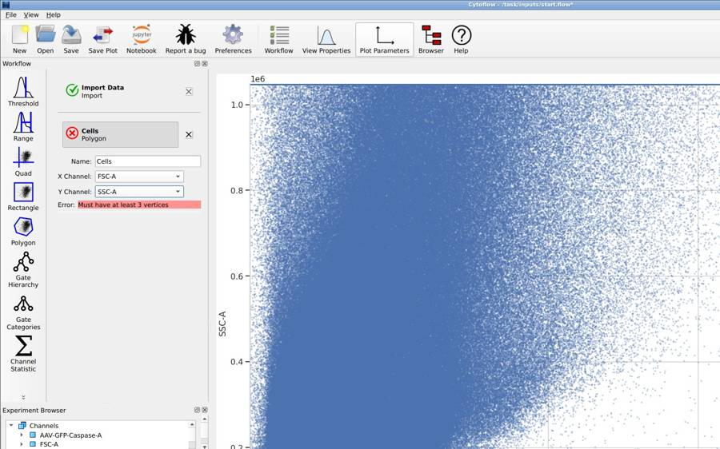
cat /usr/local/bin/cu | head -60; which xdotool wmctrl xwininfo xrandr
Exit code 1
#!/bin/bash
# Computer-use helper: the agent's only way to act on the screen.
# cu screenshot [path] -> PNG of the screen (default /tmp/screen.png); prints path
# cu click X Y [left|right|double]
# cu move X Y | cu drag X1 Y1 X2 Y2 | cu scroll X Y up|down [N]
# cu type "text" (keystrokes) | cu paste "text" (clipboard) | cu key KEYS (e.g. ctrl+s, Return)
# cu cursor -> current mouse position
export DISPLAY=${DISPLAY:-:1}
cmd=$1; shift
case "$cmd" in
screenshot) out=${1:-/tmp/screen.png}; scrot -o "$out" && echo "$out" ;;
click) xdotool mousemove "$1" "$2"; case "${3:-left}" in
left) xdotool click 1;; right) xdotool click 3;; double) xdotool click --repeat 2 1;; esac ;;
move) xdotool mousemove "$1" "$2" ;;
drag) xdotool mousemove "$1" "$2" mousedown 1 mousemove --sync "$3" "$4" mouseup 1 ;;
scroll) xdotool mousemove "$1" "$2"; b=$([ "$3" = up ] && echo 4 || echo 5); xdotool click --repeat "${4:-3}" $b ;;
type) xdotool type --delay 50 -- "$1" ;;
# paste: put text on the clipboard (detached owner process so it survives this command) then ctrl+v
# paste: own the clipboard (no -loops: Qt asks for TARGETS first, then the text), press ctrl+v,
# give Qt a moment to fetch it, then release. Robust both locally and on Modal.
paste) printf '%s' "$1" | xclip -quiet -selection clipboard -i >/dev/null 2>&1 & cp=$!
sleep 0.3; xdotool key ctrl+v; sleep 1; kill $cp 2>/dev/null; true ;;
key) xdotool key -- "$1" ;;
cursor) xdotool getmouselocation ;;
*) sed -n '2,9p' "$0"; exit 1 ;;
esac
/usr/bin/xdotool
/usr/bin/xwininfoexport DISPLAY=:1; xdotool search --onlyvisible --name "Cytoflow" | while read w; do xdotool getwindowname $w; xdotool getwindowgeometry $w; done; xdotool getdisplaygeometry
Cytoflow - /task/inputs/start.flow* Window 14680070 Position: 2,40 (screen: 0) Geometry: 2082x1171 1440 900
export DISPLAY=:1; cu click 700 9 double; sleep 2; xdotool getwindowgeometry 14680070; cu screenshot /tmp/screen.png
{
"file_path": "/tmp/screen.png"
}Window 14680070 Position: 0,38 (screen: 0) Geometry: 1440x881 /tmp/screen.png
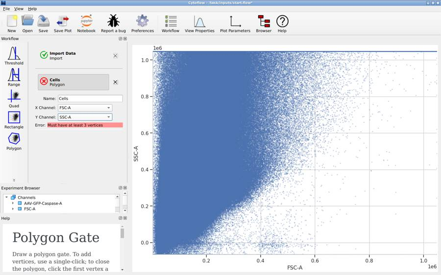
cu click 408 714; sleep 0.5; cu click 408 615; sleep 0.5; cu click 652 78; sleep 2; cu screenshot /tmp/screen.png
{
"file_path": "/tmp/screen.png"
}/tmp/screen.png
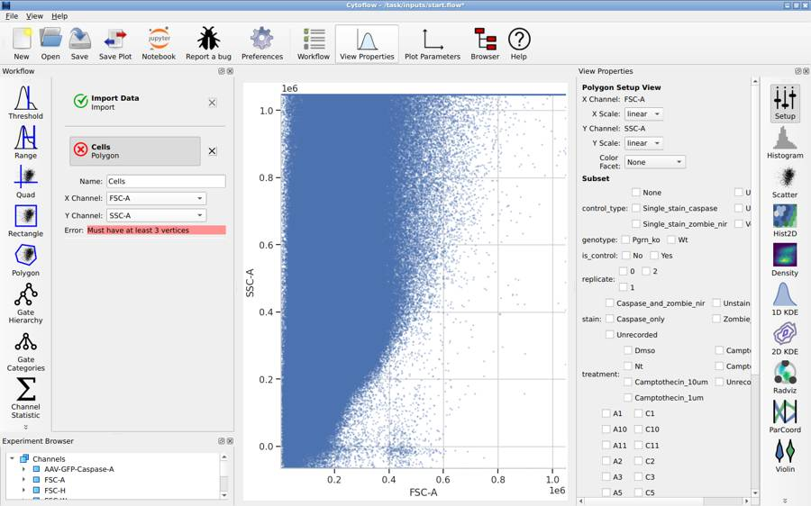
cu click 244 182; sleep 1; cu click 1393 460; sleep 3; cu screenshot /tmp/screen.png
{
"file_path": "/tmp/screen.png"
}/tmp/screen.png
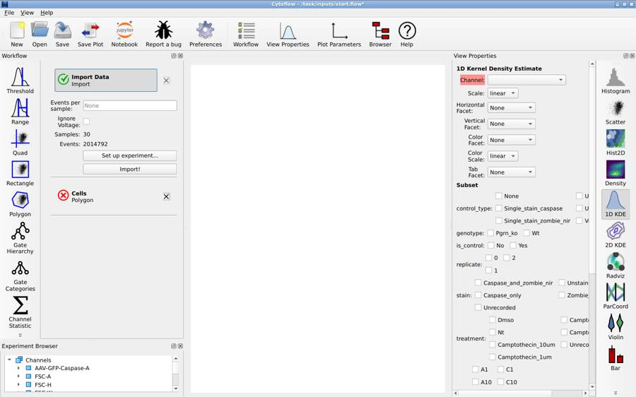
cu click 1393 390; sleep 2; cu drag 1020 510 900 510; sleep 2; cu screenshot /tmp/screen.png
{
"file_path": "/tmp/screen.png"
}/tmp/screen.png
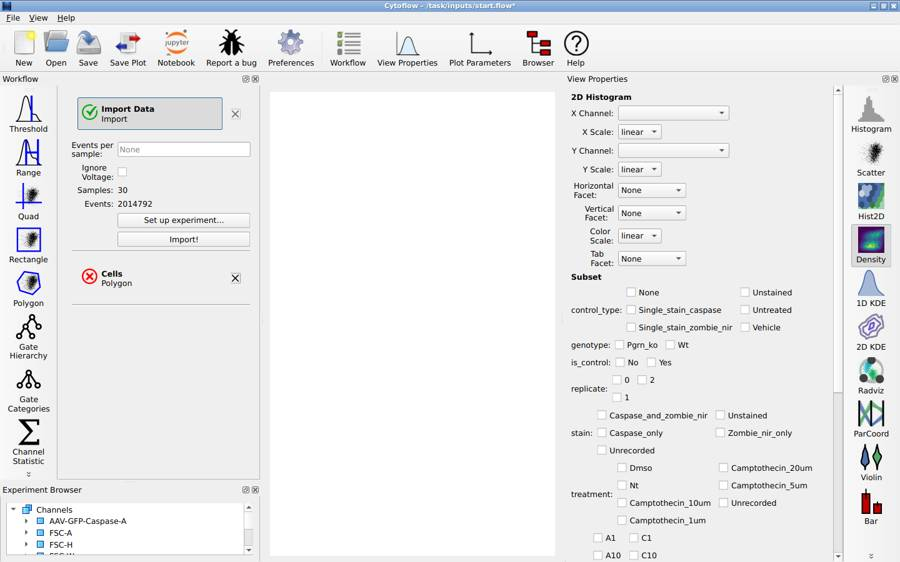
cu click 1077 181; sleep 0.7; cu click 1040 206; sleep 1; cu click 1077 241; sleep 0.7; cu click 1040 362; sleep 1; cu click 1043 305; sleep 1; cu screenshot /tmp/screen.png
{
"file_path": "/tmp/screen.png"
}/tmp/screen.png
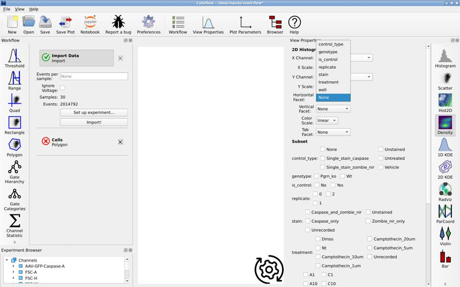
cu click 1010 281; sleep 1; cu click 768 78; sleep 6; cu screenshot /tmp/screen.png
{
"file_path": "/tmp/screen.png"
}/tmp/screen.png
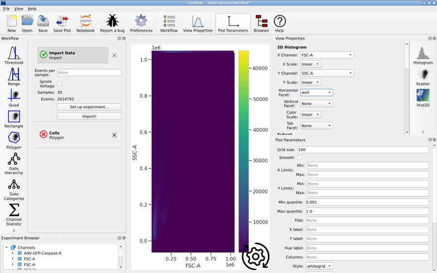
cu click 1200 847; cu type "6"; cu key Return; sleep 1; cu click 1023 378; sleep 1; cu screenshot /tmp/screen.png
{
"file_path": "/tmp/screen.png"
}/tmp/screen.png
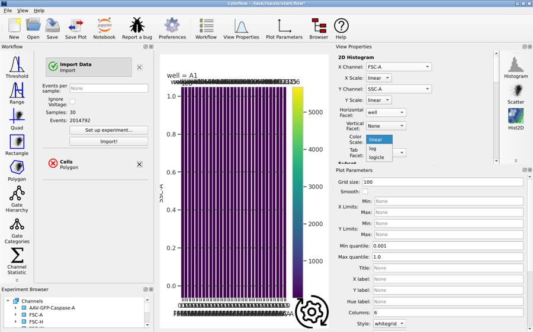
cu click 1006 402; sleep 1; cu drag 900 510 1170 510; sleep 12; cu screenshot /tmp/screen.png
{
"file_path": "/tmp/screen.png"
}/tmp/screen.png
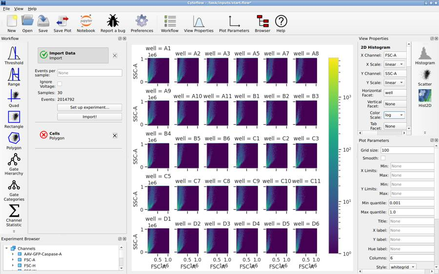
cu click 1350 575; cu type "500000"; cu key Return; sleep 12; cu screenshot /tmp/screen.png; python3 -c "import PIL; print(PIL.__version__)"
{
"file_path": "/tmp/screen.png"
}/tmp/screen.png 10.2.0
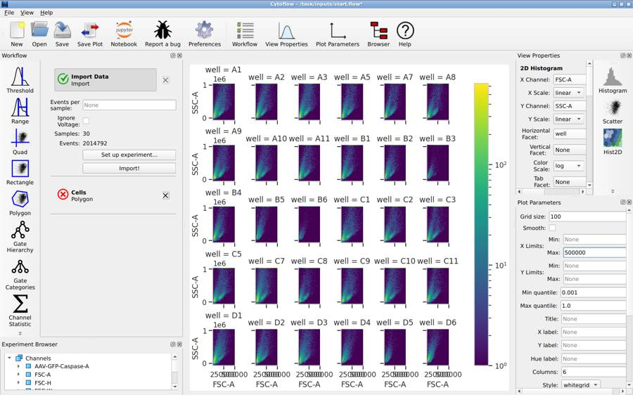
mkdir -p /tmp/plots; chmod 777 /tmp/plots; cu click 204 78; sleep 2; cu screenshot /tmp/screen.png
{
"file_path": "/tmp/screen.png"
}/tmp/screen.png
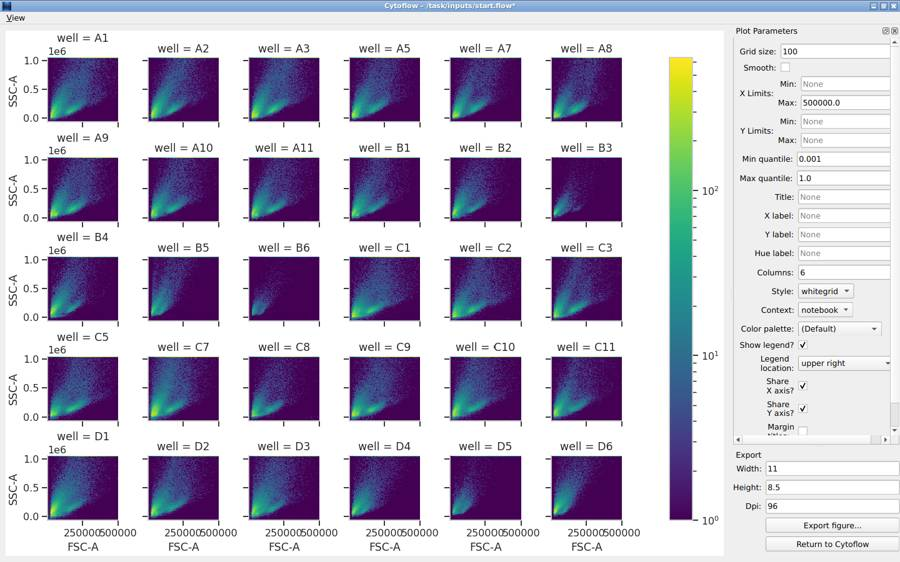
cu click 1330 811 double; cu key ctrl+a; cu type "200"; cu key Return; sleep 1; cu click 1330 841; sleep 2; cu screenshot /tmp/screen.png
{
"file_path": "/tmp/screen.png"
}/tmp/screen.png
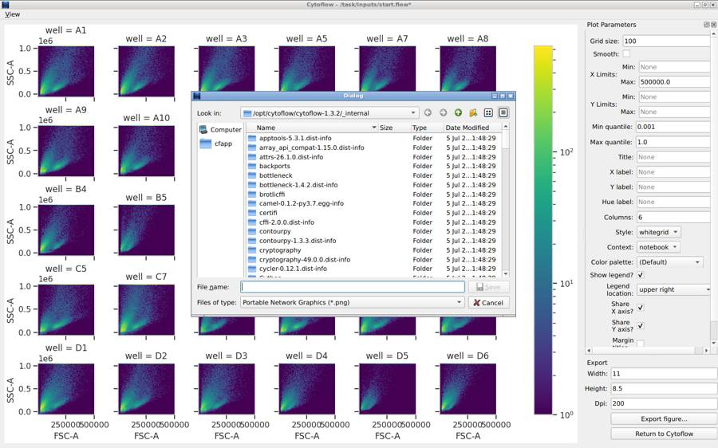
cu paste "/tmp/plots/fsc_ssc.png"; sleep 0.5; cu key Return; sleep 8; ls -la /tmp/plots; cu screenshot /tmp/screen.png
total 504 drwxrwxrwx 2 root root 4096 Nov 10 19:17 . drwxrwxrwx 9 root root 4096 Nov 10 19:17 .. -rw-rw-r-- 1 cfapp cfapp 504717 Nov 10 19:17 fsc_ssc.png /tmp/screen.png
cd /tmp/plots; python3 -c "
from PIL import Image
im=Image.open('fsc_ssc.png'); print(im.size)
w,h=im.size
im.crop((0,0,w,h//2)).save('a.png'); im.crop((0,h//2,w,h)).save('b.png')
"{
"file_path": "/tmp/plots/a.png"
}(2218, 1723) Shell cwd was reset to /task
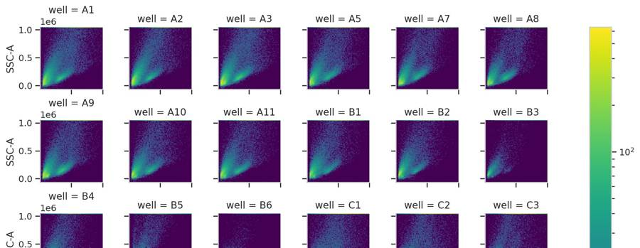
cu click 1330 871; sleep 2; cu click 1310 305; sleep 1; cu screenshot /tmp/screen.png
{
"file_path": "/tmp/screen.png"
}/tmp/screen.png
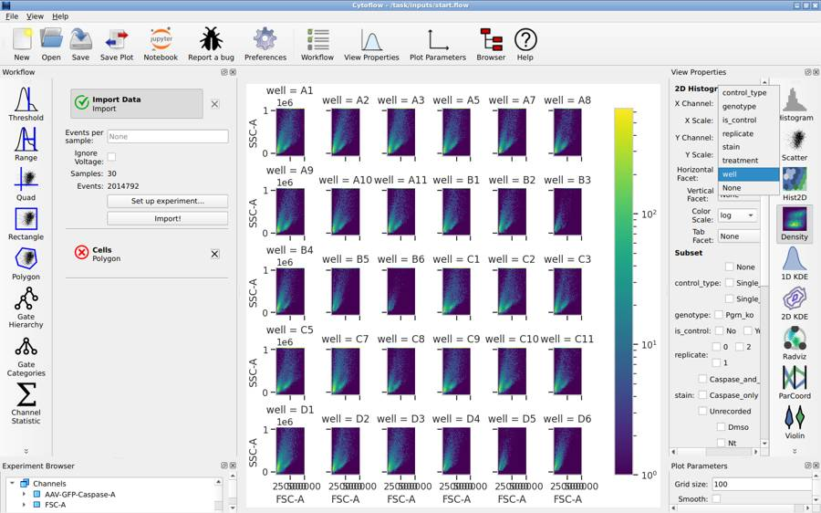
cu click 1283 329; sleep 6; cu click 204 78; sleep 3; cu click 1330 841; sleep 2; cu paste "/tmp/plots/fsc_ssc_pooled.png"; sleep 0.5; cu key Return; sleep 6; cu screenshot /tmp/screen.png; ls -la /tmp/plots
{
"file_path": "/tmp/plots/fsc_ssc_pooled.png"
}/tmp/screen.png total 1024 drwxrwxrwx 2 root root 4096 Nov 10 19:18 . drwxrwxrwx 9 root root 4096 Nov 10 19:18 .. -rw-r--r-- 1 root root 255203 Nov 10 19:18 a.png -rw-r--r-- 1 root root 250051 Nov 10 19:18 b.png -rw-rw-r-- 1 cfapp cfapp 504717 Nov 10 19:17 fsc_ssc.png -rw-rw-r-- 1 cfapp cfapp 19440 Nov 10 19:18 fsc_ssc_pooled.png
thinking
The scatter overview shows a low-FSC debris cluster and a separate cell cloud. The pooled-plot export came out blank, probably because it ran before the redraw finished, so I'm checking the screen and retrying.
{
"file_path": "/tmp/screen.png"
}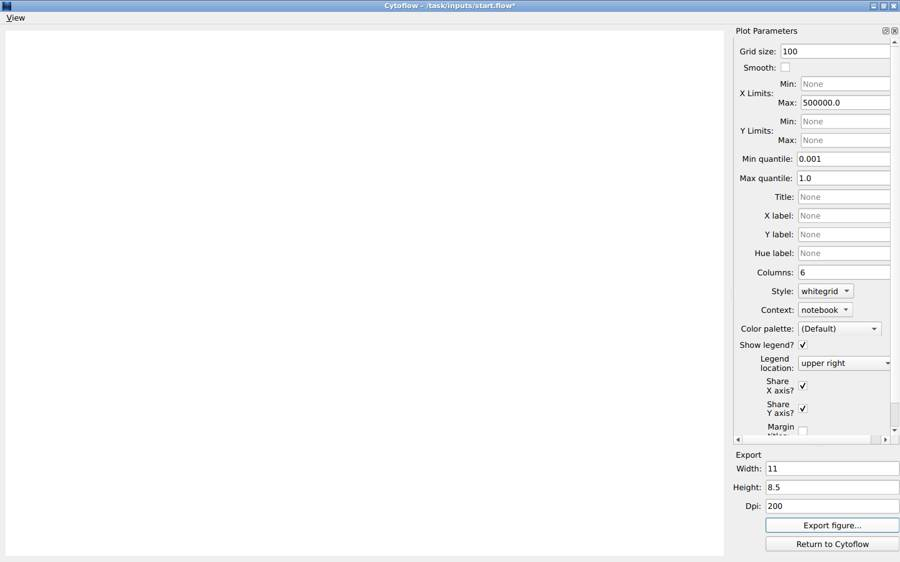
cu click 1330 871; sleep 5; cu screenshot /tmp/screen.png
{
"file_path": "/tmp/screen.png"
}/tmp/screen.png
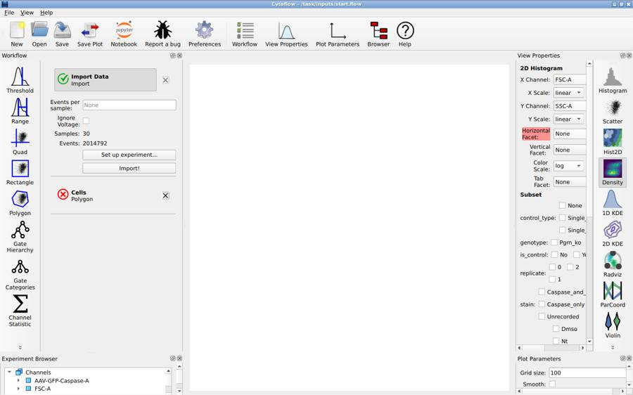
cu drag 1260 806 1260 440; sleep 1; cu screenshot /tmp/screen.png
{
"file_path": "/tmp/screen.png"
}/tmp/screen.png
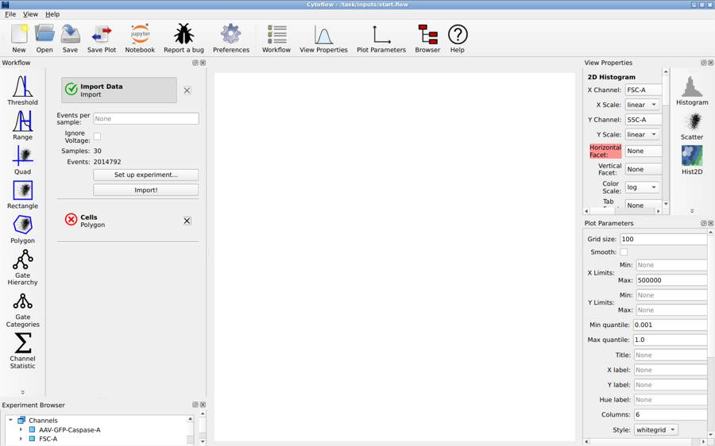
cu click 1350 837; cu key ctrl+a; cu key BackSpace; cu key Return; sleep 8; cu screenshot /tmp/screen.png
{
"file_path": "/tmp/screen.png"
}/tmp/screen.png
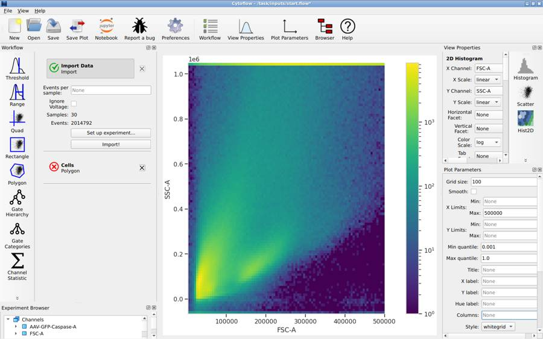
cu click 1350 566; cu key ctrl+a; cu type "400000"; cu key Return; sleep 1; cu click 1350 626; cu key ctrl+a; cu type "500000"; cu key Return; sleep 1; cu click 1350 596; cu key ctrl+a; cu type "0"; cu key Return; sleep 8; cu screenshot /tmp/screen.png
{
"file_path": "/tmp/screen.png"
}/tmp/screen.png
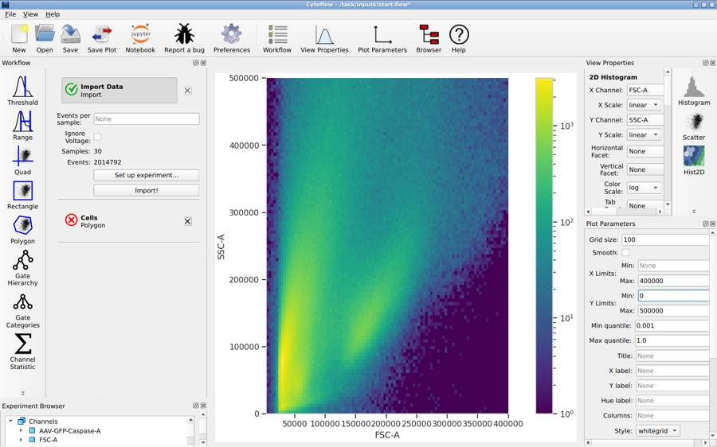
cu click 244 445; sleep 10; cu screenshot /tmp/screen.png
{
"file_path": "/tmp/screen.png"
}/tmp/screen.png
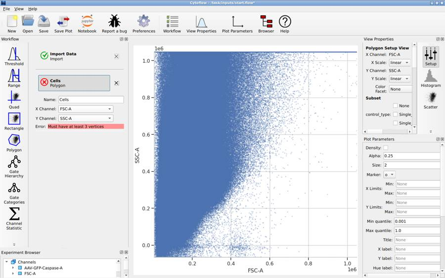
cu click 1248 479; sleep 1; cu click 1350 596; cu type "0"; cu key Return; cu click 1350 626; cu type "400000"; cu key Return; cu click 1350 656; cu type "0"; cu key Return; cu click 1350 686; cu type "500000"; cu key Return; sleep 10; cu screenshot /tmp/screen.png
{
"file_path": "/tmp/screen.png"
}/tmp/screen.png
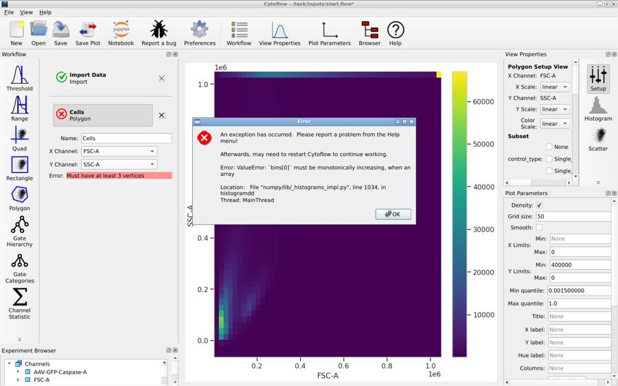
cu click 915 499; sleep 1
setf(){ cu click 1350 $1; cu key ctrl+a; cu type "$2"; cu key Return; sleep 0.5; }
setf 588 400000; setf 618 0; setf 648 500000; setf 557 0; setf 678 0.001
sleep 6; cu screenshot /tmp/screen.png{
"file_path": "/tmp/screen.png"
}/tmp/screen.png
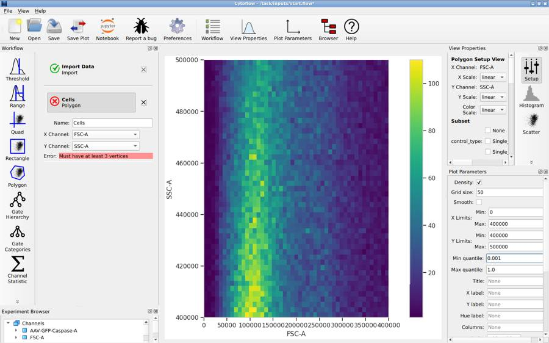
setf(){ cu click 1350 $1; cu key ctrl+a; cu type "$2"; cu key Return; sleep 0.5; }
setf 618 0; setf 505 100; cu click 1293 289; sleep 1; cu screenshot /tmp/s1.png; {
"file_path": "/tmp/s1.png"
}/tmp/s1.png
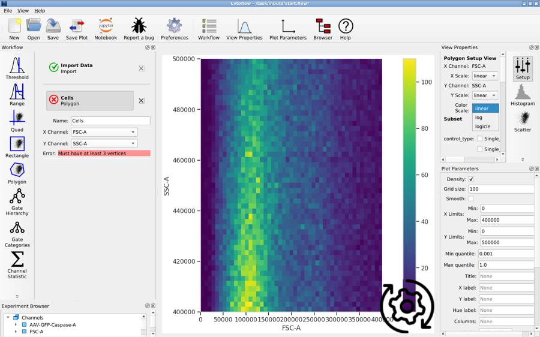
cu click 1277 314; sleep 10; cu screenshot /tmp/s1.png;
{
"file_path": "/tmp/s1.png"
}/tmp/s1.png
for p in "671 772" "717 772" "778 725" "850 630" "923 495" "935 400" "887 360" "814 400" "741 508" "693 630" "668 718" "671 772"; do cu click $p; sleep 0.8; done; sleep 10; cu screenshot /tmp/s1.png
{
"file_path": "/tmp/s1.png"
}/tmp/s1.png
cu click 20 29; sleep 1; cu screenshot /tmp/s1.png
{
"file_path": "/tmp/s1.png"
}/tmp/s1.png
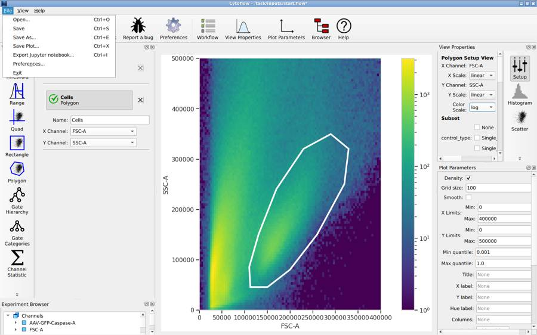
cu click 65 100; sleep 2; cu paste "/task/outputs/workflow.flow"; sleep 0.5; cu key Return; sleep 3; cu screenshot /tmp/s1.png; ls -la /task/outputs
{
"file_path": "/tmp/s1.png"
}/tmp/s1.png total 48 drwxrwsrwx 2 agent task 4096 Nov 10 19:21 . drwxr-xr-x 4 root root 4096 Nov 5 08:15 .. -rw-rw-r-- 1 cfapp task 37277 Nov 10 19:21 workflow.flow
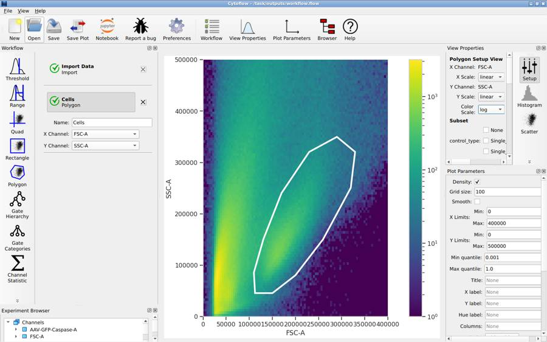
cd /task/outputs; grep -n "polygon" -A 60 workflow.flow | grep -v "^--$" | head -90
1363: current_view: &id003 !polygon-view;3 1364- current_plot: null 1365- huefacet: '' 1366- huescale: log 1367: op: &id002 !polygon;1 1368- name: Cells 1369- vertices: 1370- - !!python/tuple 1371- - 112508.1102863549 1372- - 45716.92037012393 1373- - !!python/tuple 1374- - 150172.7735128138 1375- - 45716.92037012393 1376- - !!python/tuple 1377- - 199821.6477658732 1378- - 80361.56969803125 1379- - !!python/tuple 1380- - 259742.70289887596 1381- - 150420.7494500216 1382- - !!python/tuple 1383- - 319663.75803187874 1384- - 250505.29195286497 1385- - !!python/tuple 1386- - 329079.9238384934 1387- - 320564.4717048553 1388- - !!python/tuple 1389- - 289703.23046537733 1390- - 349819.95335953264 1391- - !!python/tuple 1392- - 229782.17533237455 1393- - 320564.4717048553 1394- - !!python/tuple 1395- - 169861.12019937183 1396- - 240496.83770258067 1397- - !!python/tuple 1398- - 130484.42682625575 1399- - 150420.7494500216 1400- - !!python/tuple 1401- - 109940.06506636908 1402- - 85750.73737126128 1403- xchannel: FSC-A 1404- xscale: linear 1405- ychannel: SSC-A 1406- yscale: linear 1407: plot_params: !polygon-params;1 1408- alpha: 0.25 1409- col_wrap: null 1410- density: true 1411- despine: true 1412- gridsize: 100 1413- huelabel: '' 1414- legend: true 1415- marker: o 1416- max_quantile: 1.0 1417- min_quantile: 0.001 1418- s: 2 1419- sharex: true 1420- sharey: true 1421- smoothed: false 1422- smoothed_sigma: 1.0 1423- sns_context: notebook 1424- sns_style: whitegrid 1425- title: '' 1426- xlabel: '' 1427- xlim: !!python/tuple 1428- - 0.0 1429- - 400000.0 1430- ylabel: '' 1431- ylim: !!python/tuple 1432- - 0.0 1433- - 500000.0 1434- subset_list: 1435- - !category-subset;1 1436- name: control_type 1437- selected: [] 1438- values: 1439- - none 1440- - single_stain_caspase 1441- - single_stain_zombie_nir 1442- - unstained 1443- - untreated 1444- - vehicle 1445- - !category-subset;1 1446- name: genotype 1447- selected: [] 1448- values: 1449- - PGRN_KO 1450- - WT 1451- - !category-subset;1 1452- name: is_control
cu click 46 455; sleep 3; cu screenshot /tmp/s1.png
{
"file_path": "/tmp/s1.png"
}/tmp/s1.png
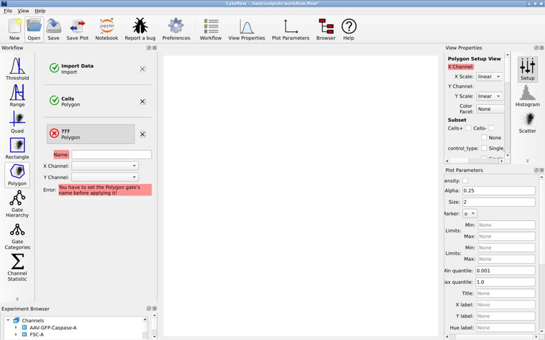
cu click 295 409; cu type "Single_Cells"; cu key Tab; sleep 0.5; cu click 278 440; sleep 0.8; cu click 220 585; sleep 1; cu click 278 470; sleep 0.8; cu click 220 591; sleep 1; cu screenshot /tmp/s1.png
{
"file_path": "/tmp/s1.png"
}/tmp/s1.png
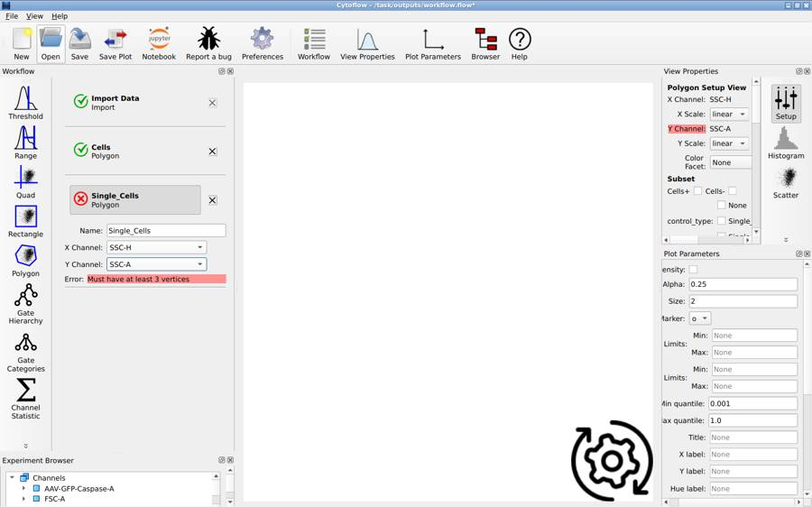
cu click 1237 339; sleep 1; cu click 1229 479; sleep 2; cu click 1293 289; sleep 1; cu click 1277 314; sleep 8; cu screenshot /tmp/s1.png
{
"file_path": "/tmp/s1.png"
}/tmp/s1.png
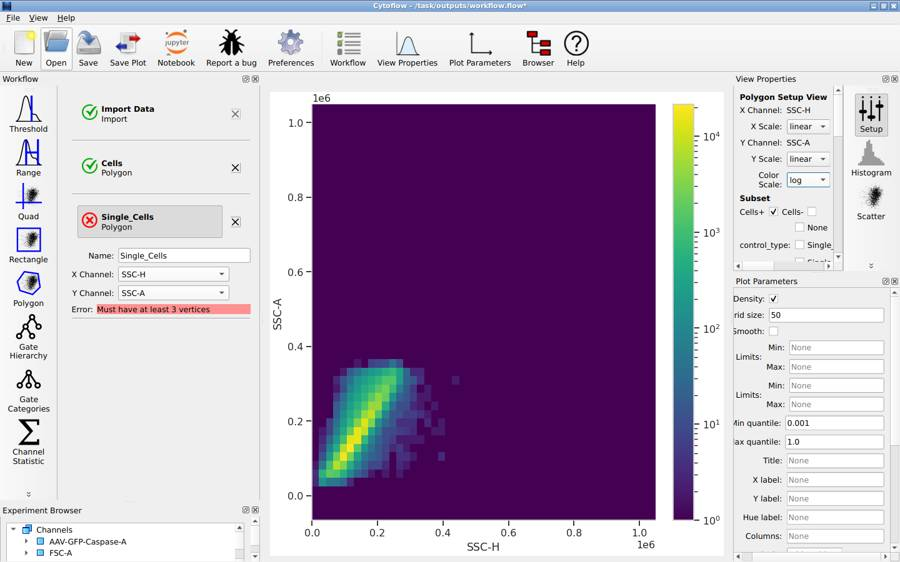
setf(){ cu click 1338 $1; cu key ctrl+a; cu type "$2"; cu key Return; sleep 0.5; }
setf 588 350000; setf 557 0; setf 648 400000; setf 618 0; setf 505 100; sleep 8; cu screenshot /tmp/s1.png{
"file_path": "/tmp/s1.png"
}/tmp/s1.png
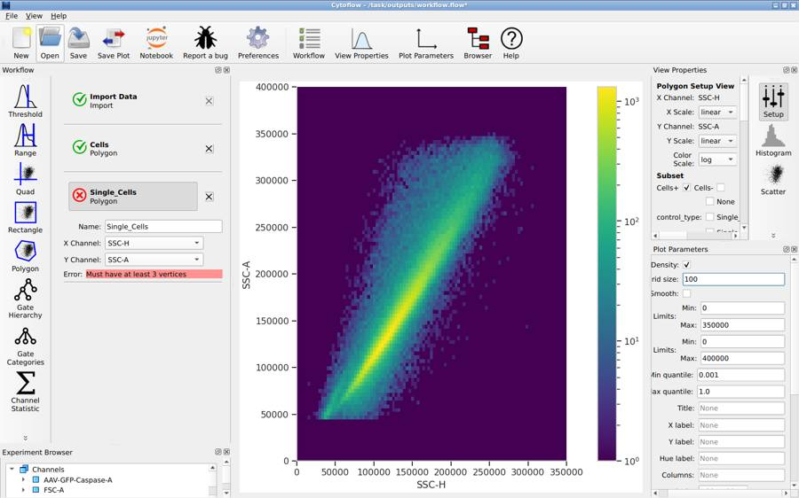
for p in "563 765" "611 769" "958 242" "833 225" "563 765"; do cu click $p; sleep 0.8; done; sleep 8; cu screenshot /tmp/s1.png
{
"file_path": "/tmp/s1.png"
}/tmp/s1.png
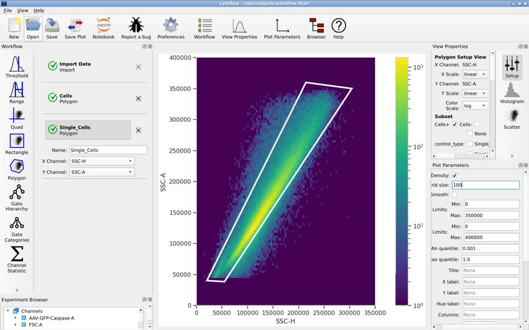
cu key ctrl+s; sleep 2; cu drag 1300 440 1300 640; sleep 1; cu screenshot /tmp/s1.png; ls -la /task/outputs
{
"file_path": "/tmp/s1.png"
}/tmp/s1.png total 60 drwxrwsrwx 2 agent task 4096 Nov 10 19:21 . drwxr-xr-x 4 root root 4096 Nov 5 08:15 .. -rw-rw-r-- 1 cfapp task 50831 Nov 10 19:23 workflow.flow
cu click 1393 460; sleep 3; cu screenshot /tmp/s1.png
{
"file_path": "/tmp/s1.png"
}/tmp/s1.png
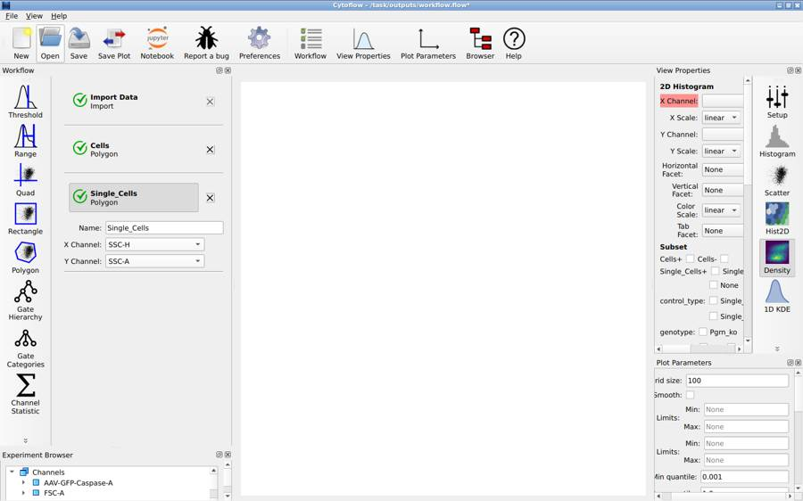
cu click 1237 465; sleep 0.5; cu click 1282 487; sleep 0.5 cu click 1295 181; sleep 0.8; cu screenshot /tmp/s0.png; cu click 1300 278; sleep 1 cu click 1295 241; sleep 0.8; cu click 1300 362; sleep 1 cu click 1293 211; sleep 0.8; cu click 1290 259; sleep 1 cu click 1293 378; sleep 0.8; cu click 1280 402; sleep 1 cu click 1295 305; sleep 0.8; cu click 1280 281; sleep 1 cu click 1338 684; cu key ctrl+a; cu type "60"; cu key Return; sleep 1 cu screenshot /tmp/s1.png
{
"file_path": "/tmp/s1.png"
}/tmp/s0.png /tmp/s1.png
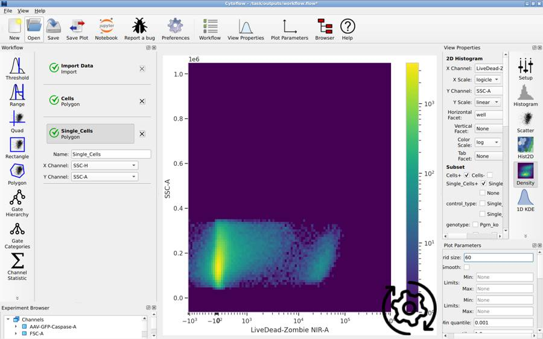
sleep 5; cu click 204 78; sleep 4; cu screenshot /tmp/s1.png
{
"file_path": "/tmp/s1.png"
}/tmp/s1.png
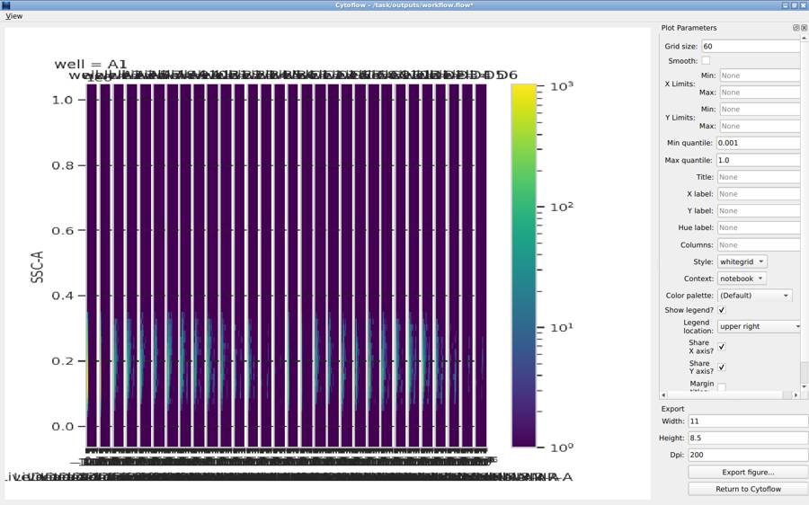
cat > /tmp/exp.sh <<'EOF'
#!/bin/bash
# export current figure in Save Plot mode to path $1
cu click 1330 841; sleep 2; cu paste "$1"; sleep 0.5; cu key Return; sleep ${2:-6}
EOF
chmod +x /tmp/exp.sh
setp(){ cu click 1350 $1; cu key ctrl+a; cu type "$2"; cu key Return; sleep 0.5; }
setp 436 6; setp 225 400000; setp 195 0; sleep 15; cu screenshot /tmp/s1.png{
"file_path": "/tmp/s1.png"
}/tmp/s1.png
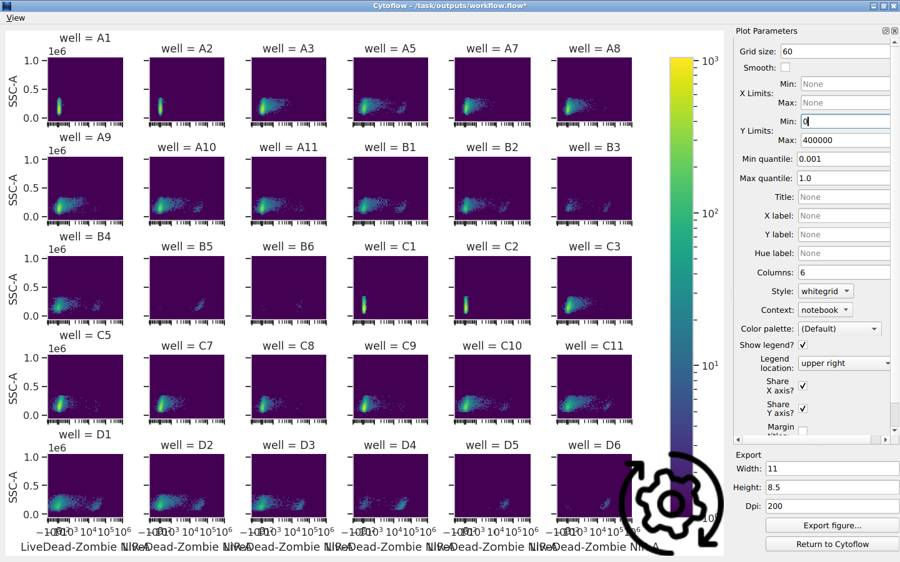
sleep 8; /tmp/exp.sh /tmp/plots/rl3_ssc_wells.png 8; cd /tmp/plots; python3 -c "
from PIL import Image
im=Image.open('rl3_ssc_wells.png'); print(im.size)
w,h=im.size
im.crop((0,0,w,int(h*0.42))).save('a.png'); im.crop((0,int(h*0.38),w,int(h*0.72))).save('b.png'); im.crop((0,int(h*0.68),w,h)).save('c.png')
"{
"file_path": "/tmp/plots/a.png"
}{
"file_path": "/tmp/plots/b.png"
}{
"file_path": "/tmp/plots/c.png"
}(2218, 1723) Shell cwd was reset to /task
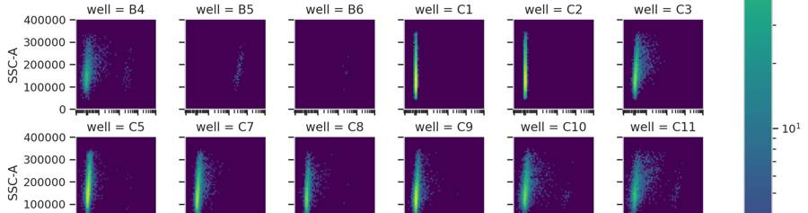
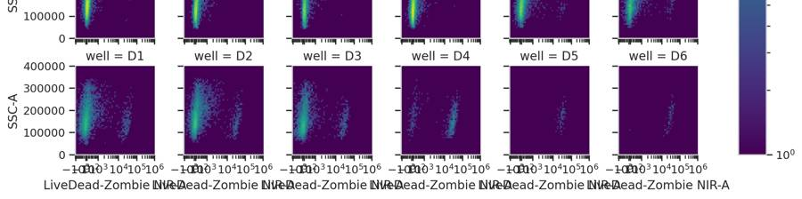
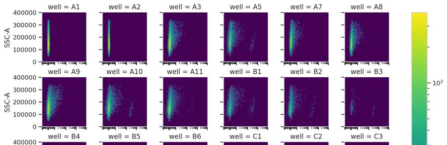
cu click 1330 871; sleep 3; cu click 1295 181; sleep 1; cu screenshot /tmp/s1.png
{
"file_path": "/tmp/s1.png"
}/tmp/s1.png
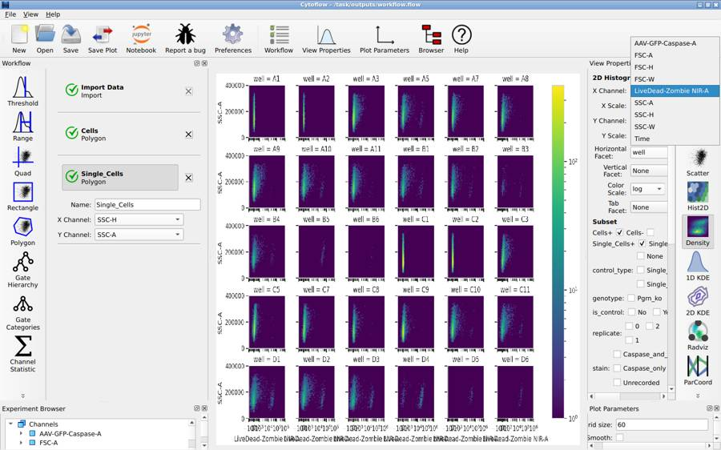
thinking
The Zombie-only controls look unstained in RL3-A while the caspase-only controls look Zombie-stained, so A2/A3 and C2/C3 may be swapped. I'm checking the caspase channel next.
cu click 1330 86; sleep 15; cu click 204 78; sleep 5; /tmp/exp.sh /tmp/plots/bl1_ssc_wells.png 8; cu screenshot /tmp/s1.png; cd /tmp/plots; python3 -c "
from PIL import Image
im=Image.open('bl1_ssc_wells.png'); print(im.size)
w,h=im.size
im.crop((0,0,w,int(h*0.42))).save('a.png'); im.crop((0,int(h*0.38),w,int(h*0.72))).save('b.png'); im.crop((0,int(h*0.68),w,h)).save('c.png')
"{
"file_path": "/tmp/plots/a.png"
}{
"file_path": "/tmp/plots/b.png"
}{
"file_path": "/tmp/plots/c.png"
}/tmp/s1.png (2218, 1723) Shell cwd was reset to /task
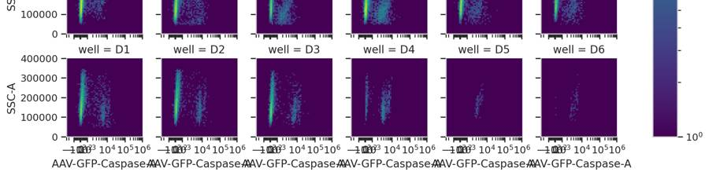
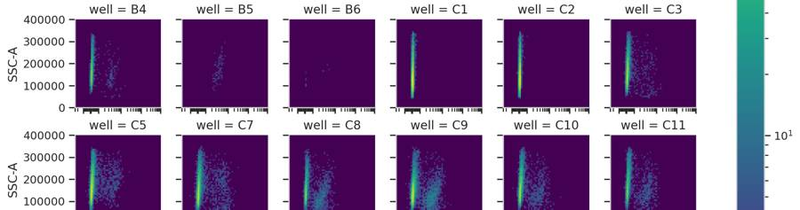
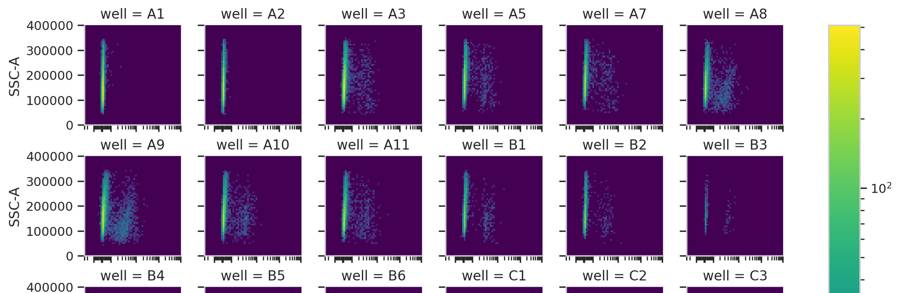
cu click 1330 871; sleep 3; cu click 1393 250; sleep 3; cu screenshot /tmp/s1.png
{
"file_path": "/tmp/s1.png"
}/tmp/s1.png
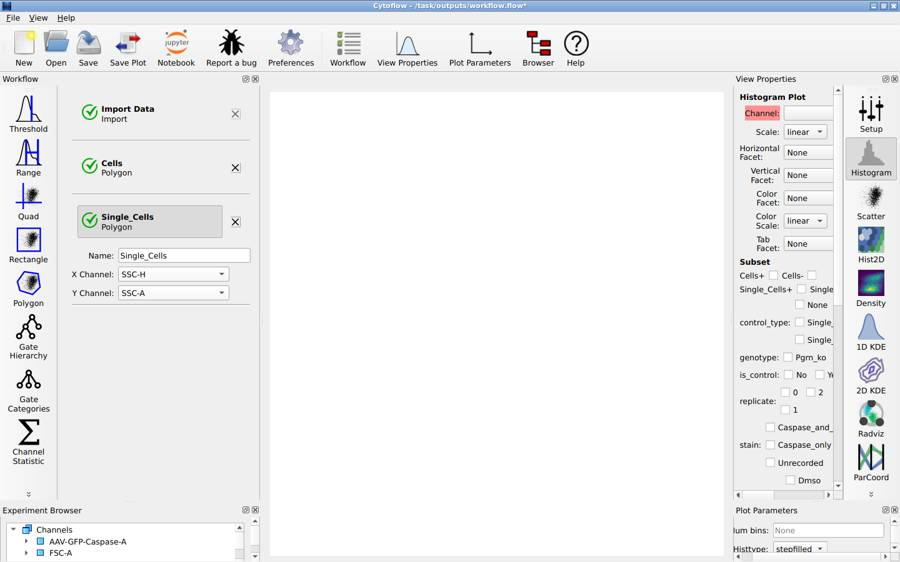
thinking
Caspase data shows A2/C2 lack both dye signals while A3/C3 have caspase-positive events and a Zombie shift. I'm pulling per-well Zombie NIR histograms next to locate the valley for the Live boundary.
cu click 1237 441; sleep 0.5; cu click 1282 463; sleep 0.5
cu click 1293 181; sleep 0.8; cu click 1300 278; sleep 1
cu click 1288 211; sleep 0.8; cu click 1285 259; sleep 1
cu click 1293 244; sleep 0.8; cu click 1280 220; sleep 4
cu click 204 78; sleep 4
setp(){ cu click 1350 $1; cu key ctrl+a; cu type "$2"; cu key Return; sleep 0.5; }
cu screenshot /tmp/s1.png{
"file_path": "/tmp/s1.png"
}/tmp/s1.png
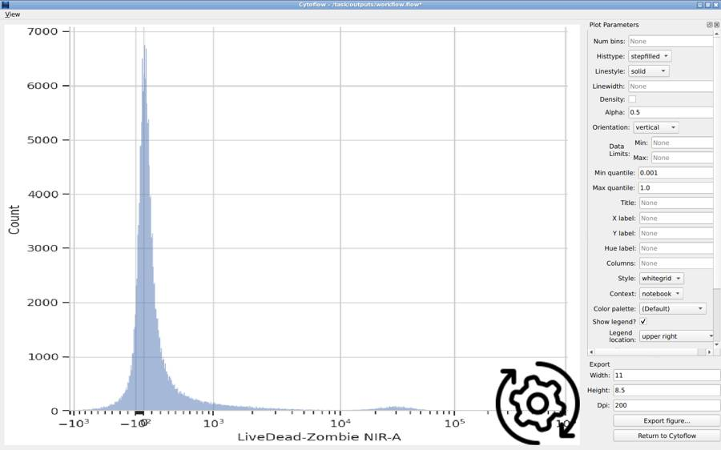
setp(){ cu click 1350 $1; cu key ctrl+a; cu type "$2"; cu key Return; sleep 0.5; }
setp 527 6; sleep 12; /tmp/exp.sh /tmp/plots/rl3_hist_wells.png 8; cd /tmp/plots; python3 -c "
from PIL import Image
im=Image.open('rl3_hist_wells.png'); print(im.size)
w,h=im.size
im.crop((0,0,w,int(h*0.5))).save('a.png'); im.crop((0,int(h*0.5),w,h)).save('b.png')
"{
"file_path": "/tmp/plots/a.png"
}{
"file_path": "/tmp/plots/b.png"
}(2223, 1723) Shell cwd was reset to /task

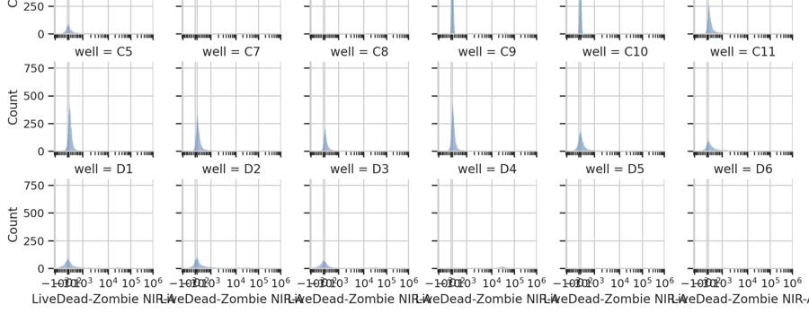
date; cu click 1330 871; sleep 3; cu click 46 385; sleep 3; cu screenshot /tmp/s1.png
{
"file_path": "/tmp/s1.png"
}Tue Nov 10 19:28:04 UTC 2026 /tmp/s1.png
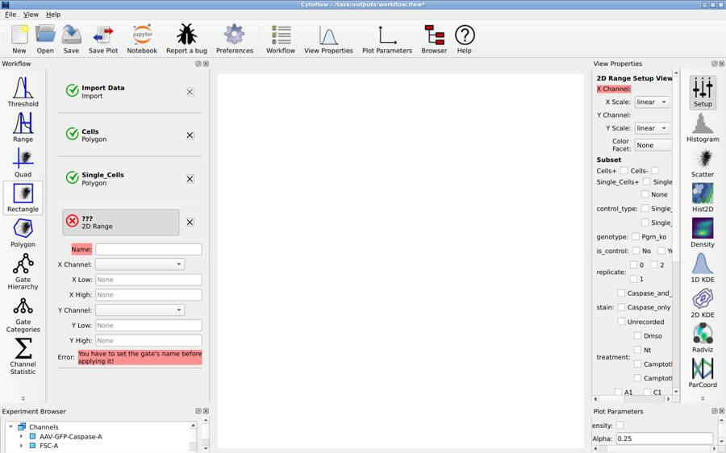
cu click 295 495; cu type "Live"; cu key Tab; sleep 0.5; cu click 278 526; sleep 0.8; cu click 250 623; sleep 1; cu click 278 617; sleep 0.8; cu click 250 738; sleep 1 cu click 1237 339; sleep 0.5; cu click 1282 361; sleep 0.5 cu click 1293 203; sleep 0.8; cu click 1290 251; sleep 2 cu screenshot /tmp/s1.png
{
"file_path": "/tmp/s1.png"
}/tmp/s1.png
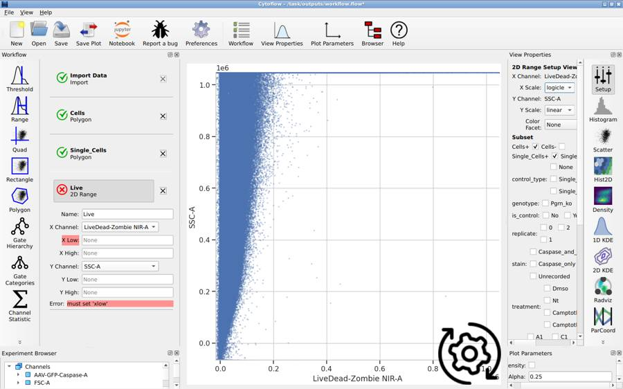
sleep 3; cu click 1229 846; sleep 2; cu click 1293 289; sleep 1; cu click 1277 314; sleep 10; cu screenshot /tmp/s1.png
{
"file_path": "/tmp/s1.png"
}/tmp/s1.png

sleep 6; cu screenshot /tmp/s1.png
{
"file_path": "/tmp/s1.png"
}/tmp/s1.png
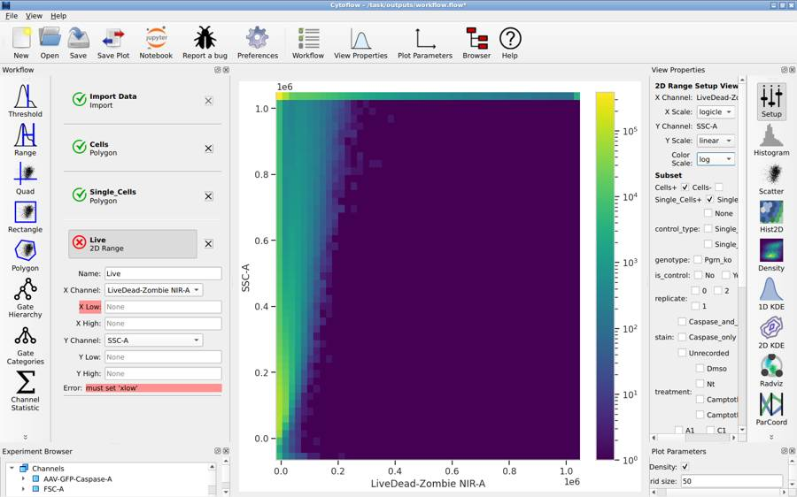
setl(){ cu click 295 $1; cu key ctrl+a; cu type "$2"; cu key Return; sleep 0.7; }
setl 556 -5000; setl 586 8000; setl 647 40000; setl 677 360000; sleep 10; cu screenshot /tmp/s1.png{
"file_path": "/tmp/s1.png"
}/tmp/s1.png
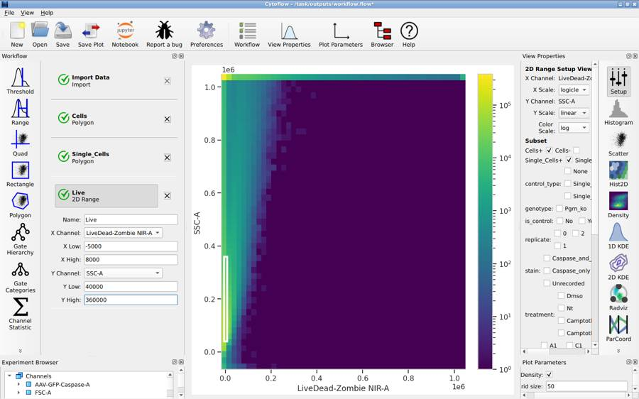
cu click 1393 250; sleep 3; cu screenshot /tmp/s1.png
{
"file_path": "/tmp/s1.png"
}/tmp/s1.png
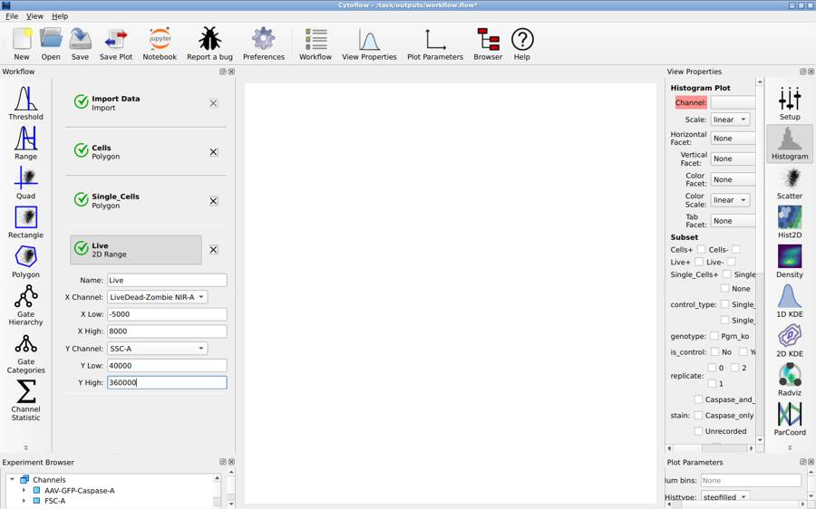
cu click 1237 441; sleep 0.5; cu click 1282 485; sleep 0.5 cu click 1293 181; sleep 0.8; cu click 1300 278; sleep 1 cu click 1288 211; sleep 0.8; cu click 1285 259; sleep 1 cu click 1293 317; sleep 1; cu screenshot /tmp/s1.png
{
"file_path": "/tmp/s1.png"
}/tmp/s1.png
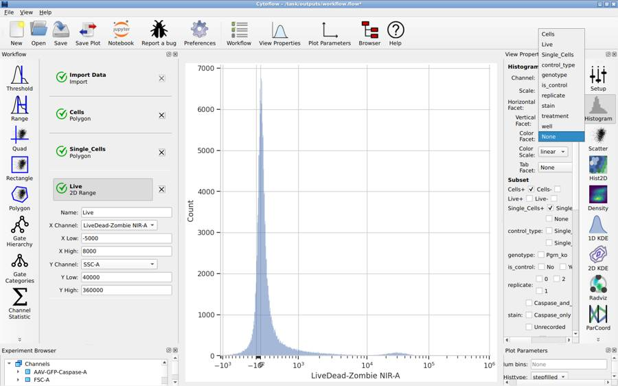
cu click 1275 103; sleep 5; cu click 204 78; sleep 4 cu click 1362 285; cu key ctrl+a; cu type "800"; cu key Return; sleep 8; /tmp/exp.sh /tmp/plots/rl3_hist_live.png 6
{
"file_path": "/tmp/plots/rl3_hist_live.png"
}(Bash completed with no output)
cd /tmp/plots; python3 -c "
from PIL import Image
im=Image.open('rl3_hist_live.png'); w,h=im.size
im.crop((0,int(h*0.83),w,h)).resize((w,int(h*0.17)*3)).save('a.png')"Shell cwd was reset to /task
{
"file_path": "/tmp/plots/a.png"
}cu click 1330 871; sleep 3; cu click 46 385; sleep 3; cu screenshot /tmp/s1.png
{
"file_path": "/tmp/s1.png"
}/tmp/s1.png
cu click 408 817; sleep 1; cu click 287 581; cu type "Caspase_pos"; cu key Tab; sleep 0.5; cu click 278 612; sleep 0.8; cu click 250 613; sleep 1; cu click 278 702; sleep 0.8; cu screenshot /tmp/s0.png; cu click 250 823; sleep 1
setl(){ cu click 287 $1; cu key ctrl+a; cu type "$2"; cu key Return; sleep 0.7; }
setl 642 1000; setl 672 1100000; setl 732 40000; setl 762 360000; sleep 3; cu screenshot /tmp/s1.png{
"file_path": "/tmp/s1.png"
}/tmp/s0.png /tmp/s1.png
sleep 5; cu click 1393 250; sleep 3; cu screenshot /tmp/s1.png
{
"file_path": "/tmp/s1.png"
}/tmp/s1.png
cu click 1237 463; sleep 0.5; cu click 1233 485; sleep 0.5; cu click 1282 507; sleep 0.5 cu click 1293 181; sleep 0.8; cu click 1300 182; sleep 1 cu click 1288 211; sleep 0.8; cu click 1285 259; sleep 1 cu click 1293 317; sleep 1; cu screenshot /tmp/s1.png
{
"file_path": "/tmp/s1.png"
}/tmp/s1.png
cu click 1300 55; sleep 5; cu click 204 78; sleep 4
cu click 1362 285; cu key ctrl+a; cu type "300"; cu key Return; sleep 8; /tmp/exp.sh /tmp/plots/bl1_hist_live.png 6
cd /tmp/plots; python3 -c "
from PIL import Image
im=Image.open('bl1_hist_live.png'); w,h=im.size
im.crop((0,int(h*0.5),w,h)).save('a.png')"{
"file_path": "/tmp/plots/a.png"
}Shell cwd was reset to /task
thinking
Caspase cut-off is set at 1,000, where the negative tail ends in the pooled live cells. I'm now adding a per-well count statistic grouped by gate membership to check the cut-offs against the control wells.
cu click 1330 871; sleep 3; cu key ctrl+s; sleep 2; cu click 46 700; sleep 3; cu screenshot /tmp/s1.png
{
"file_path": "/tmp/s1.png"
}/tmp/s1.png
cu drag 421 510 620 510; sleep 2; cu click 280 668; cu type "counts"; cu key Tab; sleep 0.5; cu click 265 698; sleep 1; cu screenshot /tmp/s1.png
{
"file_path": "/tmp/s1.png"
}/tmp/s1.png
cu click 205 887; sleep 1; cu click 250 728; sleep 1; cu screenshot /tmp/s1.png
{
"file_path": "/tmp/s1.png"
}/tmp/s1.png
cu click 205 577; sleep 1; for y in 757 785 813 842; do cu click 185 $y; sleep 0.6; done; cu click 392 870; sleep 5; cu screenshot /tmp/s1.png
{
"file_path": "/tmp/s1.png"
}/tmp/s1.png
sleep 4; cu click 1393 791; sleep 1.5; cu screenshot /tmp/s1.png
{
"file_path": "/tmp/s1.png"
}/tmp/s1.png
cu click 1400 625; sleep 3; cu screenshot /tmp/s1.png
{
"file_path": "/tmp/s1.png"
}/tmp/s1.png
cu drag 1171 510 900 510; sleep 2; cu screenshot /tmp/s1.png
{
"file_path": "/tmp/s1.png"
}/tmp/s1.png
cu click 1293 181; sleep 1; cu screenshot /tmp/s0.png; cu click 1293 183; sleep 4; cu screenshot /tmp/s1.png
{
"file_path": "/tmp/s1.png"
}/tmp/s0.png /tmp/s1.png
cu click 1293 181; sleep 1; cu screenshot /tmp/s0.png
{
"file_path": "/tmp/s0.png"
}/tmp/s0.png
mkdir -p /tmp/exports; chmod 777 /tmp/exports; cu click 1275 207; sleep 4; cu click 1293 212; sleep 2; cu screenshot /tmp/s1.png
{
"file_path": "/tmp/s1.png"
}/tmp/s1.png
cu paste "/tmp/exports/counts_v1.csv"; sleep 0.5; cu key Return; sleep 3; ls -la /tmp/exports; head -20 /tmp/exports/counts_v1.csv; wc -l /tmp/exports/counts_v1.csv; cu screenshot /tmp/s1.png
total 16 drwxrwxrwx 2 root root 4096 Nov 10 19:34 . drwxrwxrwx 10 root root 4096 Nov 10 19:34 .. -rw-rw-r-- 1 cfapp cfapp 7780 Nov 10 19:34 counts_v1.csv Caspase_pos,Cells,Live,Single_Cells,well,Time 0,0,0,0,A1,50718.0 0,0,0,0,A10,32904.0 0,0,0,0,A11,34800.0 0,0,0,0,A2,41718.0 0,0,0,0,A3,50584.0 0,0,0,0,A5,40659.0 0,0,0,0,A7,33941.0 0,0,0,0,A8,32805.0 0,0,0,0,A9,38767.0 0,0,0,0,B1,31050.0 0,0,0,0,B2,25704.0 0,0,0,0,B3,5443.0 0,0,0,0,B4,27886.0 0,0,0,0,B5,19737.0 0,0,0,0,B6,3501.0 0,0,0,0,C1,58726.0 0,0,0,0,C10,49705.0 0,0,0,0,C11,34878.0 0,0,0,0,C2,48124.0 449 /tmp/exports/counts_v1.csv /tmp/s1.png
cat > /tmp/tab.py <<'EOF'
import pandas as pd, sys, re
f=sys.argv[1]
d=pd.read_csv(f)
d=d.rename(columns={'Time':'n'})
d['n']=d['n'].fillna(0)
def key(w): return (w[0],int(w[1:]))
rows=[]
for w,g in d.groupby('well'):
tot=g.n.sum()
c=g[g.Cells==1].n.sum()
s=g[(g.Cells==1)&(g.Single_Cells==1)].n.sum()
l=g[(g.Cells==1)&(g.Single_Cells==1)&(g.Live==1)].n.sum()
p=g[(g.Cells==1)&(g.Single_Cells==1)&(g.Live==1)&(g.Caspase_pos==1)].n.sum()
# caspase+ among all singlets regardless of live
ps=g[(g.Cells==1)&(g.Single_Cells==1)&(g.Caspase_pos==1)].n.sum()
rows.append((w,int(tot),int(c),int(s),int(l),int(p),int(ps)))
t=pd.DataFrame(rows,columns=['well','all','Cells','Single','Live','Casp','CaspInSinglets'])
t=t.iloc[sorted(range(len(t)),key=lambda i:key(t.well[i]))].reset_index(drop=True)
t['%Cells']=(100*t.Cells/t['all']).round(1); t['%Sing']=(100*t.Single/t.Cells).round(1); t['%Live']=(100*t.Live/t.Single).round(1); t['%Casp']=(100*t.Casp/t.Live).round(2)
lay=pd.read_csv('/task/inputs/plate_layout.csv')[['well','genotype','treatment','stain']]
t=t.merge(lay,on='well')
pd.set_option('display.width',250); print(t.to_string())
print(t['all'].sum())
EOF
python3 /tmp/tab.py /tmp/exports/counts_v1.csvwell all Cells Single Live Casp CaspInSinglets %Cells %Sing %Live %Casp genotype treatment stain 0 A1 90651 9687 8795 8795 65 65 10.7 90.8 100.0 0.74 WT NT unstained 1 A2 81008 7236 6728 6728 39 39 8.9 93.0 100.0 0.58 WT NT zombie_nir_only 2 A3 95933 12155 11347 11336 880 883 12.7 93.4 99.9 7.76 WT NT caspase_only 3 A5 73753 7444 6881 6639 608 841 10.1 92.4 96.5 9.16 WT DMSO caspase_and_zombie_nir 4 A7 64975 6865 6535 6530 758 761 10.6 95.2 99.9 11.61 WT NT caspase_and_zombie_nir 5 A8 60216 7563 7159 7127 1199 1229 12.6 94.7 99.6 16.82 WT camptothecin_1uM caspase_and_zombie_nir 6 A9 80278 11350 10698 10630 1794 1851 14.1 94.3 99.4 16.88 WT camptothecin_1uM caspase_and_zombie_nir 7 A10 64936 7468 7039 6788 690 928 11.5 94.3 96.4 10.16 WT camptothecin_5uM caspase_and_zombie_nir 8 A11 68296 7875 7452 7340 762 869 11.5 94.6 98.5 10.38 WT camptothecin_5uM caspase_and_zombie_nir 9 B1 58310 4981 4606 4328 313 577 8.5 92.5 94.0 7.23 WT camptothecin_10uM caspase_and_zombie_nir 10 B2 51930 4191 3932 3762 256 422 8.1 93.8 95.7 6.80 WT camptothecin_10uM caspase_and_zombie_nir 11 B3 13995 645 611 482 52 181 4.6 94.7 78.9 10.79 WT camptothecin_20uM caspase_and_zombie_nir 12 B4 58782 4200 3962 3811 299 445 7.1 94.3 96.2 7.85 WT camptothecin_20uM caspase_and_zombie_nir 13 B5 33754 347 259 16 6 247 1.0 74.6 6.2 37.50 WT unrecorded unrecorded 14 B6 8004 101 87 28 3 62 1.3 86.1 32.2 10.71 WT unrecorded unrecorded 15 C1 95817 11891 10511 10511 4 4 12.4 88.4 100.0 0.04 PGRN_KO NT unstained 16 C2 80166 10061 9115 9115 5 5 12.6 90.6 100.0 0.05 PGRN_KO NT zombie_nir_only 17 C3 68270 8113 7518 7504 628 635 11.9 92.7 99.8 8.37 PGRN_KO NT caspase_only 18 C5 88646 12044 10838 10758 1085 1158 13.6 90.0 99.3 10.09 PGRN_KO DMSO caspase_and_zombie_nir 19 C7 119052 10272 9063 9052 1303 1306 8.6 88.2 99.9 14.39 PGRN_KO NT caspase_and_zombie_nir 20 C8 52267 5644 5258 5229 1428 1455 10.8 93.2 99.4 27.31 PGRN_KO camptothecin_1uM caspase_and_zombie_nir 21 C9 92282 11571 10327 10263 2202 2258 12.5 89.2 99.4 21.46 PGRN_KO camptothecin_1uM caspase_and_zombie_nir 22 C10 88797 8340 7511 7343 1000 1153 9.4 90.1 97.8 13.62 PGRN_KO camptothecin_5uM caspase_and_zombie_nir 23 C11 63651 5812 5357 5130 916 1133 9.1 92.2 95.8 17.86 PGRN_KO camptothecin_5uM caspase_and_zombie_nir 24 D1 97824 6749 5967 5436 624 1132 6.9 88.4 91.1 11.48 PGRN_KO camptothecin_10uM caspase_and_zombie_nir 25 D2 73937 6654 6085 5577 519 1013 9.0 91.4 91.7 9.31 PGRN_KO camptothecin_10uM caspase_and_zombie_nir 26 D3 77334 5614 4935 4416 449 954 7.3 87.9 89.5 10.17 PGRN_KO camptothecin_20uM caspase_and_zombie_nir 27 D4 46763 1499 1284 478 87 889 3.2 85.7 37.2 18.20 PGRN_KO camptothecin_20uM caspase_and_zombie_nir 28 D5 18412 275 227 7 5 225 1.5 82.5 3.1 71.43 PGRN_KO unrecorded unrecorded 29 D6 46753 297 234 36 15 210 0.6 78.8 15.4 41.67 PGRN_KO unrecorded unrecorded 2014792
cu click 300 525; sleep 3; cu screenshot /tmp/s1.png
{
"file_path": "/tmp/s1.png"
}/tmp/s1.png

thinking
All 2,014,792 events are accounted for, and the unstained WT control sits at 0.7% above my cut-off of 1,000, so I'm testing higher cut-offs to find where the dye-free controls fall to near zero.
cat > /tmp/trycut.sh <<'EOF' #!/bin/bash # $1 = X Low for Caspase_pos, $2 = out csv cu click 300 525; sleep 2 cu click 395 642; cu key ctrl+a; cu type "$1"; cu key Return; sleep 12 cu click 300 825; sleep 4 cu click 1293 212; sleep 2; cu paste "$2"; sleep 0.5; cu key Return; sleep 3 EOF chmod +x /tmp/trycut.sh; /tmp/trycut.sh 1500 /tmp/exports/counts_1500.csv; cu screenshot /tmp/s1.png; python3 /tmp/tab.py /tmp/exports/counts_1500.csv | cut -c1-110
/tmp/s1.png
Traceback (most recent call last):
File "/tmp/tab.py", line 3, in <module>
d=pd.read_csv(f)
^^^^^^^^^^^^^^
File "/usr/lib/python3/dist-packages/pandas/io/parsers/readers.py", line 948, in read_csv
return _read(filepath_or_buffer, kwds)
^^^^^^^^^^^^^^^^^^^^^^^^^^^^^^^
File "/usr/lib/python3/dist-packages/pandas/io/parsers/readers.py", line 611, in _read
parser = TextFileReader(filepath_or_buffer, **kwds)
^^^^^^^^^^^^^^^^^^^^^^^^^^^^^^^^^^^^^^^^^^
File "/usr/lib/python3/dist-packages/pandas/io/parsers/readers.py", line 1448, in __init__
self._engine = self._make_engine(f, self.engine)
^^^^^^^^^^^^^^^^^^^^^^^^^^^^^^^^^
File "/usr/lib/python3/dist-packages/pandas/io/parsers/readers.py", line 1705, in _make_engine
self.handles = get_handle(
^^^^^^^^^^^
File "/usr/lib/python3/dist-packages/pandas/io/common.py", line 863, in get_handle
handle = open(
^^^^^
FileNotFoundError: [Errno 2] No such file or directory: '/tmp/exports/counts_1500.csv'{
"file_path": "/tmp/s1.png"
}cu click 300 525; sleep 3; cu screenshot /tmp/s1.png
{
"file_path": "/tmp/s1.png"
}/tmp/s1.png
cat > /tmp/trycut.sh <<'EOF' #!/bin/bash # precondition: Caspase_pos op is selected/expanded. $1 = X Low, $2 = out csv cu click 395 642; cu key ctrl+a; cu type "$1"; cu key Return; sleep 12 cu click 300 825; sleep 4 cu click 1293 212; sleep 2; cu paste "$2"; sleep 0.5; cu key Return; sleep 3 cu click 300 525; sleep 2 # re-select Caspase_pos EOF /tmp/trycut.sh 1500 /tmp/exports/counts_1500.csv; python3 /tmp/tab.py /tmp/exports/counts_1500.csv | cut -c1-110
well all Cells Single Live Casp CaspInSinglets %Cells %Sing %Live %Casp genotype tre 0 A1 90651 9687 8795 8795 30 30 10.7 90.8 100.0 0.34 WT 1 A2 81008 7236 6728 6728 24 24 8.9 93.0 100.0 0.36 WT 2 A3 95933 12155 11347 11336 744 747 12.7 93.4 99.9 6.56 WT 3 A5 73753 7444 6881 6639 511 743 10.1 92.4 96.5 7.70 WT 4 A7 64975 6865 6535 6530 653 656 10.6 95.2 99.9 10.00 WT 5 A8 60216 7563 7159 7127 1029 1059 12.6 94.7 99.6 14.44 WT camptothec 6 A9 80278 11350 10698 10630 1593 1646 14.1 94.3 99.4 14.99 WT camptothec 7 A10 64936 7468 7039 6788 569 805 11.5 94.3 96.4 8.38 WT camptothec 8 A11 68296 7875 7452 7340 656 762 11.5 94.6 98.5 8.94 WT camptothec 9 B1 58310 4981 4606 4328 273 536 8.5 92.5 94.0 6.31 WT camptotheci 10 B2 51930 4191 3932 3762 220 384 8.1 93.8 95.7 5.85 WT camptotheci 11 B3 13995 645 611 482 44 173 4.6 94.7 78.9 9.13 WT camptotheci 12 B4 58782 4200 3962 3811 265 411 7.1 94.3 96.2 6.95 WT camptotheci 13 B5 33754 347 259 16 5 246 1.0 74.6 6.2 31.25 WT unre 14 B6 8004 101 87 28 3 62 1.3 86.1 32.2 10.71 WT unre 15 C1 95817 11891 10511 10511 1 1 12.4 88.4 100.0 0.01 PGRN_KO 16 C2 80166 10061 9115 9115 1 1 12.6 90.6 100.0 0.01 PGRN_KO 17 C3 68270 8113 7518 7504 525 532 11.9 92.7 99.8 7.00 PGRN_KO 18 C5 88646 12044 10838 10758 915 988 13.6 90.0 99.3 8.51 PGRN_KO 19 C7 119052 10272 9063 9052 1143 1145 8.6 88.2 99.9 12.63 PGRN_KO 20 C8 52267 5644 5258 5229 1243 1270 10.8 93.2 99.4 23.77 PGRN_KO camptothec 21 C9 92282 11571 10327 10263 2005 2060 12.5 89.2 99.4 19.54 PGRN_KO camptothec 22 C10 88797 8340 7511 7343 851 1001 9.4 90.1 97.8 11.59 PGRN_KO camptothec 23 C11 63651 5812 5357 5130 798 1013 9.1 92.2 95.8 15.56 PGRN_KO camptothec 24 D1 97824 6749 5967 5436 522 1029 6.9 88.4 91.1 9.60 PGRN_KO camptotheci 25 D2 73937 6654 6085 5577 443 936 9.0 91.4 91.7 7.94 PGRN_KO camptotheci 26 D3 77334 5614 4935 4416 381 885 7.3 87.9 89.5 8.63 PGRN_KO camptotheci 27 D4 46763 1499 1284 478 75 877 3.2 85.7 37.2 15.69 PGRN_KO camptotheci 28 D5 18412 275 227 7 5 225 1.5 82.5 3.1 71.43 PGRN_KO unre 29 D6 46753 297 234 36 15 210 0.6 78.8 15.4 41.67 PGRN_KO unre 2014792
thinking
Raising the caspase cut-off to 1,500 halved the background in the unstained WT wells (now 0.34%), while the KO controls were already at 0.01%. I'm testing 2,000 next to see whether the controls keep dropping or have plateaued.
/tmp/trycut.sh 2000 /tmp/exports/counts_2000.csv; python3 /tmp/tab.py /tmp/exports/counts_2000.csv | cut -c1-75 | head -12; /tmp/trycut.sh 1200 /tmp/exports/counts_1200.csv; python3 /tmp/tab.py /tmp/exports/counts_1200.csv | cut -c1-75| head -12
well all Cells Single Live Casp CaspInSinglets %Cells %Sing 0 A1 90651 9687 8795 8795 23 23 10.7 90.8 1 A2 81008 7236 6728 6728 18 18 8.9 93.0 2 A3 95933 12155 11347 11336 651 654 12.7 93.4 3 A5 73753 7444 6881 6639 438 668 10.1 92.4 4 A7 64975 6865 6535 6530 566 569 10.6 95.2 5 A8 60216 7563 7159 7127 885 915 12.6 94.7 6 A9 80278 11350 10698 10630 1418 1470 14.1 94.3 7 A10 64936 7468 7039 6788 461 697 11.5 94.3 8 A11 68296 7875 7452 7340 562 666 11.5 94.6 9 B1 58310 4981 4606 4328 246 508 8.5 92.5 10 B2 51930 4191 3932 3762 183 346 8.1 93.8 well all Cells Single Live Casp CaspInSinglets %Cells %Sing 0 A1 90651 9687 8795 8795 48 48 10.7 90.8 1 A2 81008 7236 6728 6728 29 29 8.9 93.0 2 A3 95933 12155 11347 11336 818 821 12.7 93.4 3 A5 73753 7444 6881 6639 567 799 10.1 92.4 4 A7 64975 6865 6535 6530 703 706 10.6 95.2 5 A8 60216 7563 7159 7127 1134 1164 12.6 94.7 6 A9 80278 11350 10698 10630 1702 1756 14.1 94.3 7 A10 64936 7468 7039 6788 632 869 11.5 94.3 8 A11 68296 7875 7452 7340 711 818 11.5 94.6 9 B1 58310 4981 4606 4328 288 551 8.5 92.5 10 B2 51930 4191 3932 3762 241 406 8.1 93.8
cu click 395 672; cu key ctrl+a; cu type "1048576"; cu key Return; sleep 3; /tmp/trycut.sh 1500 /tmp/exports/counts_final.csv; cu key ctrl+s; sleep 3; python3 /tmp/tab.py /tmp/exports/counts_final.csv | cut -c1-110 | head -8; diff <(python3 /tmp/tab.py /tmp/exports/counts_final.csv) <(python3 /tmp/tab.py /tmp/exports/counts_1500.csv) && echo same; ls -la /task/outputs; grep -n "xlow\|xhigh\|ylow\|yhigh\|name: " /task/outputs/workflow.flow | head -40
well all Cells Single Live Casp CaspInSinglets %Cells %Sing %Live %Casp genotype tre 0 A1 90651 9687 8795 8795 30 30 10.7 90.8 100.0 0.34 WT 1 A2 81008 7236 6728 6728 24 24 8.9 93.0 100.0 0.36 WT 2 A3 95933 12155 11347 11336 744 747 12.7 93.4 99.9 6.56 WT 3 A5 73753 7444 6881 6639 511 743 10.1 92.4 96.5 7.70 WT 4 A7 64975 6865 6535 6530 653 656 10.6 95.2 99.9 10.00 WT 5 A8 60216 7563 7159 7127 1029 1059 12.6 94.7 99.6 14.44 WT camptothec 6 A9 80278 11350 10698 10630 1593 1646 14.1 94.3 99.4 14.99 WT camptothec same total 160 drwxrwsrwx 2 agent task 4096 Nov 10 19:21 . drwxr-xr-x 4 root root 4096 Nov 5 08:15 .. -rw-rw-r-- 1 cfapp task 153432 Nov 10 19:38 workflow.flow 24: name: null 39: name: null 50: name: null 62: name: null 77: name: null 96: name: null 140: name: null 204: name: control_type 214: name: genotype 220: name: is_control 226: name: replicate 233: name: stain 242: name: treatment 253: name: well 294: fcs_name: AAV-GFP-Caspase-A 299: fcs_name: FSC-A 304: fcs_name: FSC-H 309: fcs_name: FSC-W 314: fcs_name: LiveDead-Zombie NIR-A 319: fcs_name: SSC-A 324: fcs_name: SSC-H 329: fcs_name: SSC-W 334: fcs_name: Time 970: name: control_type 980: name: genotype 986: name: is_control 992: name: replicate 999: name: stain 1008: name: treatment 1019: name: well 1097: name: control_type 1107: name: genotype 1113: name: is_control 1119: name: replicate 1126: name: stain 1135: name: treatment 1146: name: well 1200: name: null 1215: name: null 1230: name: null
cd /task/outputs; grep -n "operation: \|op: \|^- !workflow-item\| name: [A-Za-z]\|xlow\|xhigh\|ylow\|yhigh\|xchannel\|ychannel\|events: \|function\|by:" workflow.flow | grep -v "name: \(control_type\|genotype\|is_control\|replicate\|stain\|treatment\|well\|Cells\|Live\|Single_Cells\|Caspase_pos\)$" | head -60
1:- !workflow-item;5 24: name: null 39: name: null 50: name: null 62: name: null 77: name: null 96: name: null 140: name: null 286: xchannel: FSC-A 289: ychannel: SSC-A 437: operation: !import;4 447: events: null 1182:- !workflow-item;5 1200: name: null 1203: stop: 2 1215: name: null 1230: name: null 1241: name: null 1253: name: null 1268: name: null 1287: name: null 1331: name: null 1367: op: &id002 !polygon;1 1403: xchannel: FSC-A 1405: ychannel: SSC-A 1670: operation: *id002 1981:- !workflow-item;5 1999: name: null 2002: stop: 2 2009: name: null 2012: stop: 2 2024: name: null 2039: name: null 2050: name: null 2062: name: null 2077: name: null 2096: name: null 2140: name: null 2459: operation: &id005 !polygon;1 2474: xchannel: SSC-H 2476: ychannel: SSC-A 2791: op: *id005 3032: xchannel: AAV-GFP-Caspase-A 3035: ychannel: SSC-A 3039:- !workflow-item;5 3057: name: null 3060: stop: 2 3067: name: null 3070: stop: 2 3077: name: null 3080: stop: 2 3092: name: null 3107: name: null 3118: name: null 3130: name: null 3145: name: null 3164: name: null 3208: name: null 3541: operation: &id007 !range2d;1 3543: xchannel: LiveDead-Zombie NIR-A
cd /task/outputs; sed -n 2459,2480p workflow.flow; grep -n "!range2d;1" -A 9 workflow.flow | grep -v "^--$"; grep -n "!channel-statistic" -A 14 workflow.flow | head -40
operation: &id005 !polygon;1
name: Single_Cells
vertices:
- !!python/tuple
- 20547.22482765696
- 40268.965557742624
- !!python/tuple
- 55001.831529133546
- 38421.25092692089
- !!python/tuple
- 304423.2235202574
- 350069.1186588518
- !!python/tuple
- 214541.64082075332
- 359923.59668990097
xchannel: SSC-H
xscale: linear
ychannel: SSC-A
yscale: linear
statistics:
Conditions: !pandas-dataframe;1
columns: []
3541: operation: &id007 !range2d;1
3542- name: Live
3543- xchannel: LiveDead-Zombie NIR-A
3544- xhigh: 8000.0
3545- xlow: -5000.0
3546- ychannel: SSC-A
3547- yhigh: 360000.0
3548- ylow: 40000.0
3549- statistics:
3550- Conditions: !pandas-dataframe;1
4517: operation: &id010 !range2d;1
4518- name: Caspase_pos
4519- xchannel: AAV-GFP-Caspase-A
4520- xhigh: 1048576.0
4521- xlow: 1500.0
4522- ychannel: SSC-A
4523- yhigh: 360000.0
4524- ylow: 40000.0
4525- statistics:
4526- Conditions: !pandas-dataframe;1
5414: operation: !channel-statistic;2
5415- by:
5416- - Caspase_pos
5417- - Cells
5418- - Live
5419- - Single_Cells
5420- - well
5421- channel: Time
5422- function_name: Count
5423- name: counts
5424- subset_list:
5425- - !bool-subset;1
5426- name: Caspase_pos
5427- selected_f: false
5428- selected_t: falsethinking
The workflow with all four gates is saved and checked, so I'm writing counts.csv and then starting per-well quality control.
cat > /tmp/mkcounts.py <<'EOF'
import pandas as pd, sys
src=sys.argv[1]
d=pd.read_csv(src).rename(columns={'Time':'n'}); d['n']=d['n'].fillna(0)
lay=pd.read_csv('/task/inputs/plate_layout.csv')
pops=[('Cells','all_events'),('Single_Cells','Cells'),('Live','Single_Cells'),('Caspase_pos','Live')]
rows=[]
for _,r in lay.iterrows():
g=d[d.well==r.well]
m=pd.Series(True,index=g.index); parent=int(round(g.n.sum()))
for p,par in pops:
m=m&(g[p]==1) if g[p].dtype!=bool else m&g[p]
c=int(round(g[m].n.sum()))
rows.append(dict(file=r.file,well=r.well,population=p,count=c,parent_population=par,pct_of_parent=round(100*c/parent,4) if parent else 0.0))
parent=c
out=pd.DataFrame(rows,columns=['file','well','population','count','parent_population','pct_of_parent'])
out.to_csv('/task/outputs/counts.csv',index=False)
print(len(out)); print(out.head(8).to_string()); print(d.dtypes)
EOF
python3 /tmp/mkcounts.py /tmp/exports/counts_final.csv120
file well population count parent_population pct_of_parent
0 Caspase_primaryneurons_caspase_Group_A1.fcs A1 Cells 9687 all_events 10.6860
1 Caspase_primaryneurons_caspase_Group_A1.fcs A1 Single_Cells 8795 Cells 90.7918
2 Caspase_primaryneurons_caspase_Group_A1.fcs A1 Live 8795 Single_Cells 100.0000
3 Caspase_primaryneurons_caspase_Group_A1.fcs A1 Caspase_pos 30 Live 0.3411
4 Caspase_primaryneurons_caspase_Group_A2.fcs A2 Cells 7236 all_events 8.9325
5 Caspase_primaryneurons_caspase_Group_A2.fcs A2 Single_Cells 6728 Cells 92.9795
6 Caspase_primaryneurons_caspase_Group_A2.fcs A2 Live 6728 Single_Cells 100.0000
7 Caspase_primaryneurons_caspase_Group_A2.fcs A2 Caspase_pos 24 Live 0.3567
Caspase_pos int64
Cells int64
Live int64
Single_Cells int64
well object
n float64
dtype: objectcu click 300 182; sleep 3; cu screenshot /tmp/s1.png
{
"file_path": "/tmp/s1.png"
}/tmp/s1.png
cu click 1393 180; sleep 3; cu click 1293 181; sleep 0.8; cu click 1300 374; sleep 1; cu click 1293 244; sleep 0.8; cu click 1280 220; sleep 4; cu click 204 78; sleep 4; cu click 1350 527; cu key ctrl+a; cu type "6"; cu key Return; sleep 12; cu screenshot /tmp/s1.png
{
"file_path": "/tmp/s1.png"
}/tmp/s1.png
/tmp/exp.sh /tmp/plots/time_hist.png 8; cd /tmp/plots; python3 -c "
from PIL import Image
im=Image.open('time_hist.png'); print(im.size)
w,h=im.size
im.crop((0,0,w,int(h*0.41))).save('a.png'); im.crop((0,int(h*0.39),w,int(h*0.77))).save('b.png'); im.crop((0,int(h*0.58),w,h)).save('c.png')
"{
"file_path": "/tmp/plots/a.png"
}{
"file_path": "/tmp/plots/c.png"
}(2223, 1723) Shell cwd was reset to /task
thinking
Row A's traces are smooth, but wells B1, C7, C9–C11, D1, D3, D4 and D6 show dips to zero followed by bursts, which points to brief flow interruptions. I'm now computing time-binned counts per well to measure how severe each one is.
cu click 1330 871; sleep 3; cu click 46 890; sleep 1.5; cu screenshot /tmp/s1.png
{
"file_path": "/tmp/s1.png"
}/tmp/s1.png
cu key Escape; sleep 1; cu click 20 29; sleep 1; cu click 65 100; sleep 2; cu paste "/tmp/exports/qc_workflow.flow"; sleep 0.5; cu key Return; sleep 3; cu screenshot /tmp/s1.png; ls -la /tmp/exports /task/outputs
{
"file_path": "/tmp/s1.png"
}/tmp/s1.png /task/outputs: total 172 drwxrwsrwx 2 agent task 4096 Nov 10 19:38 . drwxr-xr-x 4 root root 4096 Nov 5 08:15 .. -rw-r--r-- 1 root task 9315 Nov 10 19:38 counts.csv -rw-rw-r-- 1 cfapp task 153432 Nov 10 19:38 workflow.flow /tmp/exports: total 200 drwxrwxrwx 2 root root 4096 Nov 10 19:40 . drwxrwxrwx 10 root root 4096 Nov 10 19:40 .. -rw-rw-r-- 1 cfapp cfapp 7774 Nov 10 19:37 counts_1200.csv -rw-rw-r-- 1 cfapp cfapp 7771 Nov 10 19:36 counts_1500.csv -rw-rw-r-- 1 cfapp cfapp 7733 Nov 10 19:36 counts_2000.csv -rw-rw-r-- 1 cfapp cfapp 7771 Nov 10 19:38 counts_final.csv -rw-rw-r-- 1 cfapp cfapp 7780 Nov 10 19:34 counts_v1.csv -rw-rw-r-- 1 cfapp cfapp 155533 Nov 10 19:40 qc_workflow.flow
cu click 300 790; sleep 3; cu click 46 890; sleep 1.5; cu click 130 490; sleep 3; cu screenshot /tmp/s1.png
{
"file_path": "/tmp/s1.png"
}/tmp/s1.png
cu key Escape; sleep 1; cu click 900 500; sleep 1; cu screenshot /tmp/s1.png
{
"file_path": "/tmp/s1.png"
}/tmp/s1.png
cu click 390 754; cu type "Tbin"; cu key Tab; sleep 0.5; cu click 272 785; sleep 1; cu screenshot /tmp/s0.png
{
"file_path": "/tmp/s0.png"
}/tmp/s0.png
thinking
Counts are exported to counts.csv. I'm running the time-resolved QC in a scratch copy of the workflow so the saved workflow.flow stays untouched, binning acquisition Time per well to measure the flow interruptions.
cu click 208 887; sleep 1; cu click 390 845; cu type "1000"; cu key Return; sleep 12; cu screenshot /tmp/s1.png
{
"file_path": "/tmp/s1.png"
}/tmp/s1.png
cu click 46 180; sleep 3; cu screenshot /tmp/s1.png
{
"file_path": "/tmp/s1.png"
}/tmp/s1.png
cu click 385 841; cu type "satSSC"; cu key Tab; sleep 0.5; cu scroll 350 600 down 10; sleep 1; cu screenshot /tmp/s1.png
{
"file_path": "/tmp/s1.png"
}/tmp/s1.png
cu click 275 816; sleep 1; cu screenshot /tmp/s0.png
{
"file_path": "/tmp/s0.png"
}/tmp/s0.png
cu click 215 815; sleep 1; cu click 385 846; cu type "1040000"; cu key Return; sleep 8; cu screenshot /tmp/s1.png
{
"file_path": "/tmp/s1.png"
}/tmp/s1.png
thinking
I'm adding saturation thresholds for FSC and the fluorescence channels in the scratch copy, so I can report the percentage of events at scale maximum per well.
cu click 46 180; sleep 3; cu scroll 350 600 down 15; sleep 1; cu screenshot /tmp/s1.png
{
"file_path": "/tmp/s1.png"
}/tmp/s1.png
cat > /tmp/addthr.sh <<'EOF' #!/bin/bash # $1 name, $2 dropdown item y, $3 = "new" to add op first if [ "$3" = new ]; then cu click 46 180; sleep 3; cu scroll 350 600 down 15; sleep 1; fi cu click 385 785; cu type "$1"; cu key Tab; sleep 0.5 cu click 275 816; sleep 1; cu click 215 $2; sleep 1 cu click 385 846; cu type "1040000"; cu key Return; sleep 6 EOF chmod +x /tmp/addthr.sh /tmp/addthr.sh satFSC 720; /tmp/addthr.sh satBL1 696 new; /tmp/addthr.sh satRL3 791 new; cu screenshot /tmp/s1.png
{
"file_path": "/tmp/s1.png"
}/tmp/s1.png
cu click 46 700; sleep 3; cu scroll 350 600 down 25; sleep 1; cu screenshot /tmp/s1.png
{
"file_path": "/tmp/s1.png"
}/tmp/s1.png
cu click 380 581; cu type "sat"; cu key Tab; sleep 0.5; cu click 250 642; sleep 1; cu screenshot /tmp/s0.png
{
"file_path": "/tmp/s0.png"
}/tmp/s0.png
cu click 205 577; sleep 1; cu click 185 699; sleep 0.6; for y in 699 727 755 783 868; do cu click 392 $y; sleep 0.6; done; sleep 8; cu screenshot /tmp/s1.png
{
"file_path": "/tmp/s1.png"
}/tmp/s1.png
cu click 46 700; sleep 3; cu scroll 350 600 down 25; sleep 1; cu screenshot /tmp/s1.png
{
"file_path": "/tmp/s1.png"
}/tmp/s1.png
cu scroll 350 500 up 6; sleep 1; cu screenshot /tmp/s1.png
{
"file_path": "/tmp/s1.png"
}/tmp/s1.png
cu scroll 350 500 up 3; sleep 1; cu screenshot /tmp/s1.png
{
"file_path": "/tmp/s1.png"
}/tmp/s1.png
cu scroll 350 500 up 2; sleep 1; cu screenshot /tmp/s1.png
{
"file_path": "/tmp/s1.png"
}/tmp/s1.png
cu click 380 206; cu type "tc"; cu key Tab; sleep 0.5; cu click 265 236; sleep 1; cu screenshot /tmp/s0.png
{
"file_path": "/tmp/s0.png"
}/tmp/s0.png
cu click 205 428; sleep 1; cu click 250 266; sleep 1; cu screenshot /tmp/s0.png
{
"file_path": "/tmp/s0.png"
}/tmp/s0.png
cu click 205 267; sleep 1; cu click 185 323; sleep 0.6; cu click 185 407; sleep 0.6; cu click 392 492; sleep 15; cu screenshot /tmp/s1.png
{
"file_path": "/tmp/s1.png"
}/tmp/s1.png
cu click 1393 791; sleep 1.5; cu click 1400 625; sleep 3; cu click 1293 181; sleep 1; cu screenshot /tmp/s1.png
{
"file_path": "/tmp/s1.png"
}/tmp/s1.png
cu click 1400 625; sleep 3; cu screenshot /tmp/s1.png
{
"file_path": "/tmp/s1.png"
}/tmp/s1.png
cu click 900 500; sleep 1; cu click 1293 181; sleep 1; cu screenshot /tmp/s1.png
{
"file_path": "/tmp/s1.png"
}/tmp/s1.png
cu click 1263 255; sleep 6; cu click 1293 212; sleep 2; cu paste "/tmp/exports/tc.csv"; sleep 0.5; cu key Return; sleep 4 cu click 1293 181; sleep 1; cu click 1263 231; sleep 6; cu click 1293 212; sleep 2; cu paste "/tmp/exports/sat.csv"; sleep 0.5; cu key Return; sleep 4 ls -la /tmp/exports; head -5 /tmp/exports/tc.csv /tmp/exports/sat.csv; wc -l /tmp/exports/tc.csv /tmp/exports/sat.csv
total 296 drwxrwxrwx 2 root root 4096 Nov 10 19:46 . drwxrwxrwx 10 root root 4096 Nov 10 19:45 .. -rw-rw-r-- 1 cfapp cfapp 7774 Nov 10 19:37 counts_1200.csv -rw-rw-r-- 1 cfapp cfapp 7771 Nov 10 19:36 counts_1500.csv -rw-rw-r-- 1 cfapp cfapp 7733 Nov 10 19:36 counts_2000.csv -rw-rw-r-- 1 cfapp cfapp 7771 Nov 10 19:38 counts_final.csv -rw-rw-r-- 1 cfapp cfapp 7780 Nov 10 19:34 counts_v1.csv -rw-rw-r-- 1 cfapp cfapp 155533 Nov 10 19:40 qc_workflow.flow -rw-rw-r-- 1 cfapp cfapp 48346 Nov 10 19:46 sat.csv -rw-rw-r-- 1 cfapp cfapp 48346 Nov 10 19:45 tc.csv ==> /tmp/exports/tc.csv <== Cells,Tbin,well,Time 0,0,A1,1233.0 0,0,A10,1107.0 0,0,A11,1039.0 0,0,A2,1253.0 ==> /tmp/exports/sat.csv <== Cells,Tbin,well,Time 0,0,A1,1233.0 0,0,A10,1107.0 0,0,A11,1039.0 0,0,A2,1253.0 2840 /tmp/exports/tc.csv 2840 /tmp/exports/sat.csv 5680 total
cu screenshot /tmp/s1.png
/tmp/s1.png
{
"file_path": "/tmp/s1.png"
}cu click 1293 181; sleep 1; cu screenshot /tmp/s1.png
{
"file_path": "/tmp/s1.png"
}/tmp/s1.png
cu click 1263 158; sleep 6; cu click 1293 212; sleep 2; cu paste "/tmp/exports/sat.csv"; sleep 0.5; cu key Return; sleep 2; cu screenshot /tmp/s1.png; sleep 2; head -5 /tmp/exports/sat.csv; wc -l /tmp/exports/sat.csv
/tmp/s1.png Cells,Tbin,well,Time 0,0,A1,1233.0 0,0,A10,1107.0 0,0,A11,1039.0 0,0,A2,1253.0 2840 /tmp/exports/sat.csv
{
"file_path": "/tmp/s1.png"
}cu click 685 409; sleep 4; head -5 /tmp/exports/sat.csv; wc -l /tmp/exports/sat.csv; cu key ctrl+s; sleep 3; ls -la /tmp/exports/qc_workflow.flow /task/outputs/
Cells,satBL1,satFSC,satRL3,satSSC,well,Time 0,0,0,0,0,A1,53263.0 0,0,0,0,0,A10,41038.0 0,0,0,0,0,A11,41761.0 0,0,0,0,0,A2,51831.0 205 /tmp/exports/sat.csv -rw-rw-r-- 1 cfapp cfapp 894226 Nov 10 19:46 /tmp/exports/qc_workflow.flow /task/outputs/: total 172 drwxrwsrwx 2 agent task 4096 Nov 10 19:38 . drwxr-xr-x 4 root root 4096 Nov 5 08:15 .. -rw-r--r-- 1 root task 9315 Nov 10 19:38 counts.csv -rw-rw-r-- 1 cfapp task 153432 Nov 10 19:38 workflow.flow
cat > /tmp/qc.py <<'EOF'
import pandas as pd, numpy as np
pd.set_option('display.width',250); pd.set_option('display.max_rows',500)
key=lambda w:(w[0],int(w[1:]))
s=pd.read_csv('/tmp/exports/sat.csv').rename(columns={'Time':'n'}); s['n']=s.n.fillna(0)
rows=[]
for w,g in s.groupby('well'):
tot=g.n.sum(); r={'well':w,'all':int(tot)}
for c in ['satSSC','satFSC','satBL1','satRL3']:
r['%'+c]=round(100*g[g[c]==1].n.sum()/tot,2)
r['%anysat']=round(100*g[(g.satSSC==1)|(g.satFSC==1)|(g.satBL1==1)|(g.satRL3==1)].n.sum()/tot,2)
r['satInCells']=int(g[(g.Cells==1)&((g.satSSC==1)|(g.satFSC==1)|(g.satBL1==1)|(g.satRL3==1))].n.sum())
rows.append(r)
S=pd.DataFrame(rows); S=S.iloc[sorted(range(len(S)),key=lambda i:key(S.well[i]))].reset_index(drop=True)
print(S.to_string())
t=pd.read_csv('/tmp/exports/tc.csv').rename(columns={'Time':'n'}); t['n']=t.n.fillna(0)
print(sorted(t.Tbin.unique())[:5], t.Tbin.max())
tt=t.groupby(['well','Tbin']).n.sum().unstack(fill_value=0)
tt=tt.loc[sorted(tt.index,key=key)]
tc=t[t.Cells==1].groupby(['well','Tbin']).n.sum().unstack(fill_value=0).reindex(index=tt.index,columns=tt.columns,fill_value=0)
print(tt.astype(int).to_string())
tt.to_csv('/tmp/exports/tt.csv'); tc.to_csv('/tmp/exports/tcells.csv')
EOF
python3 /tmp/qc.pywell all %satSSC %satFSC %satBL1 %satRL3 %anysat satInCells 0 A1 90651 30.56 4.29 0.00 0.00 30.56 0 1 A2 81008 27.08 2.93 0.00 0.00 27.08 0 2 A3 95933 26.86 1.88 0.00 0.00 26.86 0 3 A5 73753 29.03 2.18 0.00 0.09 29.03 0 4 A7 64975 26.56 1.13 0.00 0.00 26.56 0 5 A8 60216 29.61 1.77 0.00 0.01 29.61 0 6 A9 80278 24.92 1.84 0.00 0.00 24.92 0 7 A10 64936 25.30 1.96 0.00 0.25 25.30 0 8 A11 68296 27.32 3.00 0.00 0.07 27.32 0 9 B1 58310 27.55 2.24 0.00 0.40 27.55 0 10 B2 51930 24.10 3.29 0.01 0.17 24.10 0 11 B3 13995 13.39 0.61 0.00 0.04 13.39 0 12 B4 58782 20.21 2.34 0.00 0.18 20.21 0 13 B5 33754 26.64 0.84 0.00 0.83 26.64 0 14 B6 8004 15.54 0.22 0.00 0.07 15.54 0 15 C1 95817 35.99 5.91 0.00 0.00 35.99 0 16 C2 80166 34.13 4.76 0.00 0.00 34.13 0 17 C3 68270 37.09 4.37 0.00 0.00 37.09 0 18 C5 88646 39.95 5.47 0.00 0.05 39.95 0 19 C7 119052 32.03 2.92 0.00 0.00 32.03 0 20 C8 52267 35.68 3.75 0.00 0.06 35.68 0 21 C9 92282 36.46 4.63 0.00 0.03 36.46 0 22 C10 88797 30.52 4.44 0.00 0.15 30.53 0 23 C11 63651 29.81 4.08 0.00 0.37 29.81 0 24 D1 97824 24.76 4.12 0.01 0.35 24.76 0 25 D2 73937 26.74 3.43 0.01 0.26 26.74 0 26 D3 77334 28.64 3.44 0.01 0.50 28.64 0 27 D4 46763 26.83 1.61 0.00 0.92 26.83 0 28 D5 18412 25.51 1.39 0.01 1.06 25.51 0 29 D6 46753 22.61 1.32 0.00 0.74 22.61 0 [0, 1000, 2000, 3000, 4000] 47000 Tbin 0 1000 2000 3000 4000 5000 6000 7000 8000 9000 10000 11000 12000 13000 14000 15000 16000 17000 18000 19000 20000 21000 22000 23000 24000 25000 26000 27000 28000 29000 30000 31000 32000 33000 34000 35000 36000 37000 38000 39000 40000 41000 42000 43000 44000 45000 46000 47000 well A1 1456 1709 1846 1785 1795 1818 2006 1868 1940 1884 2042 2144 2243 2185 1957 1954 1868 1948 2064 1960 2055 1938 2038 2134 2468 2363 2460 2121 2090 2330 2224 2065 2005 2027 1783 2002 1934 1813 1780 1467 1340 1471 1544 1530 1361 1531 1660 645 A2 1434 1595 1559 1576 1628 1623 1649 1742 1736 1816 1787 1784 1706 1726 1613 1734 1702 1734 1802 1625 1692 1738 1873 2031 1968 2572 2299 2156 2204 2243 1755 1962 2017 1968 1773 1599 1781 1781 1679 1699 1578 1467 1362 1347 1328 1286 279 0 A3 1592 1892 1949 1937 1900 1952 2034 2047 1983 2120 2083 2069 2157 2107 1939 2122 2024 2031 2050 2004 2058 2051 2023 2249 2385 2549 2493 2574 2482 2442 2320 2303 2373 2287 2203 2091 1996 2043 2015 1926 1712 1639 1579 1516 1565 1449 1475 143 A5 1505 1597 1508 1548 1546 1615 1665 1610 1679 1648 1682 1583 1609 1613 1574 1613 1646 1650 1640 1394 1621 1598 1721 1763 1790 2011 1855 1872 1889 1819 1762 1811 1801 1738 1650 1636 1607 1529 1437 1327 1232 1129 1238 1264 1134 1217 377 0 A7 1219 1415 1439 1386 1491 1519 1601 1687 1654 1626 1508 1402 1550 1539 1446 1432 1381 1388 1351 1328 1290 1354 1464 1606 1615 1720 1788 1637 1493 1561 1426 1542 1430 1414 1323 1334 1330 1245 1265 1129 1027 1027 1088 1116 1056 1039 294 0 A8 1170 1225 1302 1317 1288 1269 1260 1250 1300 1346 1373 1303 1253 1251 1286 1248 1227 1262 1336 1272 1267 1363 1547 1600 1606 1635 1579 1669 1575 1580 1524 1479 1490 1370 1323 1276 1144 1104 1058 1095 1026 920 863 917 1041 859 667 101 A9 1471 1575 1678 1668 1631 1685 1696 1717 1780 1727 1702 1700 1700 1755 1772 1664 1680 1872 1636 1704 1732 1809 1896 2041 2143 2120 2150 2161 2065 2022 1968 1964 1950 1857 1730 1592 1744 1722 1642 1511 1528 1430 1397 1365 1310 1105 511 0 A10 1312 1415 1331 1350 1372 1399 1430 1388 1348 1416 1453 1417 1467 1460 1439 1387 1527 1321 1472 1443 1400 1493 1581 1602 1702 1844 1727 1625 1755 1578 1565 1426 1424 1429 1373 1287 1314 1178 1149 1195 1091 1018 939 967 1012 1117 841 157 A11 1217 1369 1405 1534 1499 1537 1536 1533 1462 1495 1523 1550 1546 1493 1521 1434 1616 1456 1445 1429 1378 1584 1639 1594 1808 1299 2022 1876 1744 1704 1639 1620 1535 1554 1641 1478 1500 1372 1293 1320 1212 … [7,208 more characters not shown]
cat > /tmp/qc2.py <<'EOF'
import pandas as pd, numpy as np
pd.set_option('display.width',300); pd.set_option('display.max_rows',500)
tt=pd.read_csv('/tmp/exports/tt.csv',index_col=0); tc=pd.read_csv('/tmp/exports/tcells.csv',index_col=0)
rows=[]
for w in tt.index:
r=tt.loc[w].values.astype(float); c=tc.loc[w].values.astype(float)
full=r[1:45]; cf=c[1:45] # full 1-s bins 1..44 s (first/last bins partial)
med=np.median(full)
rel=full/med
low=[(i+1,int(full[i]),round(rel[i],2)) for i in range(len(full)) if rel[i]<0.70]
high=[(i+1,int(full[i]),round(rel[i],2)) for i in range(len(full)) if rel[i]>1.40]
cv=np.std(full)/np.mean(full)
# robust: MAD-based outliers
frac=cf/np.maximum(full,1)
rows.append(dict(well=w,total=int(r.sum()),last_bin=int(tt.columns[np.nonzero(r)[0].max()]),median_rate=int(med),cv=round(cv,3),min_rel=round(rel.min(),2),max_rel=round(rel.max(),2),n_low=len(low),n_high=len(high),low=low,high=high,cellfrac_med=round(100*np.median(frac),1)))
Q=pd.DataFrame(rows)
print(Q[['well','total','last_bin','median_rate','cv','min_rel','max_rel','n_low','n_high','cellfrac_med']].to_string())
for _,q in Q.iterrows():
if q.n_low or q.n_high: print(q.well,'LOW',q.low,'HIGH',q.high)
Q.to_pickle('/tmp/exports/Q.pkl')
# Cells fraction per bin for glitch wells
for w in ['B1','C1','C7','C9','C10','C11','D1','D3','D4','D6']:
r=tt.loc[w].values; c=tc.loc[w].values
print(w,' '.join(f"{100*c[i]/max(r[i],1):.0f}" for i in range(46)))
EOF
python3 /tmp/qc2.pywell total last_bin median_rate cv min_rel max_rel n_low n_high cellfrac_med 0 A1 90651 47000 1955 0.135 0.69 1.26 2 0 10.6 1 A2 81008 46000 1735 0.140 0.77 1.48 0 1 8.7 2 A3 95933 47000 2048 0.119 0.74 1.26 0 0 12.5 3 A5 73753 46000 1618 0.121 0.70 1.24 1 0 10.2 4 A7 64975 46000 1428 0.130 0.72 1.25 0 0 10.4 5 A8 60216 47000 1287 0.150 0.67 1.30 1 0 12.6 6 A9 80278 46000 1719 0.118 0.76 1.26 0 0 14.1 7 A10 64936 47000 1416 0.142 0.66 1.30 2 0 11.3 8 A11 68296 46000 1510 0.127 0.71 1.34 0 0 11.7 9 B1 58310 46000 1272 0.202 0.40 1.89 1 1 8.4 10 B2 51930 47000 1113 0.107 0.79 1.26 0 0 7.9 11 B3 13995 47000 316 0.128 0.68 1.12 1 0 4.5 12 B4 58782 46000 1307 0.128 0.64 1.36 1 0 7.2 13 B5 33754 46000 745 0.133 0.65 1.23 2 0 1.0 14 B6 8004 47000 172 0.122 0.67 1.23 1 0 1.2 15 C1 95817 46000 2030 0.166 0.66 1.89 1 1 12.7 16 C2 80166 47000 1706 0.141 0.70 1.64 1 1 12.4 17 C3 68270 46000 1496 0.134 0.70 1.22 0 0 12.0 18 C5 88646 47000 1932 0.118 0.76 1.21 0 0 12.8 19 C7 119052 47000 2670 0.160 0.67 1.61 3 1 8.5 20 C8 52267 46000 1152 0.137 0.61 1.24 2 0 10.6 21 C9 92282 47000 2040 0.168 0.51 1.26 4 0 12.5 22 C10 88797 47000 1935 0.220 0.26 1.79 1 2 9.4 23 C11 63651 46000 1369 0.242 0.34 1.88 4 3 9.2 24 D1 97824 47000 2090 0.148 0.48 1.62 1 1 6.6 25 D2 73937 47000 1613 0.120 0.78 1.30 0 0 8.9 26 D3 77334 46000 1636 0.361 0.15 2.35 3 4 7.2 27 D4 46763 47000 1031 0.259 0.18 1.87 3 2 3.2 28 D5 18412 46000 407 0.172 0.55 1.38 2 0 1.4 29 D6 46753 46000 1055 0.238 0.27 1.55 5 1 0.6 A1 LOW [(40, 1340, 0.69), (44, 1361, 0.7)] HIGH [] A2 LOW [] HIGH [(25, 2572, 1.48)] A5 LOW [(41, 1129, 0.7)] HIGH [] A8 LOW [(42, 863, 0.67)] HIGH [] A10 LOW [(42, 939, 0.66), (43, 967, 0.68)] HIGH [] B1 LOW [(27, 506, 0.4)] HIGH [(29, 2405, 1.89)] B3 LOW [(43, 214, 0.68)] HIGH [] B4 LOW [(27, 843, 0.64)] HIGH [] B5 LOW [(27, 482, 0.65), (44, 490, 0.66)] HIGH [] B6 LOW [(42, 115, 0.67)] HIGH [] C1 LOW [(29, 1333, 0.66)] HIGH [(30, 3836, 1.89)] C2 LOW [(27, 1193, 0.7)] HIGH [(28, 2797, 1.64)] C7 LOW [(23, 1801, 0.67), (39, 1851, 0.69), (42, 1813, 0.68)] HIGH [(24, 4289, 1.61)] C8 LOW [(43, 725, 0.63), (44, 698, 0.61)] HIGH [] C9 LOW [(10, 1042, 0.51), (40, 1418, 0.69), (41, 1386, 0.68), (42, 1424, 0.7)] HIGH [] C10 LOW [(26, 499, 0.26)] HIGH [(27, 3462, 1.79), (30, 2876, 1.49)] C11 LOW [(20, 785, 0.57), (25, 934, 0.68), (35, 805, 0.59), (36, 469, 0.34)] HIGH [(23, 2580, 1.88), (26, 1949, 1.42), (37, 2323, 1.7)] D1 LOW [(24, 1001, 0.48)] HIGH [(25, 3386, 1.62)] D3 LOW [(16, 647, 0.4), (18, 249, 0.15), (28, 735, 0.45)] HIGH [(19, 3840, 2.35), (20, 2763, 1.69), (23, 2399, 1.47), (29, 3295, 2.01)] D4 LOW [(27, 480, 0.47), (29, 663, 0.64), (32, 182, 0.18)] HIGH [(30, 1483, 1.44), (33, 1933, 1.87)] D5 LOW [(17, 269, 0.66), (25, 224, 0.55)] HIGH [] D6 LOW [(22, 631, 0.6), (23, 351, 0.33), (30, 490, 0.46), (32, 287, 0.27), (33, 600, 0.57)] HIGH [(34, 1640, 1.55)] B1 14 9 11 9 10 9 11 8 9 8 8 7 9 8 8 8 8 7 7 8 8 9 7 7 7 9 9 15 4 7 8 8 9 8 7 8 9 9 10 11 10 9 10 10 8 10 C1 18 16 16 13 15 15 14 15 16 13 13 12 13 13 13 12 11 13 13 13 13 14 11 11 12 8 10 12 16 8 7 9 11 10 10 12 11 11 12 13 14 13 15 13 14 14 C7 14 9 10 9 10 8 10 9 9 8 7 8 7 9 8 8 9 8 8 9 8 10 10 7 7 7 8 8 8 8 8 8 8 8 9 9 9 9 10 10 8 9 9 7 7 8 C9 18 17 14 16 14 14 13 14 15 12 21 9 13 13 11 14 12 13 13 12 14 13 14 8 10 10 9 9 10 9 11 11 12 11 11 12 14 14 14 14 12 12 13 11 12 17 C10 13 11 11 10 9 9 10 10 11 9 11 8 9 9 10 10 9 9 9 9 10 9 8 9 9 9 12 5 14 4 8 9 7 8 9 8 9 10 9 10 11 10 11 12 11 12 C11 12 10 9 10 10 10 10 9 10 10 11 7 9 9 10 10 10 9 10 10 14 6 9 7 8 11 9 7 8 10 10 11 9 9 9 8 9 8 8 8 8 8 9 8 7 11 D1 10 10 8 7 7 7 7 7 7 7 6 6 7 7 6 7 6 6 6 6 7 6 8 7 8 6 7 7 6 6 7 7 6 7 8 5 6 6 6 7 7 6 6 6 10 8 D3 10 7 9 8 7 8 9 7 7 9 7 6 6 8 6 8 8 6 4 7 9 8 9 6 8 7 6 8 11 5 5 5 7 6 7 7 7 8 7 8 7 8 10 8 7 9 D4 5 3 3 4 3 3 3 4 3 4 3 2 3 3 3 4 3 3 3 3 3 3 3 3 3 2 4 2 3 3 2 4 5 2 4 4 3 3 3 4 3 4 3 4 4 3 D6 1 1 1 0 0 0 1 1 1 0 1 1 0 1 1 1 0 0 1 1 1 1 1 0 1 1 1 0 1 1 1 1 1 1 1 0 1 1 1 0 1 0 1 1 1 0
thinking
Per-second rates show dip-then-burst stoppages in several of the 30 wells, with D3, D4, D6, C10, C11 and B1 the worst. I'm re-binning at 200 ms to measure how long each stoppage lasted.
cu scroll 350 500 up 40; sleep 1; cu screenshot /tmp/s1.png
{
"file_path": "/tmp/s1.png"
}/tmp/s1.png
cu click 300 700; sleep 3; cu screenshot /tmp/s1.png
{
"file_path": "/tmp/s1.png"
}/tmp/s1.png
cu click 385 845; cu key ctrl+a; cu type "200"; cu key Return; sleep 40; cu scroll 350 500 down 40; sleep 2; cu screenshot /tmp/s1.png
{
"file_path": "/tmp/s1.png"
}/tmp/s1.png
cu click 385 313; cu key ctrl+a; cu type "500"; cu key Return; sleep 30; cu screenshot /tmp/s1.png
{
"file_path": "/tmp/s1.png"
}/tmp/s1.png
cu click 300 842; sleep 4; cu click 1393 791; sleep 1.5; cu screenshot /tmp/s1.png
{
"file_path": "/tmp/s1.png"
}/tmp/s1.png
cu click 900 500; sleep 1; cu click 1293 181; sleep 1; cu screenshot /tmp/s0.png; cu click 1263 206; sleep 8; cu click 1293 212; sleep 2; cu paste "/tmp/exports/tc500.csv"; sleep 0.5; cu key Return; sleep 4; head -3 /tmp/exports/tc500.csv; wc -l /tmp/exports/tc500.csv
/tmp/s0.png Cells,Tbin,well,Time 0,0,A1,588.0 0,0,A10,530.0 5587 /tmp/exports/tc500.csv
cat > /tmp/qc3.py <<'EOF'
import pandas as pd, numpy as np
pd.set_option('display.width',300); pd.set_option('display.max_rows',500)
key=lambda w:(w[0],int(w[1:]))
t=pd.read_csv('/tmp/exports/tc500.csv').rename(columns={'Time':'n'}); t['n']=t.n.fillna(0)
tt=t.groupby(['well','Tbin']).n.sum().unstack(fill_value=0); tt=tt.loc[sorted(tt.index,key=key)]
tc=t[t.Cells==1].groupby(['well','Tbin']).n.sum().unstack(fill_value=0).reindex(index=tt.index,columns=tt.columns,fill_value=0)
tt.to_csv('/tmp/exports/tt500.csv'); tc.to_csv('/tmp/exports/tcells500.csv')
rows=[]
for w in tt.index:
r=tt.loc[w].values.astype(float)
full=r[2:90] # 1.0 s .. 45.0 s
med=np.median(full); rel=full/med
low=[(round((i+2)*0.5,1),int(full[i]),round(rel[i],2)) for i in range(len(full)) if rel[i]<0.60]
high=[(round((i+2)*0.5,1),int(full[i]),round(rel[i],2)) for i in range(len(full)) if rel[i]>1.50]
# episodes: group consecutive/near low bins
ep=[]
for x in low:
if ep and x[0]-ep[-1][-1][0]<=3.0: ep[-1].append(x)
else: ep.append([x])
aff=np.sum((rel<0.6)|(rel>1.5))
rows.append(dict(well=w,med500=int(med),min_rel=round(rel.min(),2),max_rel=round(rel.max(),2),n_low=len(low),n_high=len(high),episodes=len(ep),pct_bins_aff=round(100*aff/len(full),1),low=low,high=high))
Q=pd.DataFrame(rows)
print(Q[['well','med500','min_rel','max_rel','n_low','n_high','episodes','pct_bins_aff']].to_string())
for _,q in Q.iterrows():
if q.n_low or q.n_high: print(q.well,'LOW',q.low,'| HIGH',q.high)
Q.to_pickle('/tmp/exports/Q500.pkl')
EOF
python3 /tmp/qc3.pywell med500 min_rel max_rel n_low n_high episodes pct_bins_aff 0 A1 966 0.64 1.38 0 0 0 0.0 1 A2 871 0.74 1.62 0 1 0 1.1 2 A3 1024 0.73 1.37 0 0 0 0.0 3 A5 810 0.68 1.31 0 0 0 0.0 4 A7 714 0.70 1.29 0 0 0 0.0 5 A8 642 0.63 1.51 0 1 0 1.1 6 A9 866 0.74 1.26 0 0 0 0.0 7 A10 714 0.62 1.31 0 0 0 0.0 8 A11 758 0.62 1.63 0 1 0 1.1 9 B1 632 0.13 2.36 4 3 2 8.0 10 B2 554 0.71 1.37 0 0 0 0.0 11 B3 155 0.57 1.24 1 0 1 1.1 12 B4 644 0.43 1.87 1 2 1 3.4 13 B5 371 0.32 1.66 2 2 1 4.5 14 B6 86 0.55 1.28 1 0 1 1.1 15 C1 1031 0.05 2.28 1 1 1 2.3 16 C2 842 0.54 2.08 1 1 1 2.3 17 C3 736 0.70 1.38 0 0 0 0.0 18 C5 958 0.76 1.28 0 0 0 0.0 19 C7 1330 0.38 1.81 1 1 1 2.3 20 C8 576 0.60 1.39 0 0 0 0.0 21 C9 1006 0.04 2.27 2 1 1 3.4 22 C10 975 0.05 2.04 6 5 2 12.5 23 C11 691 0.03 2.19 9 5 3 15.9 24 D1 1059 0.05 2.04 3 2 2 5.7 25 D2 806 0.61 1.61 0 1 0 1.1 26 D3 834 0.06 2.59 11 9 5 22.7 27 D4 496 0.03 2.12 4 8 2 13.6 28 D5 195 0.05 2.43 3 4 2 8.0 29 D6 528 0.02 2.15 9 3 2 13.6 A2 LOW [] | HIGH [(25.0, 1416, 1.62)] A8 LOW [] | HIGH [(23.5, 971, 1.51)] A11 LOW [] | HIGH [(26.5, 1235, 1.63)] B1 LOW [(15.5, 358, 0.57), (27.0, 342, 0.54), (27.5, 164, 0.26), (28.0, 85, 0.13)] | HIGH [(23.5, 1028, 1.63), (28.5, 1102, 1.74), (29.0, 1491, 2.36)] B3 LOW [(43.0, 89, 0.57)] | HIGH [] B4 LOW [(31.0, 274, 0.43)] | HIGH [(28.0, 1115, 1.73), (31.5, 1206, 1.87)] B5 LOW [(25.0, 119, 0.32), (27.5, 198, 0.53)] | HIGH [(25.5, 582, 1.57), (28.0, 618, 1.66)] B6 LOW [(42.5, 48, 0.55)] | HIGH [] C1 LOW [(29.0, 47, 0.05)] | HIGH [(30.0, 2354, 2.28)] C2 LOW [(27.5, 457, 0.54)] | HIGH [(28.0, 1753, 2.08)] C7 LOW [(23.0, 502, 0.38)] | HIGH [(24.0, 2410, 1.81)] C9 LOW [(10.5, 412, 0.41), (11.0, 45, 0.04)] | HIGH [(11.5, 2288, 2.27)] C10 LOW [(11.0, 361, 0.37), (24.5, 556, 0.57), (26.0, 446, 0.46), (26.5, 53, 0.05), (28.5, 521, 0.53), (29.0, 94, 0.1)] | HIGH [(12.0, 1630, 1.67), (27.0, 1473, 1.51), (27.5, 1989, 2.04), (29.5, 1542, 1.58), (30.0, 1837, 1.88)] C11 LOW [(11.0, 251, 0.36), (20.5, 339, 0.49), (21.0, 19, 0.03), (22.5, 151, 0.22), (25.5, 216, 0.31), (35.0, 392, 0.57), (35.5, 413, 0.6), (36.0, 341, 0.49), (36.5, 128, 0.19)] | HIGH [(21.5, 1119, 1.62), (23.0, 1514, 2.19), (23.5, 1066, 1.54), (26.0, 1242, 1.8), (37.0, 1433, 2.07)] D1 LOW [(23.0, 185, 0.17), (24.5, 53, 0.05), (29.0, 611, 0.58)] | HIGH [(23.5, 1715, 1.62), (25.0, 2159, 2.04)] D2 LOW [] | HIGH [(29.5, 1299, 1.61)] D3 LOW [(14.0, 413, 0.49), (16.5, 111, 0.13), (17.5, 446, 0.53), (18.0, 53, 0.06), (18.5, 196, 0.23), (22.5, 471, 0.56), (28.5, 86, 0.1), (32.5, 436, 0.52), (34.5, 475, 0.57), (37.5, 300, 0.36), (42.5, 291, 0.35)] | HIGH [(19.0, 1675, 2.01), (19.5, 2165, 2.59), (20.0, 1525, 1.83), (23.5, 1648, 1.97), (26.5, 1372, 1.64), (29.0, 1818, 2.18), (29.5, 1477, 1.77), (31.5, 1298, 1.56), (33.0, 1265, 1.52)] D4 LOW [(27.5, 134, 0.27), (31.5, 261, 0.53), (32.0, 169, 0.34), (32.5, 13, 0.03)] | HIGH [(18.0, 796, 1.6), (19.5, 786, 1.58), (22.5, 836, 1.68), (24.5, 750, 1.51), (30.5, 1055, 2.12), (33.0, 898, 1.81), (33.5, 1035, 2.08), (34.0, 760, 1.53)] D5 LOW [(18.0, 9, 0.05), (24.0, 116, 0.59), (25.5, 68, 0.35)] | HIGH [(18.5, 475, 2.43), (24.5, 355, 1.82), (26.5, 342, 1.75), (28.0, 312, 1.6)] D6 LOW [(22.5, 234, 0.44), (23.0, 198, 0.38), (23.5, 153, 0.29), (24.0, 234, 0.44), (30.0, 292, 0.55), (30.5, 198, 0.38), (32.0, 196, 0.37), (32.5, 91, 0.17), (33.0, 10, 0.02)] | HIGH [(24.5, 1135, 2.15), (25.0, 873, 1.65), (34.0, 949, 1.8)]
cu click 1393 791; sleep 1.5; cu click 1322 385; sleep 3; cu click 900 500; sleep 1; cu click 1295 181; sleep 1; cu screenshot /tmp/s1.png
{
"file_path": "/tmp/s1.png"
}/tmp/s1.png
thinking
Flow QC is quantified at 500 ms resolution, and I'm now plotting caspase (BL1) against Zombie NIR (RL3) on the control wells to confirm each single-stain control behaves as labelled.
cu click 1310 182; sleep 1; cu click 1275 211; sleep 1; cu screenshot /tmp/s1.png
{
"file_path": "/tmp/s1.png"
}/tmp/s1.png
cu click 1270 260; sleep 1; cu click 1285 241; sleep 1; cu click 1310 338; sleep 1; cu click 1275 271; sleep 1; cu click 1270 319; sleep 1; cu click 1275 378; sleep 1; cu click 1265 402; sleep 1; cu click 1294 698; sleep 1; cu click 1285 305; sleep 1; cu click 1280 281; sleep 10; cu screenshot /tmp/s1.png
{
"file_path": "/tmp/s1.png"
}/tmp/s1.png
cu click 1285 305; sleep 1; cu screenshot /tmp/s1.png
{
"file_path": "/tmp/s1.png"
}/tmp/s1.png
cu click 1262 402; sleep 8; cu click 204 78; sleep 5; cu screenshot /tmp/s1.png
{
"file_path": "/tmp/s1.png"
}/tmp/s1.png
cu click 1350 436; cu key ctrl+a; cu type "5"; cu key Return; sleep 12; /tmp/exp.sh /tmp/plots/ctrl_bl1_rl3_all.png 8; cu click 1330 871; sleep 3
{
"file_path": "/tmp/plots/ctrl_bl1_rl3_all.png"
}(Bash completed with no output)
thinking
The control wells show the Zombie-only and caspase-only samples behave as expected, so I'm adding two thresholds to the scratch workflow to quantify that.
sed -i 's/cu type "1040000"/cu type "${4:-1040000}"/' /tmp/addthr.sh
cu click 300 723; sleep 2
/tmp/addthr.sh RL3hi 791 new 8000; cu screenshot /tmp/s1.png{
"file_path": "/tmp/s1.png"
}/tmp/s1.png
/tmp/addthr.sh BL1hi 696 new 1500; /tmp/addthr.sh RL3mid 791 new 1000; cu click 46 700; sleep 3; cu scroll 350 600 down 40; sleep 1; cu scroll 350 500 up 11; sleep 1; cu screenshot /tmp/s1.png
{
"file_path": "/tmp/s1.png"
}/tmp/s1.png
cu scroll 350 500 down 6; sleep 1; cu screenshot /tmp/s1.png
{
"file_path": "/tmp/s1.png"
}/tmp/s1.png
cu scroll 350 500 down 10; sleep 1; cu screenshot /tmp/s1.png
{
"file_path": "/tmp/s1.png"
}/tmp/s1.png
cu click 380 269; cu type "fl"; cu key Tab; sleep 0.5; cu click 250 329; sleep 1; cu screenshot /tmp/s0.png; cu click 205 330; sleep 1; for y in 359 415 471 499 527; do cu click 185 $y; sleep 0.6; done; cu click 392 583; sleep 10; cu screenshot /tmp/s1.png
{
"file_path": "/tmp/s1.png"
}/tmp/s0.png /tmp/s1.png
cu click 1393 791; sleep 1.5; cu click 1400 625; sleep 3; cu click 900 500; sleep 1; cu click 1293 181; sleep 1; cu screenshot /tmp/s1.png
{
"file_path": "/tmp/s1.png"
}/tmp/s1.png
cu click 1258 231; sleep 6; cu click 1293 212; sleep 2; cu paste "/tmp/exports/fl.csv"; sleep 0.5; cu key Return; sleep 4; head -3 /tmp/exports/fl.csv; wc -l /tmp/exports/fl.csv
cat > /tmp/fl.py <<'EOF'
import pandas as pd
pd.set_option('display.width',250)
key=lambda w:(w[0],int(w[1:]))
d=pd.read_csv('/tmp/exports/fl.csv').rename(columns={'Time':'n'}); d['n']=d.n.fillna(0)
lay=pd.read_csv('/task/inputs/plate_layout.csv').set_index('well')
rows=[]
for w,g in d.groupby('well'):
a=g.n.sum(); s=g[(g.Cells==1)&(g.Single_Cells==1)]; sn=s.n.sum()
rows.append(dict(well=w,stain=lay.stain[w],trt=lay.treatment[w],
all_RL3gt8k=round(100*g[g.RL3hi==1].n.sum()/a,2), all_RL3gt1k=round(100*g[g.RL3mid==1].n.sum()/a,2), all_BL1gt1500=round(100*g[g.BL1hi==1].n.sum()/a,2),
sing=int(sn), s_RL3gt8k=round(100*s[s.RL3hi==1].n.sum()/sn,2), s_RL3gt1k=round(100*s[s.RL3mid==1].n.sum()/sn,2), s_BL1gt1500=round(100*s[s.BL1hi==1].n.sum()/sn,2)))
t=pd.DataFrame(rows); t=t.iloc[sorted(range(len(t)),key=lambda i:key(t.well[i]))]
print(t.to_string(index=False))
EOF
python3 /tmp/fl.pyBL1hi,Cells,RL3hi,RL3mid,Single_Cells,well,Time 0,0,0,0,0,A1,33641.0 0,0,0,0,0,A10,5299.0 656 /tmp/exports/fl.csv well stain trt all_RL3gt8k all_RL3gt1k all_BL1gt1500 sing s_RL3gt8k s_RL3gt1k s_BL1gt1500 A1 unstained NT 0.22 4.86 24.01 8795 0.00 0.00 0.34 A2 zombie_nir_only NT 0.18 4.30 22.22 6728 0.00 0.01 0.36 A3 caspase_only NT 8.81 34.74 49.87 11347 0.10 5.34 6.58 A5 caspase_and_zombie_nir DMSO 24.91 51.14 53.80 6881 3.47 9.49 10.80 A7 caspase_and_zombie_nir NT 11.16 37.48 58.57 6535 0.08 5.11 10.04 A8 caspase_and_zombie_nir camptothecin_1uM 13.28 41.20 56.21 7159 0.45 5.71 14.79 A9 caspase_and_zombie_nir camptothecin_1uM 14.28 42.08 51.95 10698 0.64 8.14 15.39 A10 caspase_and_zombie_nir camptothecin_5uM 31.86 55.17 50.81 7039 3.54 10.70 11.44 A11 caspase_and_zombie_nir camptothecin_5uM 25.21 51.25 50.96 7452 1.49 7.34 10.21 B1 caspase_and_zombie_nir camptothecin_10uM 41.68 63.92 54.42 4606 5.91 14.63 11.64 B2 caspase_and_zombie_nir camptothecin_10uM 39.29 66.41 44.86 3932 4.30 11.32 9.77 B3 caspase_and_zombie_nir camptothecin_20uM 66.62 86.18 44.54 611 21.11 33.39 28.15 B4 caspase_and_zombie_nir camptothecin_20uM 51.08 75.07 43.61 3962 3.79 11.28 10.37 B5 unrecorded unrecorded 90.39 98.01 60.07 259 93.44 94.98 94.98 B6 unrecorded unrecorded 76.37 93.94 52.50 87 67.82 71.26 71.26 C1 unstained NT 0.30 6.71 26.71 10511 0.00 0.00 0.01 C2 zombie_nir_only NT 0.33 6.59 25.63 9115 0.00 0.00 0.01 C3 caspase_only NT 13.48 45.77 54.43 7518 0.17 5.89 7.06 C5 caspase_and_zombie_nir DMSO 13.49 46.86 58.14 10838 0.72 2.20 9.12 C7 caspase_and_zombie_nir NT 9.33 36.29 68.90 9063 0.12 3.78 12.63 C8 caspase_and_zombie_nir camptothecin_1uM 15.26 44.52 57.04 5258 0.51 3.88 24.13 C9 caspase_and_zombie_nir camptothecin_1uM 13.13 44.65 59.00 10327 0.59 2.99 19.95 C10 caspase_and_zombie_nir camptothecin_5uM 29.22 57.08 51.91 7511 2.24 7.97 13.33 C11 caspase_and_zombie_nir camptothecin_5uM 36.86 64.07 54.50 5357 4.20 16.45 18.91 D1 caspase_and_zombie_nir camptothecin_10uM 48.11 70.67 49.81 5967 8.82 16.86 17.24 D2 caspase_and_zombie_nir camptothecin_10uM 42.33 68.79 54.67 6085 8.32 18.70 15.38 D3 caspase_and_zombie_nir camptothecin_20uM 54.83 73.49 59.23 4935 10.37 15.83 17.93 D4 caspase_and_zombie_nir camptothecin_20uM 80.12 95.01 57.59 1284 62.69 69.94 68.30 D5 unrecorded unrecorded 85.94 97.78 63.45 227 96.92 99.12 99.12 D6 unrecorded unrecorded 78.23 97.47 46.91 234 84.19 90.17 89.74
cat > /tmp/fl2.py <<'EOF'
import pandas as pd
pd.set_option('display.width',250)
key=lambda w:(w[0],int(w[1:]))
d=pd.read_csv('/tmp/exports/fl.csv').rename(columns={'Time':'n'}); d['n']=d.n.fillna(0)
rows=[]
for w,g in d.groupby('well'):
s=g[(g.Cells==1)&(g.Single_Cells==1)]
f=lambda q:int(s.query(q).n.sum())
rows.append(dict(well=w,sing=int(s.n.sum()),
casp_neg_RLlt1k=f('BL1hi==0 and RL3mid==0'), casp_neg_RL1to8k=f('BL1hi==0 and RL3mid==1 and RL3hi==0'), casp_neg_RLgt8k=f('BL1hi==0 and RL3hi==1'),
casp_pos_RLlt1k=f('BL1hi==1 and RL3mid==0'), casp_pos_RL1to8k=f('BL1hi==1 and RL3mid==1 and RL3hi==0'), casp_pos_RLgt8k=f('BL1hi==1 and RL3hi==1')))
t=pd.DataFrame(rows); t=t.iloc[sorted(range(len(t)),key=lambda i:key(t.well[i]))]
print(t.to_string(index=False))
EOF
python3 /tmp/fl2.pywell sing casp_neg_RLlt1k casp_neg_RL1to8k casp_neg_RLgt8k casp_pos_RLlt1k casp_pos_RL1to8k casp_pos_RLgt8k A1 8795 8765 0 0 30 0 0 A2 6728 6704 0 0 23 1 0 A3 11347 10024 568 8 717 27 3 A5 6881 5770 360 8 458 54 231 A7 6535 5591 286 2 610 43 3 A8 7159 5762 336 2 988 41 30 A9 10698 8322 715 15 1505 88 53 A10 7039 5761 460 13 525 44 236 A11 7452 6297 389 5 608 47 106 B1 4606 3699 362 9 233 40 263 B2 3932 3291 252 5 196 24 164 B3 611 371 68 0 36 7 129 B4 3962 3280 267 4 235 30 146 B5 259 12 0 1 1 4 241 B6 87 24 1 0 1 2 59 C1 10511 10510 0 0 1 0 0 C2 9115 9114 0 0 1 0 0 C3 7518 6579 402 6 496 28 7 C5 10838 9710 134 6 890 26 72 C7 9063 7607 302 9 1113 30 2 C8 5258 3837 151 1 1217 26 26 C9 10327 8062 198 7 1956 50 54 C10 7511 6128 364 18 784 67 150 C11 5357 3754 579 11 722 77 214 D1 5967 4519 399 20 442 81 506 D2 6085 4578 557 14 369 75 492 D3 4935 3840 200 10 314 69 502 D4 1284 347 57 3 39 36 802 D5 227 2 0 0 0 5 220 D6 234 19 3 2 4 11 195
cd /tmp/plots; ls; python3 -c "
from PIL import Image
im=Image.open('rl3_hist_wells.png'); w,h=im.size
im.crop((0,0,w,int(h*0.5))).save('a.png'); im.crop((0,int(h*0.5),w,h)).save('b.png')"a.png b.png bl1_hist_live.png bl1_ssc_wells.png c.png ctrl_bl1_rl3_all.png fsc_ssc.png fsc_ssc_pooled.png rl3_hist_live.png rl3_hist_wells.png rl3_ssc_wells.png time_hist.png Shell cwd was reset to /task
{
"file_path": "/tmp/plots/a.png"
}date; cu click 46 890; sleep 1.5; cu click 130 490; sleep 3; cu key Escape; sleep 0.5; cu click 900 500; sleep 1; cu scroll 350 500 down 40; sleep 1; cu screenshot /tmp/s1.png
{
"file_path": "/tmp/s1.png"
}Tue Nov 10 19:59:58 UTC 2026 /tmp/s1.png
cu click 390 755; cu type "T5"; cu key Tab; sleep 0.5; cu click 272 786; sleep 1; cu screenshot /tmp/s0.png
{
"file_path": "/tmp/s0.png"
}/tmp/s0.png
cu click 208 887; sleep 1; cu click 390 846; cu type "5000"; cu key Return; sleep 12; cu click 46 700; sleep 3; cu scroll 350 500 down 40; sleep 1; cu scroll 350 500 up 11; sleep 1; cu screenshot /tmp/s1.png
{
"file_path": "/tmp/s1.png"
}/tmp/s1.png
cu scroll 350 500 up 2; sleep 1; cu screenshot /tmp/s1.png
{
"file_path": "/tmp/s1.png"
}/tmp/s1.png
cu click 380 179; cu type "drift"; cu key Tab; sleep 0.5; cu click 265 209; sleep 1; cu screenshot /tmp/s0.png
{
"file_path": "/tmp/s0.png"
}/tmp/s0.png
cu click 205 401; sleep 1; cu click 250 239; sleep 1; cu click 205 240; sleep 1; for y in 296 324 352 437 465; do cu click 185 $y; sleep 0.6; done; cu click 392 521; sleep 15; cu screenshot /tmp/s1.png
{
"file_path": "/tmp/s1.png"
}/tmp/s1.png
sleep 5; cu click 1393 791; sleep 1.5; cu click 1400 625; sleep 3; cu click 900 500; sleep 1; cu click 1293 181; sleep 1; cu screenshot /tmp/s1.png
{
"file_path": "/tmp/s1.png"
}/tmp/s1.png
cu click 1266 231; sleep 8; cu click 1293 212; sleep 2; cu paste "/tmp/exports/drift.csv"; sleep 0.5; cu key Return; sleep 4; head -3 /tmp/exports/drift.csv; wc -l /tmp/exports/drift.csv; cu key ctrl+s; sleep 4
cat > /tmp/drift.py <<'EOF'
import pandas as pd, numpy as np
pd.set_option('display.width',300)
key=lambda w:(w[0],int(w[1:]))
d=pd.read_csv('/tmp/exports/drift.csv').rename(columns={'Time':'n'}); d['n']=d.n.fillna(0)
out=[]
for w in sorted(d.well.unique(),key=key):
g=d[d.well==w]
r={'well':w}
cells=[];live=[];casp=[]
for t in sorted(g.T5.unique())[:9]:
h=g[g.T5==t]; a=h.n.sum(); c=h[h.Cells==1]; s=c[c.Single_Cells==1]; l=s[s.Live==1]; p=l[l.Caspase_pos==1]
cells.append(100*c.n.sum()/a if a else np.nan); live.append(100*l.n.sum()/s.n.sum() if s.n.sum() else np.nan); casp.append(100*p.n.sum()/l.n.sum() if l.n.sum() else np.nan)
print(w,'cells%',' '.join(f'{x:5.1f}' for x in cells),'| live%',' '.join(f'{x:5.1f}' for x in live),'| casp%',' '.join(f'{x:5.1f}' for x in casp))
EOF
python3 /tmp/drift.pyCaspase_pos,Cells,Live,Single_Cells,T5,well,Time 0,0,0,0,0,A1,4176.0 0,0,0,0,0,A10,3096.0 4007 /tmp/exports/drift.csv A1 cells% 12.3 12.1 10.1 10.8 11.7 9.0 9.3 10.5 10.6 | live% 100.0 100.0 100.0 100.0 100.0 100.0 100.0 100.0 100.0 | casp% 0.3 0.2 0.0 0.2 0.4 0.3 0.7 0.4 0.9 A2 cells% 10.3 9.6 9.2 8.9 8.3 7.6 8.6 9.1 9.5 | live% 100.0 100.0 100.0 100.0 100.0 100.0 100.0 100.0 100.0 | casp% 0.4 0.1 0.0 0.4 0.1 0.4 0.8 0.4 0.6 A3 cells% 15.4 13.6 12.1 12.3 12.9 10.9 11.4 12.3 14.2 | live% 99.9 100.0 99.8 99.8 99.9 99.9 100.0 99.9 99.7 | casp% 6.7 7.7 5.6 6.4 6.5 7.2 6.1 6.1 5.7 A5 cells% 11.9 10.5 10.2 10.0 9.6 8.5 9.0 10.4 11.3 | live% 96.4 97.5 95.5 97.1 96.1 97.2 96.5 96.2 95.9 | casp% 6.5 7.2 7.1 8.6 7.1 7.8 7.5 8.2 8.0 A7 cells% 11.4 10.7 10.2 10.5 10.5 9.6 10.1 10.5 12.6 | live% 100.0 100.0 100.0 99.7 99.9 99.7 100.0 100.0 100.0 | casp% 8.8 11.8 8.6 12.1 9.7 10.0 10.3 9.7 9.0 A8 cells% 15.0 13.5 11.9 13.1 11.8 10.6 11.7 12.9 12.4 | live% 99.2 99.8 99.6 99.7 99.7 99.5 99.7 99.6 99.0 | casp% 14.5 14.0 18.2 15.7 15.1 14.0 12.2 15.2 10.8 A9 cells% 16.0 15.5 14.1 14.4 13.3 12.3 13.1 14.8 14.7 | live% 99.5 99.7 99.2 99.0 99.4 99.5 99.7 99.1 99.2 | casp% 16.4 13.9 14.5 16.0 16.0 15.0 14.2 14.3 14.8 A10 cells% 13.4 12.2 10.8 10.5 10.1 10.0 11.1 12.8 12.8 | live% 96.3 96.2 97.0 95.8 96.3 97.0 96.7 96.5 95.9 | casp% 8.7 8.2 8.9 9.8 7.0 6.9 6.9 10.1 8.9 A11 cells% 13.3 12.6 11.5 11.1 10.6 10.3 10.0 12.5 13.2 | live% 99.3 98.0 98.4 99.1 99.5 97.4 98.8 97.6 98.5 | casp% 8.9 9.4 11.0 7.5 8.0 10.8 10.3 8.1 6.5 B1 cells% 10.4 9.2 8.0 7.7 7.7 8.0 7.8 9.1 9.4 | live% 94.1 94.5 93.2 94.8 93.8 92.6 92.8 94.4 95.4 | casp% 5.6 5.6 7.3 6.4 6.6 6.2 7.0 6.5 5.3 B2 cells% 9.7 8.7 7.9 8.3 7.0 7.2 8.4 8.4 7.9 | live% 95.3 97.2 96.5 95.3 95.6 94.7 95.0 95.0 96.0 | casp% 7.7 5.6 4.6 5.6 4.9 6.5 6.9 5.3 5.0 B3 cells% 5.9 3.8 4.4 4.3 4.1 5.2 4.9 4.2 4.7 | live% 76.2 77.6 85.5 84.8 78.5 68.8 83.3 74.5 74.0 | casp% 16.4 8.9 6.8 7.1 3.9 3.8 11.7 13.2 10.8 B4 cells% 7.4 7.3 6.4 7.4 6.9 6.8 7.0 7.6 7.6 | live% 94.4 97.8 96.9 96.4 95.5 95.6 96.8 95.7 96.6 | casp% 6.4 7.6 5.9 8.8 6.3 6.8 6.7 7.8 6.5 B5 cells% 1.4 1.1 1.1 1.0 0.8 1.0 1.0 0.9 1.0 | live% 14.3 3.6 3.3 7.7 4.3 0.0 17.9 0.0 0.0 | casp% 33.3 0.0 0.0 50.0 100.0 nan 20.0 nan nan B6 cells% 2.2 1.7 1.5 1.6 0.5 1.3 0.7 1.0 1.5 | live% 16.7 30.8 33.3 33.3 75.0 54.5 20.0 42.9 10.0 | casp% 0.0 0.0 25.0 0.0 0.0 16.7 0.0 33.3 0.0 C1 cells% 15.6 14.5 12.8 12.3 12.2 10.7 9.1 11.4 14.1 | live% 100.0 100.0 100.0 100.0 100.0 100.0 100.0 100.0 100.0 | casp% 0.0 0.0 0.0 0.1 0.0 0.0 0.0 0.0 0.0 C2 cells% 15.8 13.1 11.9 12.9 11.2 10.7 10.7 12.8 13.6 | live% 100.0 100.0 100.0 100.0 100.0 100.0 100.0 100.0 100.0 | casp% 0.0 0.0 0.0 0.0 0.0 0.1 0.0 0.0 0.0 C3 cells% 14.1 12.9 11.2 11.8 11.2 9.8 10.5 13.4 13.4 | live% 99.9 100.0 99.5 99.7 99.8 99.9 99.9 99.9 99.9 | casp% 7.4 5.9 6.7 7.3 7.7 8.3 6.3 6.5 7.2 C5 cells% 17.6 14.0 12.6 12.9 13.1 10.5 11.7 14.1 15.8 | live% 99.2 99.5 99.3 99.5 99.2 98.6 99.4 99.5 99.1 | casp% 7.8 8.8 7.8 9.7 7.9 9.0 8.5 8.9 9.3 C7 cells% 10.2 9.2 7.9 8.2 8.1 7.7 8.3 9.4 8.1 | live% 99.8 99.9 99.9 100.0 99.8 99.9 99.8 99.8 100.0 | casp% 12.7 12.8 13.5 13.0 12.5 11.8 14.6 11.7 11.8 C8 cells% 14.0 11.9 9.5 10.9 10.1 8.4 9.8 11.1 12.6 | live% 99.0 99.5 99.8 99.6 99.5 99.6 99.5 99.3 99.2 | casp% 23.8 23.8 25.6 24.2 21.0 22.4 25.6 24.0 24.4 C9 cells% 15.6 13.7 12.5 12.8 11.7 9.5 11.1 13.5 12.1 | live% 99.4 99.5 99.8 99.2 99.3 98.9 99.1 99.2 99.6 | casp% 21.1 19.6 21.5 21.2 18.4 19.3 19.3 17.3 18.0 C10 cells% 10.9 9.8 9.3 9.2 8.9 7.8 8.1 9.2 11.0 | live% 97.5 96.7 98.2 98.3 97.8 98.4 97.5 97.6 98.3 | casp% 10.7 12.1 12.9 12.4 10.4 11.2 12.0 11.6 11.6 C11 cells% 10.1 9.7 9.1 9.7 8.4 8.9 9.7 7.9 8.0 | live% 95.7 94.5 96.4 96.2 96.3 95.9 95.2 95.2 96.4 | casp% 13.6 16.1 18.2 17.3 16.5 15.7 12.6 18.3 13.1 D1 cells% 8.3 7.1 6.4 6.4 7.1 6.2 7.0 6.2 7.0 | live% 92.8 91.0 90.6 90.7 91.0 90.1 93.8 90.6 89.5 | casp% 9.4 10.1 10.2 9.9 11.5 10.7 10.4 6.9 7.6 D2 cells% 10.7 9.1 9.1 8.9 8.3 7.5 8.5 9.3 9.6 | live% 90.2 91.6 91.1 90.7 91.8 93.0 92.2 91.6 93.0 | casp% 7.2 7.3 7.8 10.0 7.3 7.1 8.9 9.2 6.7 D3 cells% 8.0 8.1 6.5 6.9 7.7 6.6 6.2 7.3 8.0 | live% 87.3 88.2 90.3 90.0 90.9 90.9 88.2 88.0 92.0 | casp% 8.8 8.0 8.2 9.5 9.5 7.8 9.1 7.8 9.7 D4 cells% 3.9 3.5 2.7 3.2 2.8 2.9 3.1 3.3 3.5 | live% 34.5 40.3 31.6 36.2 34.6 51.7 39.9 32.6 35.9 | casp% 18.6 11.7 19.4 20.0 15.6 14.5 20.6 8.7 9.8 D5 cells% 2.4 1.4 1.5 1.3 1.7 1.2 1.3 1.0 1.6 | live% 0.0 0.0 4.0 0.0 5.9 10.5 0.0 0.0 5.6 | casp% nan nan 100.0 nan 100.0 50.0 nan nan 100.0 D6 cells% 0.6 0.6 0.7 0.5 0.8 0.7 0.8 0.5 0.6 | live% 17.4 11.1 19.4 8.7 18.5 20.0 30.4 0.0 12.5 | casp% 25.0 33.3 16.7 0.0 40.0 83.3 42.9 nan 66.7
cd /tmp/plots; python3 -c "
from PIL import Image
im=Image.open('rl3_hist_live.png'); w,h=im.size
im.crop((0,int(h*0.80),w,h)).resize((w//2*2,int(h*0.20)*2)).save('a.png')"; ls -la /tmp/exports/qc_workflow.flow-rw-rw-r-- 1 cfapp cfapp 4944979 Nov 10 20:02 /tmp/exports/qc_workflow.flow Shell cwd was reset to /task
{
"file_path": "/tmp/plots/a.png"
}cat > /tmp/mkflags.py <<'EOF'
import pandas as pd, numpy as np
lay=pd.read_csv('/task/inputs/plate_layout.csv')
c=pd.read_csv('/task/outputs/counts.csv')
cnt={(r.well,r.population):r['count'] for _,r in c.iterrows()}
pct={(r.well,r.population):r.pct_of_parent for _,r in c.iterrows()}
tot={w:int(round(cnt[(w,'Cells')]*100/pct[(w,'Cells')])) for w in lay.well}
Q=pd.read_pickle('/tmp/exports/Q500.pkl').set_index('well')
fl=pd.read_csv('/tmp/exports/fl.csv').rename(columns={'Time':'n'}); fl['n']=fl.n.fillna(0)
def allpct(w,col):
g=fl[fl.well==w]; return 100*g[g[col]==1].n.sum()/g.n.sum()
def singn(w,q):
g=fl[(fl.well==w)&(fl.Cells==1)&(fl.Single_Cells==1)]; return int(g.query(q).n.sum())
def rate(w):
q=Q.loc[w]; return f"event rate over Time (0.5-s bins, 1-45 s): median {2*q.med500}/s, min {q.min_rel:.2f}x and max {q.max_rel:.2f}x median, {q.pct_bins_aff:.1f}% of bins outside 0.6-1.5x"
def lows(w,n=4):
q=Q.loc[w]; lo=sorted(q.low,key=lambda x:x[2])[:n]; hi=sorted(q.high,key=lambda x:-x[2])[:3]
s='; '.join(f"{t:.1f} s: {e} ev ({r:.2f}x)" for t,e,r in sorted(lo))
h='; '.join(f"{t:.1f} s: {e} ev ({r:.2f}x)" for t,e,r in sorted(hi))
return f"near-stoppages {s}; rebound bursts {h}"
def base(w): return f"{tot[w]} events, Cells {cnt[(w,'Cells')]}, Live {cnt[(w,'Live')]}, Caspase_pos {cnt[(w,'Caspase_pos')]}"
F={}
for w in ['A2','C2']:
u={'A2':'A1','C2':'C1'}[w]; b={'A2':'A7','C2':'C7'}[w]
F[w]=('bad_control',f"Labelled Zombie NIR-only but shows no Zombie signal: RL3-A>8000 in {allpct(w,'RL3hi'):.2f}% of all events (unstained {u} {allpct(u,'RL3hi'):.2f}%, NT both-dye {b} {allpct(b,'RL3hi'):.2f}%); RL3-A>1000 in {allpct(w,'RL3mid'):.1f}% ({u} {allpct(u,'RL3mid'):.1f}%, {b} {allpct(b,'RL3mid'):.1f}%); singlets with RL3-A>1000: {singn(w,'RL3mid==1')} of {cnt[(w,'Single_Cells')]}. Indistinguishable from unstained, so not a valid viability-dye single-stain control. Flow steady ({rate(w)}). confidence=high")
for w in ['A3','C3']:
u={'A3':'A1','C3':'C1'}[w]; b={'A3':'A7','C3':'C7'}[w]
F[w]=('bad_control',f"Labelled CellEvent-only (Zombie-negative reference) but carries a Zombie-like far-red signal independent of BL1-A: RL3-A>8000 in {allpct(w,'RL3hi'):.2f}% of all events (unstained {u} {allpct(u,'RL3hi'):.2f}%, NT both-dye {b} {allpct(b,'RL3hi'):.2f}%); {singn(w,'RL3mid==1 and BL1hi==0')} caspase-negative singlets have RL3-A>1000 ({singn(u,'RL3mid==1')} in {u}). Behaves like a both-dye NT well, so not a valid Zombie-negative control; label/stain mismatch. Flow steady ({rate(w)}). confidence=high")
rep={'B3':'B4'}
w='B3'; F[w]=('too_few_events',f"{base(w)} (Single_Cells {cnt[(w,'Single_Cells')]}); total is 4.2x lower than replicate B4 ({tot['B4']} events, Live {cnt[('B4','Live')]}) at a steady low rate, not a truncated run ({rate(w)}; events continue to 47 s). Live is {pct[(w,'Live')]:.1f}% of singlets vs {pct[('B4','Live')]:.1f}% in B4. Fewer than 1000 Live events. confidence=medium")
for w in ['B5','B6','D5']:
extra=''
if w=='D5': extra=f" Flow also interrupted: {lows(w,3)}."
if w=='B5': extra=f" Minor flow dips: {lows(w,2)}."
F[w]=('too_few_events',f"{base(w)}: Cells gate holds only {pct[(w,'Cells')]:.1f}% of events (7-14% in NT/vehicle wells) and {100-pct[(w,'Live')]:.1f}% of singlets are Zombie NIR-bright, so pct Caspase_pos rests on {cnt[(w,'Live')]} Live events. Steady low yield rather than a run that ended early ({rate(w)}).{extra} No plate-map entry (treatment unrecorded). confidence=high")
conf={'B1':'medium','C10':'high','C11':'high','D1':'low','D3':'high','D4':'high','D6':'high'}
for w in conf:
q=Q.loc[w]; extra=''
if w=='D4': extra=f" Also discordant with replicate D3: Live {pct[(w,'Live')]:.1f}% of singlets vs {pct[('D3','Live')]:.1f}%, Cells {cnt[(w,'Cells')]} vs {cnt[('D3','Cells')]}."
if w=='D6': extra=f" Also only {cnt[(w,'Live')]} Live events; no plate-map entry."
if w=='D1': extra=" Gate fractions per 5-s window stayed within 6.9-11.5% Caspase_pos and agree with replicate D2, hence low confidence."
if w=='B1': extra=" Gate fractions agree with replicate B2 (Caspase_pos 6.3% vs 5.9%)."
F[w]=('clog_or_interrupted_flow',f"{base(w)}. {rate(w)}; {q.n_low} bins <0.6x and {q.n_high} bins >1.5x in {q.episodes} episode(s): {lows(w)}. Stop-then-burst pattern of a partial clog; no time gate is allowed in this workflow.{extra} confidence={conf[w]}")
rows=[]
note={'C1':' One brief interruption (29.0 s: 47 ev/0.5 s, 0.05x, then 2.28x burst), 2.3% of bins; gate fractions unaffected.',
'C7':' One brief interruption (23.0 s: 0.38x, then 1.81x burst), 2.3% of bins; pct Caspase_pos 11.7-14.6% across 5-s windows.',
'C9':' One ~1-s interruption (10.5-11.0 s: 0.41x, 0.04x, then 2.27x burst), 3.4% of bins; pct Caspase_pos 17.3-21.5% across 5-s windows.'}
for _,r in lay.iterrows():
w=r.well
if w in F: cat,ev=F[w]; us='no'
else: cat='ok'; us='yes'; ev=f"{base(w)}; {rate(w)}; 0 events at scale maximum inside Cells."+note.get(w,'')
rows.append(dict(file=r.file,well=w,usable=us,reason_category=cat,evidence=ev))
out=pd.DataFrame(rows); out.to_csv('/task/outputs/flags.csv',index=False)
print(out.usable.value_counts(), out.reason_category.value_counts())
for _,r in out.iterrows(): print(r.well,r.usable,r.reason_category,'|',r.evidence,'\n')
EOF
python3 /tmp/mkflags.pyusable yes 15 no 15 Name: count, dtype: int64 reason_category ok 15 clog_or_interrupted_flow 7 bad_control 4 too_few_events 4 Name: count, dtype: int64 A1 yes ok | 90651 events, Cells 9687, Live 8795, Caspase_pos 30; event rate over Time (0.5-s bins, 1-45 s): median 1932/s, min 0.64x and max 1.38x median, 0.0% of bins outside 0.6-1.5x; 0 events at scale maximum inside Cells. A2 no bad_control | Labelled Zombie NIR-only but shows no Zombie signal: RL3-A>8000 in 0.18% of all events (unstained A1 0.22%, NT both-dye A7 11.16%); RL3-A>1000 in 4.3% (A1 4.9%, A7 37.5%); singlets with RL3-A>1000: 1 of 6728. Indistinguishable from unstained, so not a valid viability-dye single-stain control. Flow steady (event rate over Time (0.5-s bins, 1-45 s): median 1742/s, min 0.74x and max 1.62x median, 1.1% of bins outside 0.6-1.5x). confidence=high A3 no bad_control | Labelled CellEvent-only (Zombie-negative reference) but carries a Zombie-like far-red signal independent of BL1-A: RL3-A>8000 in 8.81% of all events (unstained A1 0.22%, NT both-dye A7 11.16%); 576 caspase-negative singlets have RL3-A>1000 (0 in A1). Behaves like a both-dye NT well, so not a valid Zombie-negative control; label/stain mismatch. Flow steady (event rate over Time (0.5-s bins, 1-45 s): median 2048/s, min 0.73x and max 1.37x median, 0.0% of bins outside 0.6-1.5x). confidence=high A5 yes ok | 73753 events, Cells 7444, Live 6639, Caspase_pos 511; event rate over Time (0.5-s bins, 1-45 s): median 1620/s, min 0.68x and max 1.31x median, 0.0% of bins outside 0.6-1.5x; 0 events at scale maximum inside Cells. A7 yes ok | 64975 events, Cells 6865, Live 6530, Caspase_pos 653; event rate over Time (0.5-s bins, 1-45 s): median 1428/s, min 0.70x and max 1.29x median, 0.0% of bins outside 0.6-1.5x; 0 events at scale maximum inside Cells. A8 yes ok | 60216 events, Cells 7563, Live 7127, Caspase_pos 1029; event rate over Time (0.5-s bins, 1-45 s): median 1284/s, min 0.63x and max 1.51x median, 1.1% of bins outside 0.6-1.5x; 0 events at scale maximum inside Cells. A9 yes ok | 80278 events, Cells 11350, Live 10630, Caspase_pos 1593; event rate over Time (0.5-s bins, 1-45 s): median 1732/s, min 0.74x and max 1.26x median, 0.0% of bins outside 0.6-1.5x; 0 events at scale maximum inside Cells. A10 yes ok | 64936 events, Cells 7468, Live 6788, Caspase_pos 569; event rate over Time (0.5-s bins, 1-45 s): median 1428/s, min 0.62x and max 1.31x median, 0.0% of bins outside 0.6-1.5x; 0 events at scale maximum inside Cells. A11 yes ok | 68296 events, Cells 7875, Live 7340, Caspase_pos 656; event rate over Time (0.5-s bins, 1-45 s): median 1516/s, min 0.62x and max 1.63x median, 1.1% of bins outside 0.6-1.5x; 0 events at scale maximum inside Cells. B1 no clog_or_interrupted_flow | 58310 events, Cells 4981, Live 4328, Caspase_pos 273. event rate over Time (0.5-s bins, 1-45 s): median 1264/s, min 0.13x and max 2.36x median, 8.0% of bins outside 0.6-1.5x; 4 bins <0.6x and 3 bins >1.5x in 2 episode(s): near-stoppages 15.5 s: 358 ev (0.57x); 27.0 s: 342 ev (0.54x); 27.5 s: 164 ev (0.26x); 28.0 s: 85 ev (0.13x); rebound bursts 23.5 s: 1028 ev (1.63x); 28.5 s: 1102 ev (1.74x); 29.0 s: 1491 ev (2.36x). Stop-then-burst pattern of a partial clog; no time gate is allowed in this workflow. Gate fractions agree with replicate B2 (Caspase_pos 6.3% vs 5.9%). confidence=medium B2 yes ok | 51930 events, Cells 4191, Live 3762, Caspase_pos 220; event rate over Time (0.5-s bins, 1-45 s): median 1108/s, min 0.71x and max 1.37x median, 0.0% of bins outside 0.6-1.5x; 0 events at scale maximum inside Cells. B3 no too_few_events | 13995 events, Cells 645, Live 482, Caspase_pos 44 (Single_Cells 611); total is 4.2x lower than replicate B4 (58782 events, Live 3811) at a steady low rate, not a truncated run (event rate over Time (0.5-s bins, 1-45 s): median 310/s, min 0.57x and max 1.24x median, 1.1% of bins outside 0.6-1.5x; events continue to 47 s). Live is 78.9% of singlets vs 96.2% in B4. Fewer than 1000 Live events. confidence=medium B4 yes ok | 58782 events, Cells 4200, Live 3811, Caspase_pos 265; event rate over Time (0.5-s bins, 1-45 s): median 1288/s, min 0.43x and max 1.87x median, 3.4% of bins outside 0.6-1.5x; 0 events at scale maximum inside Cells. B5 no too_few_events | 33755 events, Cells 347, Live 16, Caspase_pos 5: Cells gate holds only 1.0% of events (7-14% in NT/vehicle wells) and 93.8% of singlets are Zombie NIR-bright, so pct Caspase_pos rests on 16 Live events. Steady low yield rather than a run that ended early (event rate over Time (0.5-s bins, 1-45 s): median 742/s, min 0.32x and max 1.66x median, 4.5% of bins outside 0.6-1.5x). Minor flow dips: near-stoppages 25.0 s: 119 ev (0.32x); 27.5 s: 198 ev (0.53x); rebound bursts 25.5 s: 582 ev (1.57x); 28.0 s: 618 ev (1.66x). No plate-map entry (treatment unrecorded). confidence=high B6 no too_few_events | 8004 events, Cells 101, Live 28, Caspase_pos 3: Cells gate holds only 1.3% of events (7-14% in NT/vehicle wells) and 67.8% of singlets are Zombie NIR-bright, so pct Caspase_pos rests on 28 Live events. Steady low yield rather than a run that ended early (event rate over Time (0.5-s bins, 1-45 s): median 172/s, min 0.55x and max 1.28x median, 1.1% of bins outside 0.6-1.5x). No plate-map entry (treatment unrecorded). confidence=high C1 yes ok | 95817 events, Cells 11891, Live 10511, Caspase_pos 1; event rate over Time (0.5-s bins, 1-45 s): median 2062/s, min 0.05x and max 2.28x median, 2.3% of bins outside 0.6-1.5x; 0 events at scale maximum inside Cells. One brief interruption (29.0 s: 47 ev/0.5 s, 0.05x, then 2.28x burst), 2.3% of bins; gate fractions unaffected. C2 no bad_control | Labelled Zombie NIR-only but shows no Zombie signal: RL3-A>8000 in 0.33% of all events (unstained C1 0.30%, NT both-dye C7 9.33%); RL3-A>1000 in 6.6% (C1 6.7%, C7 36.3%); singlets with RL3-A>1000: 0 of 9115. Indistinguishable from unstained … [6,322 more characters not shown]
cd /tmp && python3 - <<'EOF'
s=open('/tmp/mkflags.py').read()
s=s.replace("tot={w:int(round(cnt[(w,'Cells')]*100/pct[(w,'Cells')])) for w in lay.well}",
"_d=pd.read_csv('/tmp/exports/counts_final.csv'); tot={w:int(_d[_d.well==w]['Time'].fillna(0).sum()) for w in lay.well}")
s=s.replace('near-stoppages {s}; rebound bursts {h}','low-rate bins {s}; rebound bursts {h}')
s=s.replace("Steady low yield rather than a run that ended early ({rate(w)})","Low cell yield rather than a run that ended early: events continue to the end of the 47-s acquisition ({rate(w)})")
s=s.replace('Minor flow dips: ','Minor flow dips, ').replace('Flow also interrupted: ','Flow also interrupted, ')
open('/tmp/mkflags.py','w').write(s)
EOF
python3 /tmp/mkflags.py | grep -E "^(B5|C7|D6|D5) " | cut -c1-420; python3 - <<'EOF'
import pandas as pd
f=pd.read_csv('/task/outputs/flags.csv'); c=pd.read_csv('/task/outputs/counts.csv')
print(f.shape,c.shape,list(f.columns),list(c.columns))
assert ((f.usable=='yes')==(f.reason_category=='ok')).all()
assert f[f.usable=='no'].evidence.str.contains('confidence=(high|medium|low)').all()
print(c.groupby('population')['count'].sum(), c.pct_of_parent.between(0,100).all(), c.population.unique(), c.parent_population.unique())
print(f.evidence.str.len().describe())
EOFB5 no too_few_events | 33754 events, Cells 347, Live 16, Caspase_pos 5: Cells gate holds only 1.0% of events (7-14% in NT/vehicle wells) and 93.8% of singlets are Zombie NIR-bright, so pct Caspase_pos rests on 16 Live events. Low cell yield rather than a run that ended early: events continue to the end of the 47-s acquisition (event rate over Time (0.5-s bins, 1-45 s): median 742/s, min 0.32x and max 1.66x median, 4. C7 yes ok | 119052 events, Cells 10272, Live 9052, Caspase_pos 1143; event rate over Time (0.5-s bins, 1-45 s): median 2660/s, min 0.38x and max 1.81x median, 2.3% of bins outside 0.6-1.5x; 0 events at scale maximum inside Cells. One brief interruption (23.0 s: 0.38x, then 1.81x burst), 2.3% of bins; pct Caspase_pos 11.7-14.6% across 5-s windows. D5 no too_few_events | 18412 events, Cells 275, Live 7, Caspase_pos 5: Cells gate holds only 1.5% of events (7-14% in NT/vehicle wells) and 96.9% of singlets are Zombie NIR-bright, so pct Caspase_pos rests on 7 Live events. Low cell yield rather than a run that ended early: events continue to the end of the 47-s acquisition (event rate over Time (0.5-s bins, 1-45 s): median 390/s, min 0.05x and max 2.43x median, 8.0% D6 no clog_or_interrupted_flow | 46753 events, Cells 297, Live 36, Caspase_pos 15. event rate over Time (0.5-s bins, 1-45 s): median 1056/s, min 0.02x and max 2.15x median, 13.6% of bins outside 0.6-1.5x; 9 bins <0.6x and 3 bins >1.5x in 2 episode(s): low-rate bins 23.5 s: 153 ev (0.29x); 32.0 s: 196 ev (0.37x); 32.5 s: 91 ev (0.17x); 33.0 s: 10 ev (0.02x); rebound bursts 24.5 s: 1135 ev (2.15x); 25.0 s: 873 ev (1.65 <stdin>:5: UserWarning: This pattern is interpreted as a regular expression, and has match groups. To actually get the groups, use str.extract. (30, 5) (120, 6) ['file', 'well', 'usable', 'reason_category', 'evidence'] ['file', 'well', 'population', 'count', 'parent_population', 'pct_of_parent'] population Caspase_pos 15542 Cells 196944 Live 175195 Single_Cells 180321 Name: count, dtype: int64 True ['Cells' 'Single_Cells' 'Live' 'Caspase_pos'] ['all_events' 'Cells' 'Single_Cells' 'Live'] count 30.000000 mean 385.666667 std 161.934711 min 213.000000 25% 214.250000 50% 379.000000 75% 521.750000 max 676.000000 Name: evidence, dtype: float64 Shell cwd was reset to /task
{
"file_path": "/task/outputs/notes.md",
"content": "# CellEvent caspase-3/7 + Zombie NIR plate, 20-Mar-2023: gating notes\n\n## Gates\nOne gate set, all 30 wells, uncompensated, full data (2,014,792 events). Fluorescence viewed on logicle axes.\n\n- **Cells** (polygon, FSC-A \u00d7 SSC-A, 11 vertices approximating the ellipse): drawn on the pooled log-density plot around the main cell cloud, FSC-A 110k\u2013329k, SSC-A 46k\u2013350k. Excludes the low-FSC debris streak and the off-scale SSC-A events. Holds 7\u201314% of events in NT/vehicle wells.\n- **Single_Cells** (4-vertex polygon, SSC-H \u00d7 SSC-A): along the singlet diagonal from (20.5k, 40k)/(55k, 38k) to (304k, 350k)/(215k, 360k); the high-area-for-height shoulder is left out. 75\u201395% of Cells.\n- **Live** (Range 2D, RL3-A \u22125,000 to 8,000 \u00d7 SSC-A 40k\u2013360k): the Zombie-negative position comes from A1/C1 and from A2/C2, where 1 of 35,149 singlets exceeds RL3-A 1,000. In stained wells the negative peak has a dim shoulder that decays to a minimum at about 8,000\u201310,000, and a separate bright population centred near 30,000 grows with camptothecin (0.1% of singlets in A7/C7, 4\u201310% at 10\u201320 \u00b5M). The cut sits in that minimum. Moving it to 1,000 would remove a further 2\u201311% of singlets.\n- **Caspase_pos** (Range 2D, BL1-A 1,500 to 1,048,576 \u00d7 SSC-A 40k\u2013360k): lower bound set above the caspase-negative population of A1/C1 and A2/C2, which leave 30, 24, 1 and 1 Live events above it (\u22640.36%). At 1,200 A1 rises to 48 events; at 2,000 treated wells lose 10\u201315% of positives.\n- SSC-A limits on both rectangles span the Cells gate (46k\u2013350k), so they exclude nothing extra.\n\n## Quality control\nAll QC numbers come from Cytoflow statistics exported to CSV: counts by well and gate, events at scale maximum (\u22651,040,000) per channel, and counts per 0.5-s and 5-s Time bin. These used Binning/Threshold steps in a separate scratch copy of the workflow, not in `workflow.flow`.\n\n- **Flow**: a well is flagged when \u22655% of 0.5-s bins (1\u201345 s) lie outside 0.6\u20131.5\u00d7 its median rate and at least one bin falls below 0.25\u00d7. Flagged: B1, C10, C11, D1, D3, D4, D6. C1, C7 and C9 each had one sub-second to 1-s interruption (2\u20133% of bins) with stable gate fractions across 5-s windows and are kept. No well ran dry; every acquisition ran 46\u201347 s.\n- **Event numbers**: flagged when Live < 1,000 with a steady rate: B3, B5, B6, D5.\n- **Saturation**: 13\u201340% of all events sit at the SSC-A maximum in every well, but none of them (and no BL1-A/RL3-A maximum events) fall inside Cells, so no well is flagged.\n- **Controls**: A2/C2 (Zombie-only) are indistinguishable from unstained. A3/C3 (caspase-only) carry a BL1-independent far-red signal like the both-dye NT wells. All four are flagged `bad_control`; the pattern fits Zombie NIR having gone into column 3 instead of column 2.\n- The four unrecorded wells are gated and reported; they are almost entirely Zombie-bright (7\u201336 Live events).\n- Flagging is a judgement on thresholds I chose; `confidence=` in `flags.csv` marks the borderline calls (D1 low; B1, B3 medium).\n\n## Deviations from the strategy\n- The Live boundary was not set from A3/C3 as suggested, because those wells are not Zombie-negative. A1/C1 and A2/C2 were used instead.\n- A2/C2 served as caspase-negative references but contain no viability dye, so the plate has no working single-stain control for either dye.\n- Otherwise none: gate shapes, channels and order follow the strategy.\n"
}File created successfully at: /task/outputs/notes.md (file state is current in your context — no need to Read it back)
cd /task/outputs && python3 - <<'EOF'
p='/task/outputs/notes.md'; s=open(p).read()
rep=[("Holds 7–14% of events in NT/vehicle wells.","Holds 9–14% of events in NT/vehicle wells."),
("(0.1% of singlets in A7/C7, 4–10% at 10–20 µM)","(0.1% of singlets in A7/C7, 4–10% in B1, B2, B4, D1–D3 at 10–20 µM)"),
("would remove a further 2–11% of singlets","would remove a further 2–12% of singlets in stained wells"),
("at 2,000 treated wells lose 10–15% of positives","at 2,000 treated wells lose 10–20% of positives"),
("Flagged: B1, C10, C11, D1, D3, D4, D6. C1,","Flagged: B1, C10, C11, D1, D3, D4, D6 (D5 also meets it). C1,"),
("- **Event numbers**: flagged when Live < 1,000 with a steady rate: B3, B5, B6, D5.","- **Event numbers**: flagged when Live < 1,000: B3, B5, B6, D5 (D4 and D6 too, already flagged for flow).")]
for a,b in rep:
assert a in s, a; s=s.replace(a,b)
open(p,'w').write(s)
m=open('/tmp/mkflags.py').read(); assert '7-14% in NT/vehicle wells' in m
open('/tmp/mkflags.py','w').write(m.replace('7-14% in NT/vehicle wells','9-14% in NT/vehicle wells'))
EOF
python3 /tmp/mkflags.py | head -8; wc -w notes.md; ls -la /task/outputs; head -5 flags.csv | cut -c1-200usable yes 15 no 15 Name: count, dtype: int64 reason_category ok 15 clog_or_interrupted_flow 7 bad_control 4 too_few_events 4 Exception ignored in: <_io.TextIOWrapper name='<stdout>' mode='w' encoding='utf-8'> BrokenPipeError: [Errno 32] Broken pipe 564 notes.md total 192 drwxrwsrwx 2 agent task 4096 Nov 10 20:04 . drwxr-xr-x 4 root root 4096 Nov 5 08:15 .. -rw-r--r-- 1 root task 9315 Nov 10 19:38 counts.csv -rw-r--r-- 1 root task 13553 Nov 10 20:04 flags.csv -rw-r--r-- 1 root task 3500 Nov 10 20:04 notes.md -rw-rw-r-- 1 cfapp task 153432 Nov 10 19:38 workflow.flow file,well,usable,reason_category,evidence Caspase_primaryneurons_caspase_Group_A1.fcs,A1,yes,ok,"90651 events, Cells 9687, Live 8795, Caspase_pos 30; event rate over Time (0.5-s bins, 1-45 s): median 1932/s, min 0.64x and max 1.38x median, 0. Caspase_primaryneurons_caspase_Group_A2.fcs,A2,no,bad_control,"Labelled Zombie NIR-only but shows no Zombie signal: RL3-A>8000 in 0.18% of all events (unstained A1 0.22%, NT both-dye A7 11.16%); RL3-A Caspase_primaryneurons_caspase_Group_A3.fcs,A3,no,bad_control,"Labelled CellEvent-only (Zombie-negative reference) but carries a Zombie-like far-red signal independent of BL1-A: RL3-A>8000 in 8.81% of Caspase_primaryneurons_caspase_Group_A5.fcs,A5,yes,ok,"73753 events, Cells 7444, Live 6639, Caspase_pos 511; event rate over Time (0.5-s bins, 1-45 s): median 1620/s, min 0.68x and max 1.31x median, 0
python3 - <<'EOF' p='notes.md'; s=open(p).read() a="they are almost entirely Zombie-bright (7–36 Live events)."; assert a in s open(p,'w').write(s.replace(a,"68–97% of their singlets are Zombie-bright (7–36 Live events).")) EOF cu key ctrl+o; sleep 2; cu screenshot /tmp/s1.png
{
"file_path": "/tmp/s1.png"
}/tmp/s1.png
cu paste "/task/outputs/workflow.flow"; sleep 0.5; cu key Return; sleep 3; cu screenshot /tmp/s1.png
{
"file_path": "/tmp/s1.png"
}/tmp/s1.png
cu click 738 427; sleep 25; cu screenshot /tmp/s1.png
{
"file_path": "/tmp/s1.png"
}/tmp/s1.png
cu click 300 613; sleep 4; cu click 1393 791; sleep 1.5; cu click 1400 625; sleep 3; cu click 900 500; sleep 1; cu click 1293 181; sleep 1; cu screenshot /tmp/s0.png; cu click 1275 207; sleep 5; cu click 1293 212; sleep 2; cu paste "/tmp/exports/counts_reload.csv"; sleep 0.5; cu key Return; sleep 4; ls -la /tmp/exports/counts_reload.csv && cmp /tmp/exports/counts_reload.csv /tmp/exports/counts_final.csv && echo IDENTICAL; ls -la /task/outputs
/tmp/s0.png -rw-rw-r-- 1 cfapp cfapp 7771 Nov 10 20:05 /tmp/exports/counts_reload.csv IDENTICAL total 192 drwxrwsrwx 2 agent task 4096 Nov 10 20:04 . drwxr-xr-x 4 root root 4096 Nov 5 08:15 .. -rw-r--r-- 1 root task 9315 Nov 10 19:38 counts.csv -rw-r--r-- 1 root task 13553 Nov 10 20:04 flags.csv -rw-r--r-- 1 root task 3506 Nov 10 20:04 notes.md -rw-rw-r-- 1 cfapp task 153432 Nov 10 19:38 workflow.flow
python3 - <<'EOF'
import pandas as pd
c=pd.read_csv('counts.csv'); f=pd.read_csv('flags.csv')
p=c.pivot(index='well',columns='population',values='pct_of_parent')
n=c.pivot(index='well',columns='population',values='count')
t=f.set_index('well')[['usable','reason_category']].join(n[['Live','Caspase_pos']]).join(p[['Live','Caspase_pos']].round(1),rsuffix='_pct')
print(t.to_string())
print(f[f.well=='D5'].evidence.values[0])
EOFusable reason_category Live Caspase_pos Live_pct Caspase_pos_pct well A1 yes ok 8795 30 100.0 0.3 A2 no bad_control 6728 24 100.0 0.4 A3 no bad_control 11336 744 99.9 6.6 A5 yes ok 6639 511 96.5 7.7 A7 yes ok 6530 653 99.9 10.0 A8 yes ok 7127 1029 99.6 14.4 A9 yes ok 10630 1593 99.4 15.0 A10 yes ok 6788 569 96.4 8.4 A11 yes ok 7340 656 98.5 8.9 B1 no clog_or_interrupted_flow 4328 273 94.0 6.3 B2 yes ok 3762 220 95.7 5.8 B3 no too_few_events 482 44 78.9 9.1 B4 yes ok 3811 265 96.2 7.0 B5 no too_few_events 16 5 6.2 31.2 B6 no too_few_events 28 3 32.2 10.7 C1 yes ok 10511 1 100.0 0.0 C2 no bad_control 9115 1 100.0 0.0 C3 no bad_control 7504 525 99.8 7.0 C5 yes ok 10758 915 99.3 8.5 C7 yes ok 9052 1143 99.9 12.6 C8 yes ok 5229 1243 99.4 23.8 C9 yes ok 10263 2005 99.4 19.5 C10 no clog_or_interrupted_flow 7343 851 97.8 11.6 C11 no clog_or_interrupted_flow 5130 798 95.8 15.6 D1 no clog_or_interrupted_flow 5436 522 91.1 9.6 D2 yes ok 5577 443 91.7 7.9 D3 no clog_or_interrupted_flow 4416 381 89.5 8.6 D4 no clog_or_interrupted_flow 478 75 37.2 15.7 D5 no too_few_events 7 5 3.1 71.4 D6 no clog_or_interrupted_flow 36 15 15.4 41.7 18412 events, Cells 275, Live 7, Caspase_pos 5: Cells gate holds only 1.5% of events (9-14% in NT/vehicle wells) and 96.9% of singlets are Zombie NIR-bright, so pct Caspase_pos rests on 7 Live events. Low cell yield rather than a run that ended early: events continue to the end of the 47-s acquisition (event rate over Time (0.5-s bins, 1-45 s): median 390/s, min 0.05x and max 2.43x median, 8.0% of bins outside 0.6-1.5x). Flow also interrupted, low-rate bins 18.0 s: 9 ev (0.05x); 24.0 s: 116 ev (0.59x); 25.5 s: 68 ev (0.35x); rebound bursts 18.5 s: 475 ev (2.43x); 24.5 s: 355 ev (1.82x); 26.5 s: 342 ev (1.75x). No plate-map entry (treatment unrecorded). confidence=high
All 30 wells are gated in Cytoflow and the four deliverables are in `/task/outputs/`. I flagged 15 wells as unusable. Reloading the saved `workflow.flow` and re-running it reproduced the exported counts exactly. ## Gates - **Cells:** polygon on FSC-A × SSC-A around the main cell cloud; holds 9–14% of events in the NT/vehicle wells. - **Single_Cells:** 4-vertex polygon along the SSC-H × SSC-A diagonal; 75–95% of Cells. - **Live:** RL3-A below 8,000, which is the minimum between the Zombie-negative peak with its dim shoulder and the separate bright population near 30,000. - **Caspase_pos:** BL1-A above 1,500, which leaves at most 0.36% of Live events positive in the four wells with no caspase dye signal. ## Wells flagged unusable | Reason | Wells | Basis | |---|---|---| | `bad_control` | A2, C2 | Labelled Zombie-only but indistinguishable from unstained (1 of 15,843 singlets above RL3-A 1,000). | | `bad_control` | A3, C3 | Labelled caspase-only but carry a far-red signal like the both-dye untreated wells. | | `too_few_events` | B3, B5, B6, D5 | 482, 16, 28 and 7 Live events. | | `clog_or_interrupted_flow` | B1, C10, C11, D1, D3, D4, D6 | Repeated stop-then-burst event-rate patterns over Time. | - **Controls:** the pattern in columns 2 and 3 fits Zombie NIR having been added to column 3 instead of column 2, in both genotypes. The plate therefore has no working single-stain control for either dye. I set the Live boundary from A1/C1 and A2/C2 rather than A3/C3; this is recorded as a deviation in `notes.md`. - **Clog calls are threshold-dependent:** I flagged a well when at least 5% of half-second bins fell outside 0.6–1.5× its median rate and one bin dropped below 0.25×. D1 is the weakest call (`confidence=low`); B1 and B3 are medium. C1, C7 and C9 each had one brief interruption and I kept them. - **Gated percentages did not visibly drift:** % Live and % Caspase_pos stayed stable across 5-second windows in the clog-flagged wells with adequate cell numbers. The flags rest on the event-rate pattern, not on a measured shift in the result. - **Saturation:** 13–40% of all events sit at the SSC-A maximum in every well, but none fall inside the Cells gate, so I flagged no well for it. - **Unrecorded wells (B5, B6, D5, D6):** gated and reported like the rest; 68–97% of their singlets are Zombie-bright. ## Process notes - The time-bin and scale-maximum statistics came from a scratch copy of the workflow outside `/task/outputs/`. The delivered `workflow.flow` holds only the Import step, the four gates and the count statistic. - I read the FCS header keywords (event totals, acquisition times) in the terminal; no event data was read there. Files are in `/task/outputs/`: - `workflow.flow` - `counts.csv` - `flags.csv` - `notes.md`